G2 · Discrete Random Variables
§0 From outcomes to numbers
Sources: L05 slides 1–2, 4 · L06 slide 1 · L07 slide 1 · Bertsekas–Tsitsiklis (cited throughout as B&T) §2.1 · numbers from computes/g2_s0.py. A bare "§N.k" always means this note's own subsection; every reference to the textbook carries the "B&T" prefix.
Note G1 built one object: a probabilistic model $(\Omega, \mathbf{P})$ — a sample space of outcomes plus a law that assigns probabilities to sets of outcomes. That machinery answers "how likely is this event?" and nothing more. It cannot answer "how large, on average?", because the outcomes $\omega \in \Omega$ need not be numbers at all: HT, "the third door", "student 7 got hat 4" are outcomes, and you cannot add or average them. This note (G2, lectures L05–L07) adds the missing ingredient — a random variable, which is simply a number attached to every outcome (L05 slide 2). Once outcomes carry numbers, arithmetic becomes available: averages, spreads, sums of several quantities, and algebra on all of them. This section fixes the picture and the notation; the mathematics starts in §1.
0.1 What a random variable is, and why numbers change everything
Nothing about the underlying model changes when you introduce $X$. The pair $(\Omega, \mathbf{P})$ is still there, still supplying every probability; $X$ is a layer of bookkeeping laid on top of it. That is worth stressing because the definition is deceptively plain: a random variable is neither random nor a variable — it is a deterministic function, and the randomness lives entirely in which $\omega$ the experiment produces.
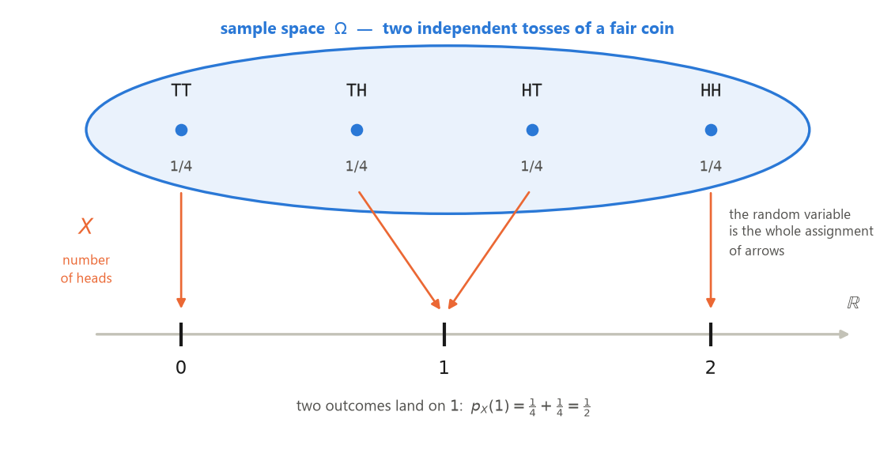
Read Fig. 0.1 left to right. The experiment is two independent tosses of a fair coin, so $\Omega = \{\texttt{HH}, \texttt{HT}, \texttt{TH}, \texttt{TT}\}$ has $4$ equally likely outcomes, each of probability $1/4$ (independence, G1 §3, and the discrete uniform law, G1 §1.3). Define $X(\omega) = $ number of heads in $\omega$, so $$X(\texttt{TT}) = 0, \qquad X(\texttt{TH}) = 1, \qquad X(\texttt{HT}) = 1, \qquad X(\texttt{HH}) = 2 .$$ Collecting all outcomes with the same value and adding their probabilities — the recipe of L05 slide 4 — gives the numbers under the value $1$ in the figure: $$\mathbf{P}(X = 1) = \mathbf{P}(\{\texttt{TH}, \texttt{HT}\}) = \mathbf{P}(\texttt{TH}) + \mathbf{P}(\texttt{HT}) = \tfrac14 + \tfrac14 = \tfrac12,$$ the middle step by additivity (the two outcomes are disjoint events), and likewise $\mathbf{P}(X=0) = 1/4$ and $\mathbf{P}(X=2) = 1/4$. Those three numbers are the PMF of $X$, the object §1 is about; they already sum to $1/4 + 1/2 + 1/4 = 1$. Averaging the values against those weights gives $\mathbb{E}[X] = 0\cdot\tfrac14 + 1\cdot\tfrac12 + 2\cdot\tfrac14 = 1$ head on average, and the spread turns out to be $\operatorname{var}(X) = 1/2$ — quantities that simply do not exist for a bare sample space of letter strings.
The same $\Omega$ carries other random variables. Let $Y = 1$ if the first toss is a head and $Y = 0$ otherwise, and let $Z = 1$ if the two tosses agree and $Z = 0$ otherwise. Then $Y(\texttt{HH}) = Y(\texttt{HT}) = 1$ while $Z(\texttt{HH}) = Z(\texttt{TT}) = 1$: three different functions, one model, and each with its own PMF ($\mathbb{E}[Y] = \mathbb{E}[Z] = 1/2$, $\operatorname{var}(Y) = \operatorname{var}(Z) = 1/4$). Studying such variables together — how one constrains another — is §4 of this note (L07 slide 1).
- $X = x$ is not an equation to solve — it is an event, the set $\{\omega \in \Omega \ \text{s.t.}\ X(\omega) = x\}$ of outcomes that $X$ sends to $x$ (L05 slide 3). Only events have probabilities, which is why $\mathbf{P}(X = x)$ makes sense.
- $p_X(x)$ has $X$ as a subscript (which random variable) and $x$ as an argument (which value). Writing $p_x(X)$, or $p(x)$ when two random variables are in play, loses exactly the information you need in §4.
- $X$ never has a numeric value in a formula: expressions like "$X = 1.7$, so $\mathbb{E}[X] = 1.7$" are category errors. By contrast $\mathbb{E}[X]$ is a number — a fixed constant computed from the whole PMF, not a random quantity.
- $g(X)$ is again a random variable (a function of a function), while $g(x)$ is a number. This distinction is what makes $\mathbb{E}[g(X)] \neq g(\mathbb{E}[X])$ in general (L05 slide 7; proved and used in §2.2 here, with a worked case in §3.3).
0.2 Roadmap of this note
G2 covers L05–L07 and rec05–rec07, i.e. Chapter 2 of the textbook (B&T §2.1–§2.7). The five sections form one chain: attach numbers to outcomes, average them, measure their spread and re-average them under partial information, let several of them interact, then collect the whole toolbox on one page.
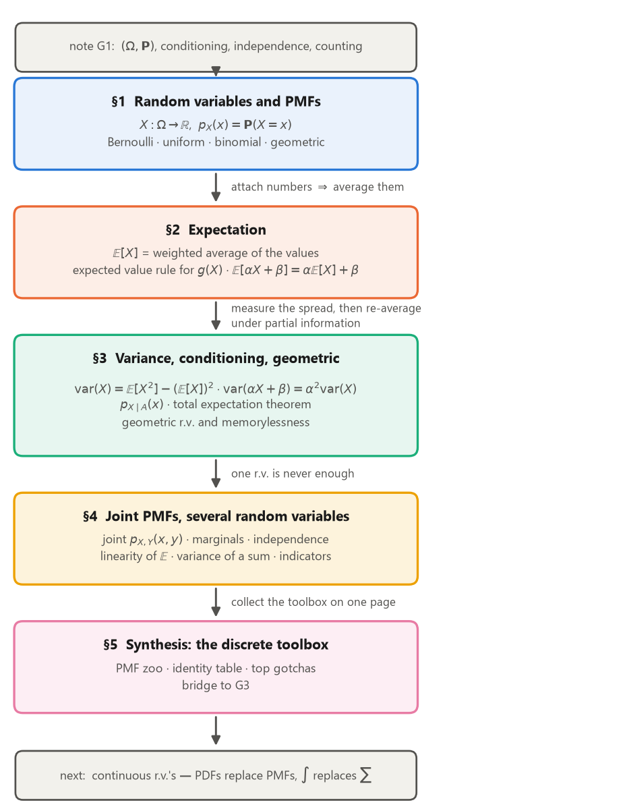
- §1 — Random variables and PMFs (L05 slides 2–5, B&T §2.1–2.2). The definition above made precise; the PMF $p_X(x) = \mathbf{P}(X = x)$ and its two defining properties $p_X(x) \ge 0$, $\sum_x p_X(x) = 1$; the standard families — Bernoulli, discrete uniform, binomial, geometric. Hook: for two independent rolls of a fair tetrahedral die with $X = \min(F,S)$, exactly $5$ of the $16$ equally likely cells have $\min = 2$, so $p_X(2) = 5/16$ (L05 slide 4, where the slide leaves the answer blank).
- §2 — Expectation (L05 slides 6–7, rec05, B&T §2.3–2.4). $\mathbb{E}[X] = \sum_x x\,p_X(x)$ as center of gravity of the PMF and as the long-run average; the expected value rule $\mathbb{E}[g(X)] = \sum_x g(x)\,p_X(x)$, which spares you the PMF of $g(X)$; linearity $\mathbb{E}[\alpha X + \beta] = \alpha\mathbb{E}[X] + \beta$. Hook: $\mathbb{E}[g(X)]$ and $g(\mathbb{E}[X])$ genuinely differ, and rec05's marksman problem shows how much.
- §3 — Variance, conditioning, and the geometric distribution (L06 slides 1–7, rec06 P3, rec07 P3, B&T §2.3–2.4, B&T §2.6). $\operatorname{var}(X) = \mathbb{E}[(X - \mathbb{E}[X])^2] = \mathbb{E}[X^2] - (\mathbb{E}[X])^2$, standard deviation, and the scaling rule $\operatorname{var}(\alpha X + \beta) = \alpha^2 \operatorname{var}(X)$; then the conditional PMF $p_{X\mid A}(x) = \mathbf{P}(X = x \mid A)$ — an ordinary PMF on a smaller world — the total expectation theorem, the geometric random variable and its memorylessness, and state recursions for waiting-time problems. Hook: shifting a random variable never changes its spread, but stretching it by $\alpha$ multiplies the variance by $\alpha^2$, not by $\alpha$; and memorylessness turns $\mathbb{E}[X] = 1/p$ into a three-line argument.
- §4 — Joint PMFs and multiple random variables (L07 slides 1–6, rec06 P1–P2, rec07 P1–P2, B&T §2.5–2.7). Joint PMFs $p_{X,Y}(x,y)$, marginals, conditional PMFs and the chain rule, independence of random variables, expectation of a function of two variables, linearity for sums, the variance of a sum, and the indicator decomposition that delivers the binomial mean and variance in three lines. Hook: $\mathbb{E}[X + Y] = \mathbb{E}[X] + \mathbb{E}[Y]$ holds with no independence assumption whatsoever — the workhorse identity of the whole chapter — while $\operatorname{var}(X+Y) = \operatorname{var}(X) + \operatorname{var}(Y)$ does need it.
- §5 — Synthesis: the discrete toolbox (all of L05–L07 and rec05–rec07, B&T §2.1–2.7). The PMF zoo on one page, the expectation and variance identities collected in a single table together with the hypothesis each one needs, the six mistakes that generate most wrong answers, and the bridge to G3. Hook: every identity in that table is either unconditional or requires independence, and knowing which is which is most of the skill.
Recitation material is folded into the section it belongs to: rec05 (derivations of the expected value rule, the marksman, size-biased bus sampling, the St. Petersburg paradox), rec06 (die-then-coin joint PMFs, eight points in the plane, variance of the geometric), rec07 (the two-variable expected value rule, a joint PMF puzzle, expected tosses until two consecutive identical outcomes). Each appears as a full statement with an expandable worked solution.
0.3 Where this sits in the course
Behind you (G1): the model $(\Omega, \mathbf{P})$, conditional probability and Bayes' rule, independence, and counting. All of it stays in force — a random variable is defined on top of a model, never instead of one, and every probability in this note is ultimately $\mathbf{P}$ evaluated on a subset of $\Omega$. Two G1 tools get used constantly: independence, to multiply per-trial probabilities when building the binomial and geometric PMFs (L05 slides 3, 5), and counting, to say how many outcome sequences produce a given value — the $\binom{n}{k}$ in the binomial PMF is G1 §4 doing its job.
Ahead: continuous random variables, where a single value has probability $0$, the PMF $p_X(x)$ is replaced by a density $f_X(x)$, and every $\sum_x$ in this note becomes an $\int dx$. Almost every definition you meet here — expectation, variance, conditioning, joint distributions, independence — is restated verbatim in that setting with that one substitution, which is the strongest practical argument for learning the discrete versions properly now.
§1 Random variables and PMFs
Sources: L05 slides 2–6 (raster p01–p02) · B&T (Bertsekas–Tsitsiklis, as in §0) §2.1–2.2 (pp. 72–79), B&T Figure 2.2 (p. 76) — throughout this note a bare § is a section of the note, a § prefixed by B&T is a section of the textbook · numbers recomputed in computes/g2_s1.py
Group G1 built probability models out of sets: a sample space $\Omega$, events $A \subseteq \Omega$, and a probability law $\mathbf{P}$ obeying the three axioms. That machinery is complete but clumsy for quantitative questions. If you want to know how long a queue is, how many packets were corrupted, or how many tosses it took to see a head, you do not want a set — you want a number. A random variable is exactly the device that attaches a number to each outcome, and the probability mass function is the object that carries all the probabilistic information about that number.
This section does four things. It defines a random variable as a function on the sample space and pins down the notation the rest of the course uses. It defines the PMF $p_X(x) = \mathbf{P}(X=x)$, proves its two defining properties from the G1 axioms, and turns the definition into a mechanical recipe — applied in full to the tetrahedral-die example that L05 slide 4 leaves blank. It then derives the four named discrete PMFs of L05 (Bernoulli, discrete uniform, binomial, geometric) from their experiments, filling in every step the slides compress, including the geometric-series normalization check. It closes with a decision guide, a comparison figure, and an interactive PMF explorer. Expectation and variance — the numerical summaries of a PMF — are §2 and §3.
1.1 What a random variable is
The definition is disarmingly simple, and the simplicity is the point: a random variable is not a variable and it is not random. It is a fixed, deterministic function. All the randomness lives where it always lived, in which outcome $\omega$ the experiment produces.
Notation (L05 slide 2). Upper case for the random variable, lower case for a numerical value it might take: $X$ is the function, $x$ is a number. "$X = x$" is shorthand for the event $\{\omega \in \Omega : X(\omega) = x\}$ — the set of outcomes that $X$ maps to $x$. Keeping the two cases straight is not pedantry; every formula below depends on it.
Two consequences of "$X$ is a function on $\Omega$" get used constantly.
- $F(f,s) = f$ — the outcome of the first throw. Range $\{1,2,3,4\}$.
- $S(f,s) = s$ — the outcome of the second throw. Range $\{1,2,3,4\}$.
- $X(f,s) = \min(f,s)$ — the smaller of the two rolls. Range $\{1,2,3,4\}$.
- $T(f,s) = f + s$ — the total. Range $\{2,3,\ldots,8\}$.
Solution
(a) With $\Omega = \{HHH, HHT, HTH, HTT, THH, THT, TTH, TTT\}$:
| $\omega$ | HHH | HHT | HTH | HTT | THH | THT | TTH | TTT |
|---|---|---|---|---|---|---|---|---|
| $H(\omega)$ | 3 | 2 | 2 | 1 | 2 | 1 | 1 | 0 |
| $L(\omega)$ | 1 | 0 | 1 | 0 | 1 | 0 | 1 | 0 |
(b) No. A function of $H$ must give the same answer whenever $H$ gives the same answer. But $H(HHT) = H(HTH) = 2$ while $L(HHT) = 0 \neq 1 = L(HTH)$. So no $g$ can satisfy $L = g(H)$: $g(2)$ would have to equal both $0$ and $1$. Two random variables on the same space need not determine each other — knowing the count of heads does not tell you where they fell.
Solution
$\{T = 5\} = \{(f,s) : f + s = 5\} = \{(1,4),(2,3),(3,2),(4,1)\}$ — $4$ outcomes. (The full count-by-sum table, from computes/g2_s1.py, is $1,2,3,4,3,2,1$ cells for $T = 2,3,4,5,6,7,8$; these sum to $16$.)
$\{X \ge 3\} = \{\min(f,s) \ge 3\} = \{(f,s) : f \ge 3 \text{ and } s \ge 3\} = \{(3,3),(3,4),(4,3),(4,4)\}$ — $4$ outcomes. The rewriting "$\min \ge 3$ iff both $\ge 3$" is the identity that makes minima easy; it is used again in §1.2.
$\{F = S\} = \{(1,1),(2,2),(3,3),(4,4)\}$ — $4$ outcomes. Equivalently $\{D = 0\}$ where $D = |F - S|$.
1.2 The probability mass function
A random variable by itself is just a labelling of outcomes. What makes it useful is that the probability law on $\Omega$ pushes forward to a probability law on the numbers.
Proof — both properties, from the G1 axioms
Nonnegativity. $p_X(x)$ is by definition $\mathbf{P}(A_x)$ for the event $A_x = \{\omega : X(\omega) = x\}$. Axiom 1 (nonnegativity, G1 §1.2) says every event has probability $\ge 0$, so $p_X(x) \ge 0$. Nothing else is needed.
Normalization. Let $x_1, x_2, \ldots$ be the (finite or countable) list of values in the range of $X$, and put $A_i = \{\omega : X(\omega) = x_i\}$.
Step 1 — the $A_i$ are pairwise disjoint. Suppose $\omega \in A_i \cap A_j$ with $i \neq j$. Then $X(\omega) = x_i$ and $X(\omega) = x_j$, so $x_i = x_j$ — impossible, since the $x_i$ are distinct values. Hence $A_i \cap A_j = \varnothing$ for $i \neq j$. (This step is exactly where "$X$ is a function" is used: a function returns one value per input.)
Step 2 — the $A_i$ cover $\Omega$. Take any $\omega \in \Omega$. The number $X(\omega)$ lies in the range of $X$ by definition of the range, so $X(\omega) = x_i$ for some $i$, i.e. $\omega \in A_i$. Hence $\bigcup_i A_i = \Omega$.
Step 3 — add. Steps 1 and 2 say $\{A_i\}$ is a partition of $\Omega$. By countable additivity (G1 §1.5 — finite additivity suffices when the range is finite), $$\sum_i \mathbf{P}(A_i) \;=\; \mathbf{P}\Big(\bigcup_i A_i\Big) \;=\; \mathbf{P}(\Omega) \;=\; 1,$$ the last equality by Axiom 2 (normalization). Since $\mathbf{P}(A_i) = p_X(x_i)$ by the definition of the PMF, this reads $\sum_x p_X(x) = 1$.
The $\mathbf{P}(X \in S)$ formula. The event $\{X \in S\}$ is the union $\bigcup_{x \in S} A_x$ over the values $x \in S$ that lie in the range (values outside the range contribute $\varnothing$). These sets are pairwise disjoint by Step 1, so additivity gives $\mathbf{P}(X \in S) = \sum_{x \in S} \mathbf{P}(A_x) = \sum_{x \in S} p_X(x)$. $\blacksquare$
The definition converts into a procedure with no thinking required. The lecture states it as three bullets; B&T states it as the two-step box of B&T Figure 2.2.
- Fix the model. Write down $\Omega$ and the probability of each outcome (or of the relevant groups of outcomes). Write down $X$ as an explicit rule $\omega \mapsto X(\omega)$.
- Find the range. List the values $x$ that $X$ can actually take. These are the only $x$ with $p_X(x) > 0$; everything else gets $0$ automatically.
- For each such $x$: collect all the outcomes $\omega$ with $X(\omega) = x$.
- Add their probabilities. The sum is $p_X(x)$. (In an equally likely model this is just count the outcomes and divide by $|\Omega|$.)
- Repeat for every $x$ in the range.
- Check. Verify $\sum_x p_X(x) = 1$. In a counting model the counts must add to $|\Omega|$. This catches the two commonest errors — a missed outcome and an outcome counted twice — at zero cost.
Statement (as printed on the slide). Two independent rolls of a fair tetrahedral die. $F$ is the outcome of the first throw, $S$ the outcome of the second, and $X = \min(F,S)$. Compute $p_X(2)$. The slide leaves the right-hand side blank. We compute $p_X(2)$ and then the whole PMF.
Step 1 — the model. As in Example 1.1, $\Omega = \{1,2,3,4\}^2$ with $|\Omega| = 16$ outcomes, each of probability $\mathbf{P}(\{(f,s)\}) = 1/16$. (Fairness makes the four faces equally likely; independence of the two rolls makes each pair have probability $\tfrac14 \cdot \tfrac14 = \tfrac1{16}$, by the multiplication rule of G1.) The random variable is $X(f,s) = \min(f,s)$.
Step 2 — the range. The minimum of two numbers from $\{1,2,3,4\}$ is again in $\{1,2,3,4\}$, and each of those four values does occur (e.g. $\min(k,k) = k$). So the range is $\{1,2,3,4\}$.
Step 3 — collect the outcomes with $X = 2$. We need $\min(f,s) = 2$: the smaller of the two rolls is $2$. That means both rolls are $\ge 2$ and at least one equals $2$. Listing them systematically — first the ones with $f = 2$, then the extra ones with $s = 2$ and $f > 2$: $$\{X = 2\} \;=\; \{(2,2),\,(2,3),\,(2,4),\,(3,2),\,(4,2)\},$$ which has $5$ outcomes. (Sanity check on the list: $(2,1)$ is excluded because $\min(2,1)=1$; $(3,3)$ is excluded because $\min = 3$.) These are the shaded cells of Fig. 1.1.
Step 4 — add their probabilities. The five outcomes are distinct, hence disjoint as singleton events, so additivity gives $$p_X(2) \;=\; \mathbf{P}(X = 2) \;=\; \underbrace{\tfrac1{16} + \tfrac1{16} + \tfrac1{16} + \tfrac1{16} + \tfrac1{16}}_{5 \text{ terms}} \;=\; \frac{5}{16} \;=\; 0.3125 .$$
Step 5 — repeat for the other values. Same procedure:
- $\{X = 1\}$: at least one roll equals $1$ (then the min is certainly $1$). Outcomes: the four with $f=1$, plus the three with $s = 1$ and $f \neq 1$ — that is $4 + 3 = 7$ outcomes, so $p_X(1) = 7/16 = 0.4375$.
- $\{X = 3\}$: both rolls $\ge 3$, at least one equal to $3$: $(3,3),(3,4),(4,3)$ — $3$ outcomes, $p_X(3) = 3/16 = 0.1875$.
- $\{X = 4\}$: both rolls $\ge 4$, i.e. both equal $4$: $(4,4)$ only — $1$ outcome, $p_X(4) = 1/16 = 0.0625$.
Step 6 — the check. Counts: $7 + 5 + 3 + 1 = 16 = |\Omega|$. Probabilities:
$$\sum_x p_X(x) = \frac{7}{16} + \frac{5}{16} + \frac{3}{16} + \frac{1}{16} = \frac{16}{16} = 1 . \checkmark$$
So the complete answer is
$$p_X(x) = \begin{cases} 7/16, & x = 1,\\ 5/16, & x = 2,\\ 3/16, & x = 3,\\ 1/16, & x = 4,\\ 0, & \text{otherwise.}\end{cases}$$
All four values are confirmed by exhaustive enumeration of the 16 outcomes in computes/g2_s1.py (pmf_min_frac).
A shortcut worth knowing — count the tail instead. The event $\{X \ge k\} = \{\min(F,S) \ge k\}$ is $\{F \ge k\} \cap \{S \ge k\}$, and each roll has $5-k$ faces that are $\ge k$, so $\{X \ge k\}$ contains $(5-k)^2$ outcomes: $16, 9, 4, 1$ for $k = 1,2,3,4$ (verified as min_ge_k_counts). Since $\{X = k\} = \{X \ge k\} \setminus \{X \ge k+1\}$ and the second set sits inside the first, the counts subtract:
$$\#\{X = k\} = (5-k)^2 - (4-k)^2 = \big[(5-k)+(4-k)\big]\big[(5-k)-(4-k)\big] = (9-2k)(1) = 9 - 2k,$$
giving $7,5,3,1$ for $k = 1,2,3,4$ — the same answer with no listing. Hence $p_X(k) = (9-2k)/16$ for $k = 1,2,3,4$.
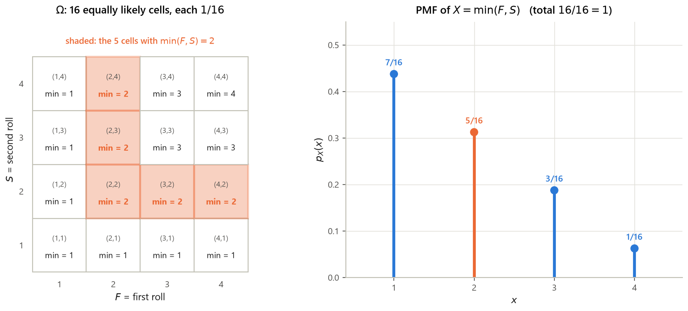
Solution
Range. $\max(f,s) \in \{1,2,3,4\}$, and every value occurs.
Tail counting (the shortcut of Example 1.2, mirrored). $\{M \le k\} = \{F \le k\} \cap \{S \le k\}$ contains $k^2$ outcomes, since each roll has $k$ faces $\le k$: $1, 4, 9, 16$ for $k = 1,2,3,4$. Then
$$\#\{M = k\} = k^2 - (k-1)^2 = 2k - 1,$$
giving $1, 3, 5, 7$ for $k = 1,2,3,4$ (confirmed as pmf_max_counts).
Direct check of one value. $\{M = 2\} = \{(1,2),(2,1),(2,2)\}$ — three outcomes — so $p_M(2) = 3/16$, matching B&T Figure 2.2 (p. 76), which works this exact case.
PMF. $$p_M(k) = \frac{2k-1}{16}, \quad k = 1,2,3,4: \qquad p_M(1) = \tfrac1{16},\ p_M(2) = \tfrac3{16},\ p_M(3) = \tfrac5{16},\ p_M(4) = \tfrac7{16}.$$ Check: $1 + 3 + 5 + 7 = 16$, so the probabilities sum to $16/16 = 1$. $\checkmark$
Note the PMF of $M$ is the PMF of $X = \min$ read backwards — a consequence of the symmetry $\max(f,s) = 5 - \min(5-f, 5-s)$ for faces in $\{1,2,3,4\}$.
Solution
Range. $|f - s|$ with $f,s \in \{1,2,3,4\}$ takes values $0,1,2,3$.
Collect and count.
- $D = 0$: $(1,1),(2,2),(3,3),(4,4)$ — $4$ outcomes.
- $D = 1$: $(1,2),(2,1),(2,3),(3,2),(3,4),(4,3)$ — $6$ outcomes (three "adjacent" pairs, each in two orders).
- $D = 2$: $(1,3),(3,1),(2,4),(4,2)$ — $4$ outcomes.
- $D = 3$: $(1,4),(4,1)$ — $2$ outcomes.
PMF. Dividing by $16$:
$$p_D(0) = \tfrac{4}{16} = \tfrac14, \quad p_D(1) = \tfrac{6}{16} = \tfrac38, \quad p_D(2) = \tfrac{4}{16} = \tfrac14, \quad p_D(3) = \tfrac{2}{16} = \tfrac18,$$
matching pmf_d_frac. Check: $4+6+4+2 = 16$, so the masses sum to $1$. $\checkmark$ (In general $\#\{D = d\} = 2(4-d)$ for $d \ge 1$ and $4$ for $d = 0$: there are $4-d$ ordered-by-size pairs at distance $d$, each realizable in two orders.)
Solution
Model. Take $\Omega$ = the set of unordered pairs of balls; $|\Omega| = \binom{5}{2} = 10$, each of probability $1/10$ (G1 counting).
Range. $R \in \{0,1,2\}$.
Count each value by choosing which balls are red and which are blue: $$\#\{R = r\} = \binom{3}{r}\binom{2}{2-r}.$$ $r=0$: $\binom30\binom22 = 1 \cdot 1 = 1$. $r=1$: $\binom31\binom21 = 3 \cdot 2 = 6$. $r=2$: $\binom32\binom20 = 3 \cdot 1 = 3$.
PMF. $p_R(0) = 1/10$, $p_R(1) = 6/10 = 3/5$, $p_R(2) = 3/10$. Check: $1 + 6 + 3 = 10$, so the masses sum to $1$. $\checkmark$
This is not a binomial PMF, even though it counts "successes": the draws are not independent and the success probability changes after the first draw ($3/5$ then $2/4$ or $3/4$). It is the hypergeometric PMF. Keep it in mind as the standing counterexample when §1.4 tempts you to call every count binomial.
1.3 Two starter PMFs: Bernoulli and discrete uniform
Four PMFs recur so often that they are named. Two are almost trivial; deriving them anyway fixes the recipe.
Derivation. Here $\Omega = \{H, T\}$ with $\mathbf{P}(\{H\}) = p$ and $\mathbf{P}(\{T\}) = 1-p$, and $X(H) = 1$, $X(T) = 0$. Applying the recipe: the range is $\{0,1\}$; the outcomes with $X = 1$ are $\{H\}$, whose probability is $p$; the outcomes with $X = 0$ are $\{T\}$, whose probability is $1-p$. Check: $p + (1-p) = 1$. $\checkmark$
Derivation. "Each value equally likely" means $p_X(k) = c$, the same constant $c$, for all $n = b-a+1$ values in the range. Normalization forces
$$1 = \sum_{k=a}^{b} p_X(k) = \sum_{k=a}^{b} c = n c \quad \Longrightarrow \quad c = \frac1n = \frac{1}{b-a+1},$$
where the middle step just says that adding the same number $c$ to itself $n$ times gives $nc$. So the constant is not a choice — normalization pins it. For $a=0,b=n$: $c = 1/(n+1)$, e.g. $n = 5$ gives $c = 1/6 \approx 0.166667$ (unif_0_5_mass).
Solution
(a) $X$ is discrete uniform on $\{1,\ldots,6\}$, so $n = 6 - 1 + 1 = 6$ and $p_X(k) = 1/6$ for $k = 1,\ldots,6$, zero otherwise. Check: $6 \times \tfrac16 = 1$. $\checkmark$
(b) $\{Y = 1\} = \{2,4,6\}$, three outcomes of probability $1/6$ each, so $p_Y(1) = 3/6 = 1/2$; and $p_Y(0) = 1 - 1/2 = 1/2$. $Y$ is Bernoulli with parameter $p = 1/2$ — the indicator of the event "even face". Note that a function of a uniform random variable is generally not uniform on its range; here it happens to be, because the event and its complement have equal probability.
Solution
(a) The number of values is $17 - 3 + 1 = 15$, so $p_X(k) = 1/15$ for each $k$ in range; in particular $p_X(10) = 1/15 \approx 0.0667$.
(b) By the $\mathbf{P}(X \in S)$ formula with $S = \{12,13,\ldots,17\}$, which has $17-12+1 = 6$ elements: $$\mathbf{P}(X \ge 12) = \sum_{k=12}^{17} \frac{1}{15} = \frac{6}{15} = \frac{2}{5} = 0.4.$$
(c) The multiples of $5$ in $\{3,\ldots,17\}$ are $5, 10, 15$ — three values — so the probability is $3/15 = 1/5 = 0.2$.
1.4 The binomial PMF
Now the two PMFs that carry real content. Both come from repeated independent tosses of the same coin; they differ only in what you count and when you stop.
Setup. A coin with $\mathbf{P}(H) = p$ is tossed $n = 4$ times, independently. Let $X$ be the number of heads. The sample space is the set of length-$4$ sequences over $\{H,T\}$, $|\Omega| = 2^4 = 16$ (verified as n4_total_sequences). Note these $16$ outcomes are not equally likely unless $p = 1/2$.
Step 1 — probability of one sequence. Take $HHTT$. It is the intersection of four single-toss events (toss 1 is $H$, toss 2 is $H$, toss 3 is $T$, toss 4 is $T$), which are independent by assumption, so by the multiplication rule for independent events (G1 §3) $$\mathbf{P}(HHTT) = \mathbf{P}(H)\,\mathbf{P}(H)\,\mathbf{P}(T)\,\mathbf{P}(T) = p \cdot p \cdot (1-p) \cdot (1-p) = p^2 (1-p)^2 .$$ The same computation applies to any sequence with two heads and two tails — multiplication is commutative, so only the counts of $H$'s and $T$'s matter, not their order. Hence every one of the six sequences below has probability $p^2(1-p)^2$. This is the line the slide omits.
Step 2 — collect the outcomes with $X = 2$. The slide lists all six:
$$\{X = 2\} = \{HHTT,\ HTHT,\ HTTH,\ THHT,\ THTH,\ TTHH\},$$
confirmed by exhaustive enumeration in computes/g2_s1.py (n4_k2_sequences).
Step 3 — add. Distinct sequences are disjoint events, so additivity gives $$p_X(2) = \mathbf{P}(HHTT) + \mathbf{P}(HTHT) + \mathbf{P}(HTTH) + \mathbf{P}(THHT) + \mathbf{P}(THTH) + \mathbf{P}(TTHH)$$ $$= \underbrace{p^2(1-p)^2 + \cdots + p^2(1-p)^2}_{6 \text{ equal terms}} = 6\,p^2(1-p)^2 .$$
Step 4 — recognize the $6$. The six sequences are exactly the ways to choose which two of the four toss positions are heads, and by G1's counting rules the number of $2$-element subsets of a $4$-element set is $$\binom{4}{2} = \frac{4!}{2!\,2!} = \frac{24}{2 \cdot 2} = 6 . \checkmark$$ So $p_X(2) = \binom{4}{2} p^2(1-p)^2$, the slide's last line — and now the $6$ is derived, not observed.
Numbers. $p = 0.5$: $6(0.25)(0.25) = 0.375$. $p = 0.6$: $6(0.36)(0.16) = 0.3456$. $p = 0.3$: $6(0.09)(0.49) = 0.2646$. (All from binom_n4_k2_*.)
Derivation of the general formula (the jump the slide asserts)
Step 1 — the sample space. An outcome is a sequence $\omega = (\omega_1,\ldots,\omega_n)$ with each $\omega_i \in \{H,T\}$; there are $2^n$ of them. $X(\omega)$ is the number of $H$'s in $\omega$, so the range of $X$ is $\{0,1,\ldots,n\}$.
Step 2 — probability of one sequence with exactly $k$ heads. Fix such a sequence. It specifies the result of each of the $n$ independent tosses, so its probability is the product of $n$ per-toss probabilities: $k$ factors of $p$ (one for each head) and $n-k$ factors of $1-p$ (one for each tail). Regrouping the product (commutativity of multiplication), $$\mathbf{P}(\omega) = p^{k}(1-p)^{n-k} \qquad \text{for every } \omega \text{ with } k \text{ heads.}$$ The key point: this depends on $k$ only, not on where the heads are.
Step 3 — count such sequences. A sequence with exactly $k$ heads is determined by the set of positions holding the heads, a $k$-element subset of $\{1,\ldots,n\}$; conversely each such subset gives one sequence. The correspondence is one-to-one, so the number of sequences equals the number of $k$-subsets, which G1 computed as $\binom{n}{k} = \frac{n!}{k!(n-k)!}$.
Step 4 — add. The event $\{X = k\}$ is the union of those $\binom{n}{k}$ distinct sequences, which are disjoint singleton events, so by additivity $$p_X(k) = \sum_{\omega : X(\omega) = k} \mathbf{P}(\omega) = \underbrace{\binom{n}{k}}_{\text{how many}} \times \underbrace{p^k(1-p)^{n-k}}_{\text{each one's probability}} .$$ This is the general formula. For $n=4$, $k=2$ it returns $6p^2(1-p)^2$, matching Example 1.3. $\blacksquare$
Step 5 — normalization check. By the binomial theorem $\sum_{k=0}^{n}\binom{n}{k}a^k b^{n-k} = (a+b)^n$, applied with $a = p$ and $b = 1-p$:
$$\sum_{k=0}^{n} \binom{n}{k}p^k(1-p)^{n-k} = \big(p + (1-p)\big)^n = 1^n = 1 . \checkmark$$
Numerically confirmed to $10^{-12}$ for $(n,p) = (4,0.5), (4,0.6), (10,0.35), (12,0.2), (25,0.5)$ in computes/g2_s1.py (binom_norm_*).
Solution
This is binomial with $n = 5$, $p = 0.3$, $k = 2$:
$$p_X(2) = \binom{5}{2}(0.3)^2(0.7)^{3}.$$
Factor by factor: $\binom{5}{2} = \frac{5!}{2!\,3!} = \frac{120}{2 \cdot 6} = 10$; $(0.3)^2 = 0.09$; $(0.7)^3 = 0.343$. So each of the $10$ qualifying sequences has probability $0.09 \times 0.343 = 0.03087$, and
$$p_X(2) = 10 \times 0.03087 = 0.3087 .$$
(All four intermediate values are binom_n5_p03_k2_parts in computes/g2_s1.py.) Exponent check: $2 + 3 = 5 = n$. $\checkmark$
Solution
With $p = 1/2$, $p^k(1-p)^{3-k} = (1/2)^3 = 1/8$ for every $k$ — all $2^3 = 8$ sequences are equally likely — so the PMF is just the count of subsets divided by $8$:
$$p_X(k) = \binom{3}{k}\Big(\tfrac12\Big)^3 = \frac{\binom{3}{k}}{8}, \qquad \binom30 = 1,\ \binom31 = 3,\ \binom32 = 3,\ \binom33 = 1 .$$
So $p_X(0) = 1/8$, $p_X(1) = 3/8$, $p_X(2) = 3/8$, $p_X(3) = 1/8$ (binom_n3_p05_table). Check: $\tfrac18 + \tfrac38 + \tfrac38 + \tfrac18 = \tfrac88 = 1$. $\checkmark$ The symmetry $p_X(k) = p_X(3-k)$ is the $p = 1/2$ mirror symmetry noted above.
Solution
$\{X \ge 1\}$ is the complement of $\{X = 0\}$, so by the complement rule (G1 §1.2),
$$\mathbf{P}(X \ge 1) = 1 - p_X(0) = 1 - \binom{10}{0}(0.35)^0(0.65)^{10} = 1 - (0.65)^{10}.$$
From binom_n10_p035_table, $p_X(0) = 0.013463$, so $\mathbf{P}(X \ge 1) = 1 - 0.013463 = 0.986537$. Summing $p_X(1) + \cdots + p_X(10)$ gives the same number, but with nine more terms — always look for the complement when the event is "at least one".
1.5 The geometric PMF
The binomial fixes $n$ and counts successes. Invert the question — fix the number of successes at one and count trials — and the geometric PMF appears.
Setup. Toss a coin repeatedly and independently, with $\mathbf{P}(H) = p > 0$ on each toss. Let $X$ be the number of tosses up to and including the first head. The requirement $p > 0$ is what guarantees a head eventually appears; see the Gotcha below.
Step 1 — the range. $X$ can be $1$ (head immediately), $2$, $3$, …, with no upper bound: $X \in \{1,2,3,\ldots\}$, a countably infinite range. This is the first PMF in this section with infinitely many values.
Step 2 — collect the outcomes with $X = k$. "$X = k$" says the first head arrives on toss $k$, which pins down the first $k$ tosses exactly: tosses $1$ through $k-1$ are tails (otherwise the first head would have come earlier) and toss $k$ is a head. So there is only one qualifying pattern for the first $k$ tosses, $$\{X = k\} = \{\underbrace{TT\cdots T}_{k-1 \text{ tails}}H\},$$ which is the slide's $\mathbf{P}(TT\cdots TH)$. Unlike the binomial, no counting factor appears — there is exactly one way for the first head to arrive on toss $k$.
Step 3 — its probability, by independence. The pattern is an intersection of $k$ independent single-toss events, so its probability is the product of their probabilities: $k-1$ factors of $\mathbf{P}(T) = 1-p$ and one factor of $\mathbf{P}(H) = p$, $$\mathbf{P}(\underbrace{TT\cdots T}_{k-1}H) = \underbrace{(1-p)(1-p)\cdots(1-p)}_{k-1 \text{ factors}} \cdot p = (1-p)^{k-1}p .$$ This multiplication is the [derivation gap] the slide leaves implicit. Hence $$\boxed{\,p_X(k) = (1-p)^{k-1}p, \qquad k = 1,2,3,\ldots\,}$$ and $p_X(k) = 0$ for all other $k$ (including $k = 0$: you cannot see a head in zero tosses).
Numbers ($p = 0.3$, from geom_p03_table). $p_X(1) = 0.3$, $p_X(2) = 0.7 \times 0.3 = 0.21$, $p_X(3) = 0.49 \times 0.3 = 0.147$, $p_X(4) = 0.1029$, $p_X(5) = 0.07203$, … Each term is $0.7$ times the previous one.
Normalization: $\sum_{k=1}^{\infty}(1-p)^{k-1}p = 1$ — the check the slide only implies
Write $q = 1-p$ for the tail probability, so $0 \le q < 1$ (here $q < 1$ because $p > 0$). Substituting $j = k-1$, so that $j$ runs over $0,1,2,\ldots$ as $k$ runs over $1,2,3,\ldots$: $$\sum_{k=1}^{\infty} (1-p)^{k-1}p \;=\; p\sum_{j=0}^{\infty} q^{\,j}.$$ The constant $p$ comes out of the sum because it multiplies every term.
Step 1 — the finite geometric sum. Let $S_N = \sum_{j=0}^{N-1} q^{\,j} = 1 + q + q^2 + \cdots + q^{N-1}$. Multiply by $q$ and subtract:
$$S_N - qS_N = (1 + q + \cdots + q^{N-1}) - (q + q^2 + \cdots + q^{N}) = 1 - q^{N},$$
because every term except the leading $1$ and the trailing $q^N$ cancels in pairs (telescoping). Factoring the left side, $(1-q)S_N = 1 - q^N$, and since $q < 1$ we may divide by $1 - q \neq 0$:
$$S_N = \frac{1 - q^{N}}{1 - q}.$$
Numerical check with $q = 0.7$, $N = 10$: direct summation gives $3.23917492$, and $(1 - 0.7^{10})/0.3 = 3.23917492$ (geom_series_partial_N10_q0.7). $\checkmark$
Step 2 — let $N \to \infty$. Since $0 \le q < 1$, $q^N \to 0$ (repeatedly multiplying by a number below $1$ drives the product to zero). Therefore
$$\sum_{j=0}^{\infty} q^{\,j} = \lim_{N\to\infty} S_N = \frac{1 - 0}{1-q} = \frac{1}{1-q}.$$
With $q = 0.7$ this is $1/0.3 = 3.33333333$ (geom_series_limit_q0.7). $\checkmark$
Step 3 — put it together. Since $1 - q = 1 - (1-p) = p$,
$$\sum_{k=1}^{\infty} p_X(k) = p \cdot \frac{1}{1-q} = p \cdot \frac{1}{p} = 1 . \checkmark$$
So the geometric PMF is a legitimate PMF (B&T §2.2, p. 78). Numerically, summing $20\,000$ terms gives $1.0$ to $10^{-12}$ for $p = 0.3, 0.5, 0.1$ (geom_norm_*); the partial sums for $p=0.3$ climb $0.3,\ 0.51,\ 0.657,\ 0.83193,\ 0.971752,\ 0.999202$ at $k \le 1,2,3,5,10,20$ (geom_p03_partial_sums).
Bonus — the tail probability. The same series gives, for any integer $k \ge 0$,
$$\mathbf{P}(X > k) = \sum_{i=k+1}^{\infty}(1-p)^{i-1}p = p(1-p)^{k}\sum_{j=0}^{\infty}(1-p)^{j} = p(1-p)^k \cdot \frac1p = (1-p)^k,$$
where the middle step factors $(1-p)^k$ out of every term. This also follows in one line without any series: $\{X > k\}$ says the first $k$ tosses are all tails, an event of probability $(1-p)^k$ by independence. Check for $p = 0.3$, $k = 3$: series sum $0.343 = 0.7^3$. $\checkmark$ (geom_tail_p0.3_k3.)
scipy.stats.geom and numpy.random.geometric use the "number of trials" convention — geom.pmf(0, p) is $0$ and geom.pmf(1, p) is $p$ — whereas the shifted "number of failures" version is scipy.stats.nbinom(1, p), whose mass at $0$ is $p$.) 6.041 uses the "number of trials" version of L05 slide 3.Solution
(a) $p_X(4) = (0.7)^{3}(0.3) = 0.343 \times 0.3 = 0.1029$.
(b) $\mathbf{P}(X > 3) = (1-p)^3 = (0.7)^3 = 0.343$ — the first three tosses are all tails.
(c) By $\mathbf{P}(X \in S) = \sum_{x\in S}p_X(x)$ with $S = \{2,3,4\}$:
$$0.21 + 0.147 + 0.1029 = 0.4599 .$$
Cross-check with tails: $\mathbf{P}(2 \le X \le 4) = \mathbf{P}(X > 1) - \mathbf{P}(X > 4) = 0.7 - 0.7^4 = 0.7 - 0.2401 = 0.4599$. $\checkmark$ (Values from geom_p03_table.)
Solution
Range: $N \in \{1,2,3\}$ — the experiment stops at three tosses no matter what.
$N = 1$: the first toss is a head: $p_N(1) = p = 0.4$.
$N = 2$: tail then head: $p_N(2) = (1-p)p = 0.6 \times 0.4 = 0.24$.
$N = 3$: the first two tosses are tails; the third toss happens regardless of its result, so this event is just $\{TT\ast\}$: $p_N(3) = (1-p)^2 = 0.36$. Note it is not $(1-p)^2 p = 0.144$ — that would be the probability of a head on toss 3, but $N = 3$ whether toss 3 is a head or a tail.
Check: $0.4 + 0.24 + 0.36 = 1$. $\checkmark$ (trunc_geom_p04.)
Why not geometric: a geometric random variable has infinite range, and its masses decay by a constant factor $1-p$ forever. Here the range is truncated at $3$, and the last mass is inflated ($0.36$ instead of $0.144$) because it absorbs the entire remaining tail $\mathbf{P}(X \ge 3) = 0.36$ of the untruncated geometric. Truncating a geometric never yields another geometric.
Solution
Use the tail: $\mathbf{P}(X \le k) = 1 - \mathbf{P}(X > k) = 1 - (0.8)^k$. Require
$$1 - (0.8)^k \ge 0.9 \iff (0.8)^k \le 0.1 \iff k \ln 0.8 \le \ln 0.1 \iff k \ge \frac{\ln 0.1}{\ln 0.8},$$
the inequality flipping at the last step because $\ln 0.8 < 0$. Numerically $\ln 0.1 = -2.302585$ and $\ln 0.8 = -0.223144$, so $k \ge 10.3189$, i.e. $k = 11$. Verify: $(0.8)^{10} = 0.107374$, giving $\mathbf{P}(X \le 10) = 0.892626 < 0.9$; $(0.8)^{11} = 0.085899$, giving $\mathbf{P}(X \le 11) = 0.914101 \ge 0.9$. $\checkmark$ So $11$ attempts. (The same window computation, at the $0.999$ level, sets the plotting range of the widget below — widget_geom_window_*.)
1.6 Choosing among the named PMFs
All four PMFs sit side by side below. Read them as four different answers to "what number is the experiment producing?".
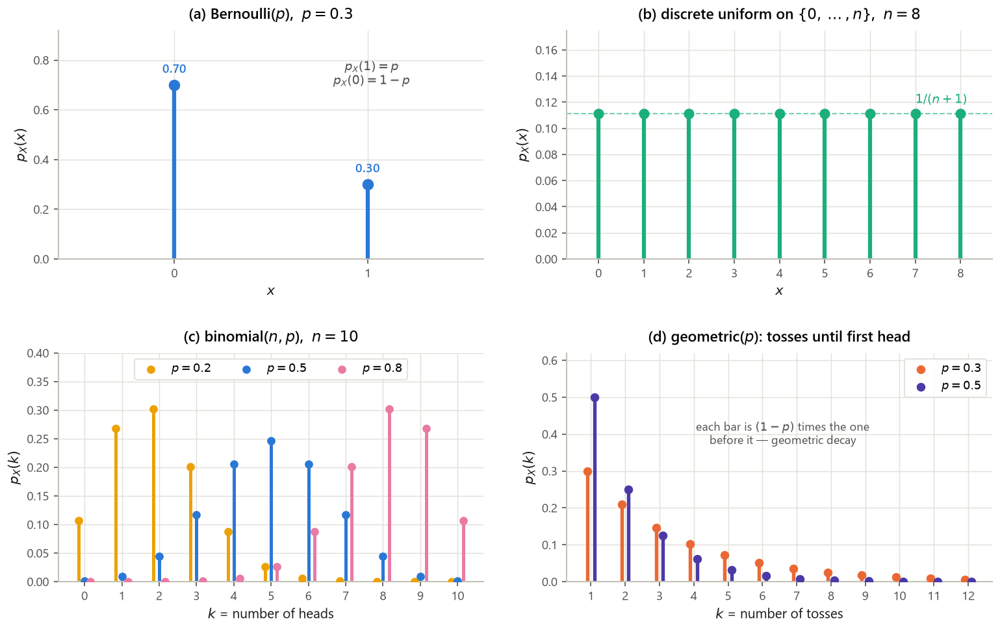
- Is there just one trial with a yes/no result, and does $X$ flag it $0$/$1$? → Bernoulli($p$), $p_X(1) = p$, $p_X(0) = 1-p$. (Also the case whenever $X$ is the indicator of an event.)
- Does $X$ take finitely many values that are equally likely by symmetry? → discrete uniform on $\{a,\ldots,b\}$, $p_X(k) = 1/(b-a+1)$.
- Are there repeated independent trials with the same success probability $p$? Then ask when the experiment stops:
- stops after a preset number $n$ of trials, and $X$ counts the successes → binomial($n,p$), $p_X(k) = \binom{n}{k}p^k(1-p)^{n-k}$, $k = 0,\ldots,n$;
- stops at the first success, and $X$ counts the trials → geometric($p$), $p_X(k) = (1-p)^{k-1}p$, $k = 1,2,\ldots$
- Otherwise — trials dependent (sampling without replacement), $p$ varying between trials, values unequally likely, or a truncated/mixed stopping rule — do not force a name. Use the general recipe of §1.2: collect the outcomes with $X = x$, add their probabilities, and check that the masses sum to $1$.

Interactive: the PMF explorer
The widget draws the PMF of whichever named distribution you pick, as its parameters move. The readout also shows the mean $\mathbb{E}[X]$ and variance $\operatorname{var}(X)$ — quantities not defined yet. They are introduced and derived in §2 (expectation) and §3 (variance); here they are only labels for "where the PMF balances" and "how spread out it is", printed so you can watch them respond to the sliders. The values shown are the standard formulas $\mathbb{E}[X] = np$, $\operatorname{var}(X) = np(1-p)$ (binomial), $1/p$ and $(1-p)/p^2$ (geometric), $n/2$ and $((n+1)^2-1)/12$ (uniform on $\{0,\ldots,n\}$), each verified against direct summation over the PMF in computes/g2_s1.py.
widget_geom_window_*), and the mean $1/p$ blows up accordingly. Below $p \approx 0.108$ that window exceeds the widget's $60$-bar cap (widget_geom_cap60_crossover_p), which is why the "mass plotted" readout slips below $1$ — at $p = 0.05$ only $0.9539$ of the distribution fits on screen. Nothing is lost; the missing mass is out in the tail.Solution
(a) Binomial($20, 1/6$): $n = 20$ trials fixed in advance, independent, "six" has the same probability $1/6$ each roll, $X$ counts successes. $p_X(k) = \binom{20}{k}(1/6)^k(5/6)^{20-k}$.
(b) Geometric($1/6$): independent trials, same $p = 1/6$, stop at the first success, $X$ counts trials. $p_X(k) = (5/6)^{k-1}(1/6)$, $k \ge 1$.
(c) Discrete uniform on $\{1,\ldots,6\}$: six equally likely values, mass $1/6$ each.
(d) None of the four. The cards are dealt without replacement, so the draws are dependent and the probability of an ace changes as cards leave the deck. Use the general recipe: $p_X(k) = \binom{4}{k}\binom{48}{5-k}/\binom{52}{5}$ (hypergeometric, as in Practice 1.5).
(e) Bernoulli($p$) with $p$ = the fraction of students who passed — the indicator of the event "passed".
Solution
(a) Binomial with $n = 20$, $p = 0.05$, $k = 1$: $$\binom{20}{1}(0.05)^1(0.95)^{19} = 20 \times 0.05 \times 0.377354 = 0.377354 .$$ (Here $(0.95)^{19} = 0.377354$ and the factor $20 \times 0.05 = 1$ makes the answer equal to it.)
(b) Geometric with $p = 0.05$, $k = 20$: $(0.95)^{19}(0.05) = 0.377354 \times 0.05 = 0.018868$.
(c) Part (a) is about $20$ times larger. Both events involve exactly one defective among $20$ items, but (a) allows the defective to be in any of the $20$ positions — $\binom{20}{1} = 20$ arrangements — while (b) insists it be last, one arrangement, and additionally requires the other $19$ to come first. Same per-sequence probability $(0.05)(0.95)^{19}$, twenty times as many sequences. This is precisely the $\binom{n}{k}$-versus-no-factor contrast of §1.6.
- Random variable: a function $X : \Omega \to \mathbb{R}$. Randomness is in $\omega$, not in $X$. Many random variables can live on one $\Omega$; $g(X)$ is again a random variable. Discrete = finite or countable range. Upper case $X$ = the function, lower case $x$ = a value, "$X = x$" = the event $\{\omega : X(\omega) = x\}$.
- PMF: $p_X(x) = \mathbf{P}(X = x) = \mathbf{P}(\{\omega : X(\omega) = x\})$, with $p_X(x) \ge 0$ and $\sum_x p_X(x) = 1$ (both proved from the G1 axioms via the partition $\{X = x\}$ of $\Omega$). More generally $\mathbf{P}(X \in S) = \sum_{x \in S} p_X(x)$.
- Recipe: for each value $x$ — collect the outcomes with $X(\omega) = x$, add their probabilities; repeat; check that the total is $1$.
- Worked slide example: two fair tetrahedral rolls, $X = \min(F,S)$: $p_X(k) = (9-2k)/16$, i.e. $7/16,\,5/16,\,3/16,\,1/16$; in particular $p_X(2) = 5/16 = 0.3125$.
- Bernoulli($p$): $p_X(1) = p$, $p_X(0) = 1-p$. Any indicator $\mathbf{1}_A$ is Bernoulli($\mathbf{P}(A)$).
- Discrete uniform on $\{a,\ldots,b\}$: $p_X(k) = 1/(b-a+1)$ — count the values inclusively.
- Binomial($n,p$): $p_X(k) = \binom{n}{k}p^k(1-p)^{n-k}$, $k = 0,\ldots,n$. "How many arrangements" $\times$ "probability of one arrangement". Normalizes by the binomial theorem. Needs fixed $n$, independence, constant $p$.
- Geometric($p$), $p>0$: $p_X(k) = (1-p)^{k-1}p$, $k = 1,2,\ldots$ — one arrangement only. Normalizes by $\sum_{j\ge0}q^j = 1/(1-q)$ with $q = 1-p$. Tail: $\mathbf{P}(X > k) = (1-p)^k$; memoryless.
- Choosing: two values → Bernoulli; equally likely finite values → uniform; repeated independent trials with $n$ fixed → binomial; repeated independent trials stopping at the first success → geometric; anything else → the general recipe.
- Next: §2 defines $\mathbb{E}[X] = \sum_x x\,p_X(x)$ and derives the means quoted by the widget; §3 does the same for $\operatorname{var}(X)$.
§2 Expectation
Sources: L05 slides 6–7 (raster p02) · rec05 problems 1–4 (+ official solutions and the "Extra Handout") · B&T §2.4 (printed pp. 81–88), B&T Example 2.4, B&T Problem 2.21 (p. 123)
A PMF is a complete description of a random variable, and that is exactly its weakness: it is a whole table of numbers when what you often want is one number. Expectation is that one number. L05 slide 6 defines it in a single line and then immediately offers two readings of it — "center of gravity of the PMF" and "average in a large number of repetitions of the experiment". The first reading is a fact about the definition and is available now; the second is a theorem (the weak law of large numbers) that the course proves much later. This section takes the first reading seriously, because it explains every result that follows, including the two paradoxes at the end.
The plan: §2.1 defines $\mathbb{E}[X]$ and solves the uniform example that L05 slide 6 leaves blank. §2.2 proves the expected value rule — how to average a function of $X$ without ever building the PMF of that function (rec05 P1a). §2.3 fills in the three blanks of L05 slide 7 (linearity) and, with them, the variance identities of rec05 P1b–c. §2.4 works the marksman problem (rec05 P2) end to end. §2.5 and §2.6 are the two famous traps: the bus/student paradox (rec05 P3), where two perfectly reasonable averages of the same bus sizes disagree, and the St. Petersburg paradox (rec05 P4), where the average is infinite and yet nobody would pay $\$100$ to play.
2.1 The definition, and the center of gravity
Two immediate remarks. First, if $X$ takes finitely many values the sum is finite and $\mathbb{E}[X]$ always exists. If $X$ takes countably many values the sum is an infinite series and may fail to converge; the textbook's convention (footnote, B&T §2.4 p. 82) is that the expectation is well-defined only when $\sum_x |x| p_X(x) < \infty$, and it names as its counterexample precisely the random variable "$2^k$ with probability $2^{-k}$" — the St. Petersburg payout of §2.6. Second, the weights $p_X(x)$ sum to $1$, so $\mathbb{E}[X]$ is a weighted average of the possible values: when $X$ takes finitely many values, $\mathbb{E}[X]$ lies between the smallest and the largest of them. (For a countably infinite range the bound can fail on the upper end — there need not be a largest value; the St. Petersburg payout of §2.6, whose values $2^k$ are unbounded, has $\mathbb{E}[W] = \infty$.)
Why "center of gravity". Put a physical point mass of size $p_X(x)$ at position $x$ on a weightless rod, for every $x$. Total mass is $\sum_x p_X(x) = 1$. Place a fulcrum at position $c$. The torque exerted by the mass at $x$ is $(x-c)\,p_X(x)$ — positive if the mass is to the right of the fulcrum, negative if to the left — and the rod balances exactly when the torques cancel: $$\sum_x (x - c)\,p_X(x) \;=\; 0 .$$ Expand the sum, using $\sum_x x\,p_X(x) = \mathbb{E}[X]$ and $\sum_x c\,p_X(x) = c\sum_x p_X(x) = c\cdot 1 = c$: $$\sum_x x\,p_X(x) \;-\; c\sum_x p_X(x) \;=\; \mathbb{E}[X] - c \;=\; 0 \quad\Longleftrightarrow\quad c = \mathbb{E}[X].$$ So the balance point is unique and it is the mean. This is the content of the balance-beam figure in the text (B&T §2.4 p. 83, Figure 2.7 there) and of the phrase on L05 slide 6.
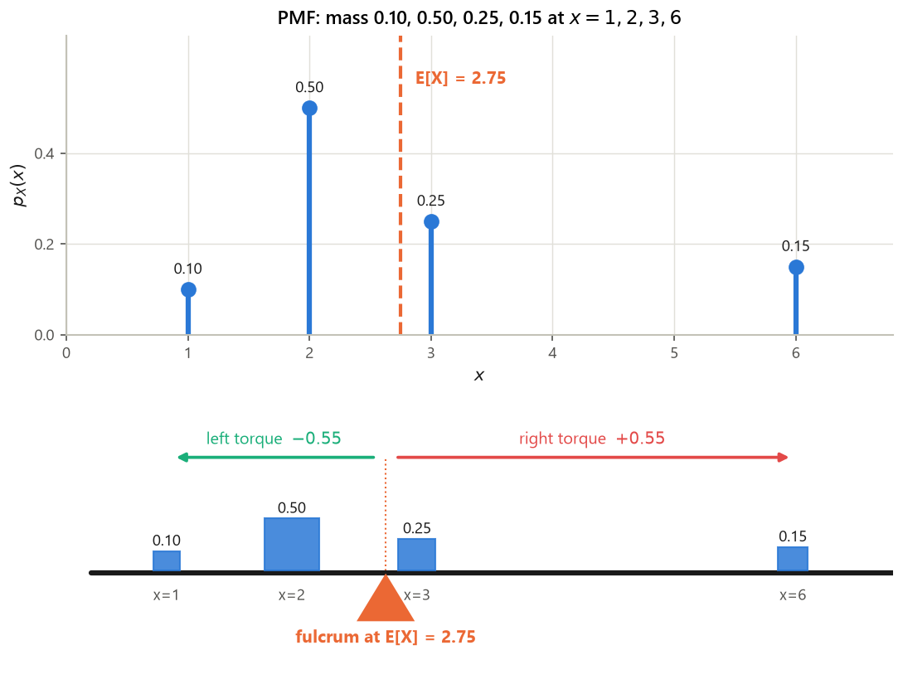
computes/g2_s2.py keys cm_*.Step 1 — pull the common factor out. Every term carries the same weight $1/(n+1)$, so by distributivity $$\mathbb{E}[X] \;=\; \sum_{k=0}^{n} k\cdot\frac{1}{n+1} \;=\; \frac{1}{n+1}\sum_{k=0}^{n} k .$$ The problem is now pure arithmetic: what is $S = 0+1+2+\cdots+n$?
Step 2 — the arithmetic series, written out (Gauss's pairing). Write $S$ forwards and backwards and add the two rows column by column: $$\begin{array}{rcccccccl} S &=& 0 &+& 1 &+& \cdots &+& n\\ S &=& n &+& (n-1) &+& \cdots &+& 0\\ \hline 2S &=& n &+& n &+& \cdots &+& n \end{array}$$ Each column sums to $n$, because the $k$-th column contributes $k + (n-k) = n$; and there are $n+1$ columns, one per value of $k$ from $0$ to $n$. Hence $$2S = (n+1)\,n \qquad\Longrightarrow\qquad S = \frac{n(n+1)}{2}.$$
Step 3 — substitute. $$\mathbb{E}[X] \;=\; \frac{1}{n+1}\cdot\frac{n(n+1)}{2} \;=\; \frac{n}{2},$$ the factor $(n+1)$ cancelling top and bottom. So $\mathbb{E}[X] = n/2$ — the midpoint of the range, which is what symmetry demands: the PMF is symmetric about $n/2$, and a symmetric mass distribution balances at its axis of symmetry.
Step 4 — numerical checks (all from computes/g2_s2.py, keys unif_*). For $n=4$: $S = 0+1+2+3+4 = 10$, and $\mathbb{E}[X] = \frac{1}{5}\cdot 10 = 2 = \frac42$. ✓ For $n=6$: $S = 21$, $\mathbb{E}[X] = \frac{21}{7} = 3 = \frac62$. ✓ For $n=10$: $S=55$, $\mathbb{E}[X]=\frac{55}{11}=5$. ✓ For $n=100$: $\mathbb{E}[X]=50$. ✓
Step 5 — a warning built into the answer. When $n$ is odd, say $n=1$, the mean is $\mathbb{E}[X] = 1/2$, which is not one of the values $X$ can take ($X \in \{0,1\}$). The mean is a balance point, not an outcome.
- The mean need not be a possible value. Example 2.1 with $n=1$ gives $\mathbb{E}[X]=0.5$ for a variable that only ever equals $0$ or $1$. "The average family has 2.3 children" is not a statement about any family.
- The mean is not the most likely value. In Fig. 2.1 the most likely value (the mode) is $x=2$ with mass $0.50$, and the median is also $2$ (since $p_X(1)+p_X(2)=0.60 \ge 0.5$), but $\mathbb{E}[X]=2.75$. Skewness — a long right tail — separates the three.
- $\mathbb{E}[X]$ is a number, not a random variable. So $\mathbb{E}\big[\mathbb{E}[X]\big] = \mathbb{E}[X]$, and expressions like "$\mathbf{P}(\mathbb{E}[X] = 3)$" are meaningless.
Solution
Direct. There are $15-5+1 = 11$ values, each of mass $1/11$, so $$\mathbb{E}[X] = \frac{1}{11}\sum_{k=5}^{15} k = \frac{1}{11}\Big(\underbrace{\tfrac{15\cdot16}{2}}_{=120} - \underbrace{\tfrac{4\cdot 5}{2}}_{=10}\Big) = \frac{110}{11} = 10,$$ using $\sum_{k=5}^{15} k = \sum_{k=0}^{15}k - \sum_{k=0}^{4}k = 120 - 10 = 110$.
By shifting. If $U$ is uniform on $\{0,\dots,10\}$ then $X = 5+U$ has exactly the values $5,\dots,15$, each with mass $1/11$ — the same PMF. Example 2.1 gives $\mathbb{E}[U] = 10/2 = 5$, and the shift rule of §2.3 gives $\mathbb{E}[X] = \mathbb{E}[U] + 5 = 5+5 = 10$. ✓ Both routes agree ($\texttt{pq\_unif\_EX} = 10$). Sanity: $10$ is the midpoint of $[5,15]$, as symmetry requires.
Solution
Net torque about $c$ is $T(c) = \sum_x (x-c)p_X(x) = \mathbb{E}[X] - c = 2.75 - c$.
At $c=2$: $T(2) = (1-2)(0.10)+(2-2)(0.50)+(3-2)(0.25)+(6-2)(0.15) = -0.10+0+0.25+0.60 = +0.75$, matching $2.75-2$. Positive net torque means the right side is heavier, so the beam tips to the right — the fulcrum is too far left.
At $c=3$: $T(3) = (1-3)(0.10)+(2-3)(0.50)+(3-3)(0.25)+(6-3)(0.15) = -0.20-0.50+0+0.45 = -0.25 = 2.75-3$. Negative, so the beam tips to the left — the fulcrum is too far right. The balance point is strictly between $2$ and $3$, namely $2.75$ (keys cm_torque_at_c2, cm_torque_at_c3).
2.2 The expected value rule for $\mathbb{E}[g(X)]$
Random variables get transformed: a marksman's hits become dollars, a bus size becomes a squared bus size. If $X$ is a random variable and $g$ is a function, then $Y = g(X)$ is another random variable — it assigns the number $g(X(\omega))$ to the outcome $\omega$. To average it, L05 slide 7 offers two routes and labels them bluntly:
Derivation (rec05 P1a; the recitation solution says only "see the textbook pp. 84–85", so here it is in full). The only input is the PMF-of-a-function formula from the PMF section: the event $\{Y = y\}$ is the union of the disjoint events $\{X = x\}$ over all $x$ that $g$ maps to $y$, so by additivity $$p_Y(y) \;=\; \sum_{\{x\,:\,g(x)=y\}} p_X(x). \tag{$\ast$}$$ Now compute, one step at a time: $$\begin{aligned} \mathbb{E}[g(X)] &= \mathbb{E}[Y] &&\text{definition of } Y\\[2pt] &= \sum_y y\,p_Y(y) &&\text{definition of expectation applied to } Y\\[2pt] &= \sum_y y \sum_{\{x\,:\,g(x)=y\}} p_X(x) &&\text{substitute } (\ast)\\[2pt] &= \sum_y \ \sum_{\{x\,:\,g(x)=y\}} y\,p_X(x) &&y \text{ is constant inside the inner sum, so it may be pushed in}\\[2pt] &= \sum_y \ \sum_{\{x\,:\,g(x)=y\}} g(x)\,p_X(x) &&\text{inside that inner sum every } x \text{ satisfies } g(x)=y\\[2pt] &= \sum_x g(x)\,p_X(x) &&\text{the inner sums partition all } x\text{'s: each } x \text{ appears exactly once, in the group } y=g(x). \end{aligned}$$ The last step is the crux and deserves a sentence of its own. The sets $\{x : g(x) = y\}$, as $y$ ranges over the values of $Y$, are disjoint (a function assigns one output per input) and their union is the whole set of values of $X$. So the double sum is a re-bracketing of a single sum. The terms $g(x)p_X(x)$ need not be nonnegative — Example 2.2 just below has $X$ uniform on $\{-2,\dots,2\}$, and §2.4 uses $Y = 2X-3$ — so the licence to regroup is not positivity but absolute summability: $\sum_x |g(x)|p_X(x) < \infty$, which is exactly the standing well-definedness hypothesis stated in §2.1. (When $X$ takes finitely many values the sum is finite and the regrouping is plain associativity.) $\blacksquare$
Easy route. Apply $g$ to each value of $X$ and weight by $p_X$: $$\mathbb{E}[X^2] = 4\cdot\tfrac15 + 1\cdot\tfrac15 + 0\cdot\tfrac15 + 1\cdot\tfrac15 + 4\cdot\tfrac15 = \frac{4+1+0+1+4}{5} = \frac{10}{5} = 2 .$$
Hard route. First build $p_Y$ using $(\ast)$. The value $y=0$ comes only from $x=0$, so $p_Y(0)=\frac15$; the value $y=1$ comes from $x=-1$ and $x=1$, so $p_Y(1)=\frac15+\frac15=\frac25$; likewise $p_Y(4)=\frac15+\frac15=\frac25$. (Check: $\frac15+\frac25+\frac25=1$. ✓) Then
$$\mathbb{E}[Y] = 0\cdot\tfrac15 + 1\cdot\tfrac25 + 4\cdot\tfrac25 = 0 + 0.4 + 1.6 = 2 . \ \checkmark$$
Same answer, twice the work — and the second route required inventing a new PMF (keys evr_easy, evr_hard, evr_pY).
And the trap. $\mathbb{E}[X] = \frac{-2-1+0+1+2}{5} = 0$ by symmetry, so $g(\mathbb{E}[X]) = 0^2 = 0$, while $\mathbb{E}[g(X)] = 2$. They are not equal, and not even close.
alice_*). The one safe case is a linear $g$, which is the subject of §2.3.Solution
By the expected value rule, with $p_X(k) = 1/4$ for $k=0,1,2,3$:
$$\mathbb{E}\!\left[\frac{1}{X+1}\right] = \frac{1}{1}\cdot\frac14 + \frac{1}{2}\cdot\frac14 + \frac{1}{3}\cdot\frac14 + \frac{1}{4}\cdot\frac14
= \frac14\Big(1 + \tfrac12 + \tfrac13 + \tfrac14\Big) = \frac14\cdot\frac{12+6+4+3}{12} = \frac{25}{48} \approx 0.520833 .$$
Meanwhile $\mathbb{E}[X] = \frac{0+1+2+3}{4} = \frac32 = 1.5$, so
$$g(\mathbb{E}[X]) = \frac{1}{1.5+1} = \frac{1}{2.5} = \frac{2}{5} = 0.4 .$$
So $\mathbb{E}[g(X)] = 0.5208 > 0.4 = g(\mathbb{E}[X])$ (keys pq_recip_E, pq_recip_g_of_EX). The gap is in this direction because $g(x)=1/(x+1)$ is convex on $x\ge 0$ — a fact that gets a name (Jensen's inequality) later; for now the point is only that the two quantities differ.
Solution
Easy: $\mathbb{E}[|X|] = |-1|(0.5) + |0|(0.2) + |1|(0.3) = 0.5 + 0 + 0.3 = 0.8$.
Hard: $p_Y(0) = p_X(0) = 0.2$ and $p_Y(1) = p_X(-1)+p_X(1) = 0.5+0.3 = 0.8$ (both $x=\pm1$ map to $y=1$; add their masses by $(\ast)$). Then $\mathbb{E}[Y] = 0(0.2) + 1(0.8) = 0.8$. ✓
Note $\mathbb{E}[X] = -0.5+0+0.3 = -0.2$, so $|\mathbb{E}[X]| = 0.2 \neq 0.8$: absolute value is nonlinear, so the rule of §2.3 does not apply to it.
2.3 Linearity: the three blanks on L05 slide 7
Slide 7 poses three fill-in-the-blank identities for constants $\alpha,\beta$ and prints no answers. Each is a one-line consequence of the expected value rule, and together they are the single most-used fact in the course.
Blank 1: $\mathbb{E}[\alpha] = \alpha$. Here $\alpha$ means the constant random variable $g(X) = \alpha$ — it takes the value $\alpha$ whatever the outcome. By the expected value rule with $g(x)\equiv\alpha$, $$\mathbb{E}[\alpha] = \sum_x \alpha\,p_X(x) = \alpha \sum_x p_X(x) = \alpha \cdot 1 = \alpha,$$ where the last step uses the normalization property $\sum_x p_X(x)=1$ from L05 slide 3. Interpretation: something that is never random averages to itself.
Blank 2: $\mathbb{E}[\alpha X] = \alpha\mathbb{E}[X]$. Take $g(x) = \alpha x$: $$\mathbb{E}[\alpha X] = \sum_x \alpha x\,p_X(x) = \alpha \sum_x x\,p_X(x) = \alpha\,\mathbb{E}[X],$$ pulling the constant $\alpha$ out of the sum (distributivity) and recognizing the definition of $\mathbb{E}[X]$. Interpretation: change the units of $X$ (dollars to cents, $\alpha = 100$) and the mean changes units the same way.
Blank 3: $\mathbb{E}[\alpha X + \beta] = \alpha\mathbb{E}[X] + \beta$. Take $g(x) = \alpha x + \beta$ and split the sum:
$$\mathbb{E}[\alpha X + \beta] = \sum_x (\alpha x + \beta)\,p_X(x)
= \underbrace{\sum_x \alpha x\,p_X(x)}_{=\ \alpha\mathbb{E}[X]\ \text{by Blank 2}} + \underbrace{\sum_x \beta\,p_X(x)}_{=\ \beta\ \text{by Blank 1}}
= \alpha\,\mathbb{E}[X] + \beta .$$
This is exactly the derivation on B&T p. 86 that rec05 P1b defers to. Note where each hypothesis is used: splitting the sum needs only additivity, but the second piece collapses to $\beta$ only because the masses total $1$. Numerical audit: for $X$ uniform on $\{-2,\dots,2\}$ ($\mathbb{E}[X]=0$) with $\alpha=3$, $\beta=-7$, direct summation gives $\mathbb{E}[3X-7] = -7$ and the formula gives $3(0)-7 = -7$ ✓ (keys lin_direct, lin_formula).
Solution
(a) Done above, in §2.2 — the grouping argument from $p_Y(y) = \sum_{\{x:g(x)=y\}} p_X(x)$ to $\mathbb{E}[g(X)] = \sum_x g(x)p_X(x)$.
(b) Mean. Done just above (Blank 3), with $\alpha = a$, $\beta = b$: $$\mathbb{E}[aX+b] = \sum_x (ax+b)p_X(x) = a\sum_x x\,p_X(x) + b\sum_x p_X(x) = a\,\mathbb{E}[X] + b .$$
(b) Variance. Recall $\operatorname{var}(Z) = \mathbb{E}\big[(Z - \mathbb{E}[Z])^2\big]$ (L05 slide 8; §3 of this note develops variance properly). Put $Y = aX+b$ and use the expected value rule with $g(x) = (ax+b-\mathbb{E}[Y])^2$: $$\operatorname{var}(Y) = \sum_x \big(ax + b - \mathbb{E}[aX+b]\big)^2 p_X(x).$$ Substitute $\mathbb{E}[aX+b] = a\mathbb{E}[X]+b$ from the first half, and watch the $b$'s cancel: $$ax + b - \big(a\mathbb{E}[X] + b\big) = ax - a\mathbb{E}[X] = a\big(x - \mathbb{E}[X]\big).$$ Therefore $$\operatorname{var}(Y) = \sum_x a^2\big(x - \mathbb{E}[X]\big)^2 p_X(x) = a^2 \sum_x \big(x-\mathbb{E}[X]\big)^2 p_X(x) = a^2 \operatorname{var}(X),$$ squaring the factor $a$ out of the bracket and then pulling the constant $a^2$ out of the sum. Two readings: an additive shift $b$ does not change spread (it moves the whole picture), and a scaling by $a$ multiplies spread by $a^2$ — hence by $|a|$ in standard-deviation units.
(c) The variance identity. Start from the definition and expand the square. Write $\mu = \mathbb{E}[X]$ for brevity — a fixed number, not a random quantity: $$\begin{aligned} \operatorname{var}(X) &= \sum_x (x-\mu)^2 p_X(x) &&\text{expected value rule with } g(x)=(x-\mu)^2\\ &= \sum_x \big(x^2 - 2\mu x + \mu^2\big) p_X(x) &&\text{algebraic expansion of the square}\\ &= \sum_x x^2 p_X(x) \;-\; 2\mu\sum_x x\,p_X(x) \;+\; \mu^2\sum_x p_X(x) &&\text{split into three sums; } \mu \text{ is constant}\\ &= \mathbb{E}[X^2] \;-\; 2\mu\cdot\mu \;+\; \mu^2 \cdot 1 &&\text{definitions of } \mathbb{E}[X^2],\ \mathbb{E}[X],\ \text{and normalization}\\ &= \mathbb{E}[X^2] - 2\mu^2 + \mu^2 \;=\; \mathbb{E}[X^2] - \mu^2 \;=\; \mathbb{E}[X^2] - \big(\mathbb{E}[X]\big)^2 . \end{aligned}$$ Rearranged, this is the form used constantly for second moments: $$\boxed{\ \mathbb{E}[X^2] = \operatorname{var}(X) + \big(\mathbb{E}[X]\big)^2\ }$$ which is how rec05 P2(f) gets $\mathbb{E}[X^2]$ from two numbers already computed. Note also that since $\operatorname{var}(X)\ge 0$ (it is a sum of nonnegative terms), the identity forces $\mathbb{E}[X^2] \ge (\mathbb{E}[X])^2$ — the second moment is always at least the square of the mean, with equality only if $X$ is constant.
- Is $g$ linear, i.e. $g(x) = \alpha x + \beta$? Then stop thinking and write $\mathbb{E}[g(X)] = \alpha\mathbb{E}[X]+\beta$. No sum needed. (Special cases: $g(x)=x+\beta$ shifts the mean; $g(x)=\alpha x$ rescales it.)
- Otherwise, do you have $p_X$? Then use the expected value rule directly: tabulate $x$, $g(x)$, $p_X(x)$, multiply across, add the column. Never build $p_Y$.
- Is $g(x)=x^2$? Either sum $\sum_x x^2 p_X(x)$, or — if you already know the mean and variance — use $\mathbb{E}[X^2] = \operatorname{var}(X) + (\mathbb{E}[X])^2$.
- Only if you actually need the distribution of $Y$ (not just its mean) should you compute $p_Y(y) = \sum_{\{x:g(x)=y\}}p_X(x)$.
- Never write $\mathbb{E}[g(X)] = g(\mathbb{E}[X])$ for nonlinear $g$. Check step 1 before you are tempted.
![Flowchart. Top box: want the expected value of Y equals g of X. First diamond asks whether g is linear; yes leads to a green box with E[Y] = alpha E[X] + beta. No leads to a second diamond asking whether the PMF of X is available and the sum is doable; yes leads to a green box with the expected value rule, which leads down to a purple box on the second moment; no leads to a red box describing the hard route via the PMF of Y. Both branches end at a red warning box saying never write E[g(X)] = g(E[X]) unless g is linear.](img/g2_s2_flowchart.png)
Solution
$g$ is linear with $\alpha = 9/5 = 1.8$, $\beta = 32$, so
$$\mathbb{E}[F] = \tfrac95(20) + 32 = 36 + 32 = 68\ ^\circ\text{F}, \qquad
\operatorname{var}(F) = \big(\tfrac95\big)^2 (9) = \tfrac{81}{25}\cdot 9 = \tfrac{729}{25} = 29.16 .$$
The $+32$ shifts the mean but leaves the variance alone. Then by the identity of Example 2.3(c),
$$\mathbb{E}[F^2] = \operatorname{var}(F) + (\mathbb{E}[F])^2 = 29.16 + 68^2 = 29.16 + 4624 = 4653.16 .$$
(Key pq_temp_EF $=68$.) Notice you could not have obtained $\mathbb{E}[F^2]$ as $(9/5)^2\mathbb{E}[C^2]$ — squaring is nonlinear, and the cross term matters.
Solution
(i) True — Blank 2 of L05 slide 7, $g(x)=3x$ is linear. (ii) False — cubing is nonlinear; e.g. $X = \pm 1$ with probability $1/2$ each gives $\mathbb{E}[X^3] = 0 = (\mathbb{E}[X])^3$ by accident, but $X$ uniform on $\{0,2\}$ gives $\mathbb{E}[X^3] = 4$ while $(\mathbb{E}[X])^3 = 1$. (iii) False — $\operatorname{var}(aX+b) = a^2\operatorname{var}(X)$ with $a=1,b=7$ gives $\operatorname{var}(X)$; adding a constant shifts, never spreads. (iv) True — rearranging Example 2.3(c), $\mathbb{E}[X^2]-(\mathbb{E}[X])^2 = \operatorname{var}(X) \ge 0$, with equality exactly when $X$ is constant.
2.4 Worked recitation problem: the marksman (rec05 P2)
(a) Calculate and sketch the PMF of $X$.
(b) What is the probability of scoring no hits?
(c) What is the probability of scoring more hits than misses?
(d) Find the expectation and the variance of $X$.
(e) Suppose the marksman has to pay $\$3$ to enter the shooting range and he gets $\$2$ for each hit. Let $Y$ be his profit. Find the expectation and the variance of $Y$.
(f) Now assume the marksman enters for free and gets the number of dollars equal to the square of the number of hits. Let $Z$ be his profit. Find the expectation of $Z$.
Solution
(a) The model and the PMF. Each shot is an independent trial with two outcomes, hit (probability $p=0.2$) or miss (probability $1-p=0.8$), and $X$ counts the hits in $n=10$ trials. That is exactly the binomial setup of L05 slide 5, so
$$p_X(k) = \binom{10}{k}(0.2)^k (0.8)^{10-k}, \qquad k = 0,1,\dots,10,$$
and $p_X(k)=0$ otherwise. Reading the formula: $(0.2)^k(0.8)^{10-k}$ is the probability of one specific sequence with $k$ hits and $10-k$ misses (multiply per-shot probabilities, by independence), and $\binom{10}{k}$ counts how many such sequences there are (choose which $k$ of the $10$ shots are hits). The numerical table (key mk_pmf_*; total $=1$ exactly):
| $k$ | 0 | 1 | 2 | 3 | 4 | 5 | 6 | 7 | 8 | 9 | 10 |
|---|---|---|---|---|---|---|---|---|---|---|---|
| $\binom{10}{k}$ | 1 | 10 | 45 | 120 | 210 | 252 | 210 | 120 | 45 | 10 | 1 |
| $p_X(k)$ | 0.10737 | 0.26844 | 0.30199 | 0.20133 | 0.08808 | 0.02642 | 0.005505 | 0.000786 | 7.37e-5 | 4.10e-6 | 1.02e-7 |
The peak is at $k=2$, which here coincides with the mean $\mathbb{E}[X]=np=2$ computed in (d) — see Fig. 2.3, which reproduces the scatter sketch of the official solution with the numbers filled in.
(b) No hits. Set $k=0$: $\binom{10}{0}=1$ and $(0.2)^0 = 1$, so $$\mathbf{P}(\text{no hits}) = p_X(0) = (0.8)^{10} = 0.1073741824 \approx \boxed{0.1074},$$ matching the official answer. (Directly: all ten shots must miss, and by independence the ten probabilities $0.8$ multiply.) It is worth noticing how large this is — a marksman who expects $2$ hits still comes away empty-handed about $11\%$ of the time.
(c) More hits than misses. With $10$ shots, hits $=k$ and misses $=10-k$, so "more hits than misses" means
$$k > 10 - k \iff 2k > 10 \iff k > 5 \iff k \ge 6 \quad (k \text{ is an integer}).$$
(At $k=5$ there are five of each — a tie, not "more", so $k=5$ is excluded.) The events $\{X=k\}$ are disjoint, so by additivity we add the five masses. The official solution prints only the total $0.0064$; here is the sum term by term (key mk_tail_terms):
$$\begin{aligned}
\mathbf{P}(X \ge 6) &= \textstyle\sum_{k=6}^{10}\binom{10}{k}(0.2)^k(0.8)^{10-k}\\
&= \underbrace{210(0.2)^6(0.8)^4}_{0.00550502} + \underbrace{120(0.2)^7(0.8)^3}_{0.00078643} + \underbrace{45(0.2)^8(0.8)^2}_{0.00007373} + \underbrace{10(0.2)^9(0.8)^1}_{0.00000410} + \underbrace{1(0.2)^{10}}_{0.00000010}\\
&= 0.0063693824 \;\approx\; \boxed{0.0064}. \ \checkmark
\end{aligned}$$
The first term alone is $86\%$ of the total: the tail collapses geometrically, each further hit costing a factor of roughly $\frac{0.2}{0.8}=\frac14$ times a shrinking binomial coefficient.
(d) Mean and variance. The official solution quotes the binomial formulas $\mathbb{E}[X]=np$ and $\operatorname{var}(X)=np(1-p)$ without derivation. Those formulas are proved cleanly once expectations of sums are available (write $X = X_1+\cdots+X_{10}$ with $X_i$ the indicator of a hit on shot $i$; that is §4.6 and §4.8 machinery). With only §2 tools we can still get the numbers honestly, straight from the definition (keys mk_EX_terms, mk_EX2_terms):
$$\mathbb{E}[X] = \sum_{k=0}^{10} k\,p_X(k) = 0 + 0.268435 + 0.603980 + 0.603980 + 0.352322 + 0.132121 + 0.033030 + 0.005505 + 0.000590 + 0.000037 + 0.000001 = 2 .$$
The sum is exactly $2$, confirming $np = 10(0.2) = \boxed{2}$. For the variance, first the second moment by the expected value rule with $g(x)=x^2$:
$$\mathbb{E}[X^2] = \sum_{k=0}^{10} k^2 p_X(k) = 0 + 0.268435 + 1.207960 + 1.811939 + 1.409286 + 0.660603 + 0.198181 + 0.038535 + 0.004719 + 0.000332 + 0.000010 = 5.6 ,$$
then the identity of Example 2.3(c):
$$\operatorname{var}(X) = \mathbb{E}[X^2] - (\mathbb{E}[X])^2 = 5.6 - 2^2 = 5.6 - 4 = \boxed{1.6},$$
confirming $np(1-p) = 10(0.2)(0.8) = 1.6$. The standard deviation is $\sigma_X = \sqrt{1.6} = 1.2649$ hits.
(e) Profit $Y = 2X - 3$. Each hit pays $\$2$ and the entry fee of $\$3$ is paid regardless, so the profit is a linear function of $X$ — exactly the case L05 slide 7 covers. With $\alpha = 2$, $\beta = -3$:
$$\mathbb{E}[Y] = 2\,\mathbb{E}[X] - 3 = 2(2) - 3 = 4 - 3 = \boxed{1}\ \text{dollar},$$
$$\operatorname{var}(Y) = 2^2 \operatorname{var}(X) = 4(1.6) = \boxed{6.4}, \qquad \sigma_Y = \sqrt{6.4} = 2.5298\ \text{dollars}.$$
Cross-check by brute force, summing $(2k-3)p_X(k)$ over all $k$: the answer is again exactly $1$ (key mk_EY_direct). Note the fee shifts the mean profit but leaves the variance untouched, while the $\$2$-per-hit rate multiplies the standard deviation by $2$. Interpretation: on average the marksman makes a dollar, but with $\sigma_Y \approx \$2.53$ he loses money whenever $X \le 1$, which happens with probability $p_X(0)+p_X(1) = 0.1074 + 0.2684 = 0.3758$ — better than a one-in-three chance of walking away poorer.
(f) Squared profit $Z = X^2$. Now $g$ is not linear, so $\mathbb{E}[Z] \ne (\mathbb{E}[X])^2 = 4$. Use the expected value rule; and rather than resumming, reuse the rearranged variance identity — the step the official solution performs silently: $$\mathbb{E}[Z] = \mathbb{E}[X^2] = \operatorname{var}(X) + \big(\mathbb{E}[X]\big)^2 = 1.6 + 2^2 = 1.6 + 4 = \boxed{5.6}\ \text{dollars},$$ in agreement with the direct sum $\sum_k k^2 p_X(k) = 5.6$ computed in (d). The gap between $5.6$ and the naive $4$ is precisely $\operatorname{var}(X) = 1.6$: paying for the square of the hit count rewards the marksman for his variability.
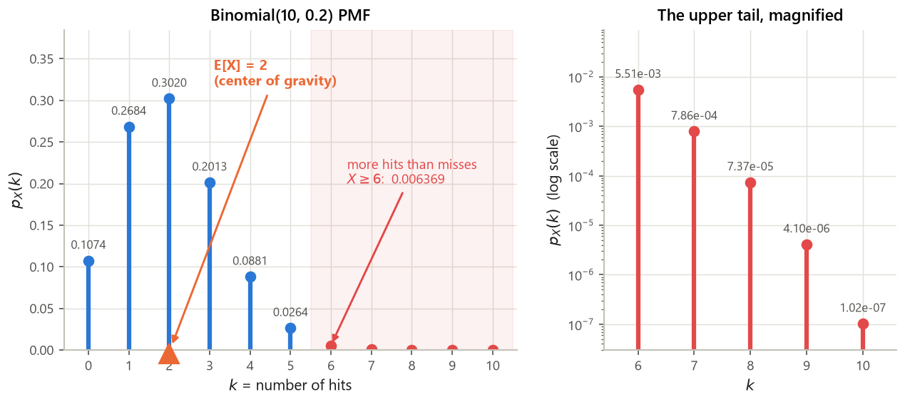
Solution
With $n=20$, $p=0.2$: $\mathbb{E}[X] = np = 20(0.2) = 4$ and $\operatorname{var}(X) = np(1-p) = 20(0.2)(0.8) = 3.2$ (both confirmed by direct summation over the $21$ masses, keys pq_mk20_EX, pq_mk20_var). Then
$$\mathbb{E}[X^2] = \operatorname{var}(X) + (\mathbb{E}[X])^2 = 3.2 + 16 = 19.2 .$$
$$\mathbf{P}(\text{no hits}) = (0.8)^{20} = 0.01152922 .$$
Compared with $(0.8)^{10} = 0.10737$ this is smaller by the factor $(0.8)^{10} = 0.1074$ — i.e. about $9.3$ times less likely, since $\mathbf{P}(\text{no hits in }20) = \big(\mathbf{P}(\text{no hits in }10)\big)^2$ by independence.
Solution
Profit is $Y = 2X - f$, a linear function, so $\mathbb{E}[Y] = 2\mathbb{E}[X] - f = 2(2) - f = 4 - f$. Fairness means $\mathbb{E}[Y]=0$, i.e. $f = \$4$ — the expected number of hits times the price per hit.
He loses money when $2X - 4 < 0$, i.e. $X < 2$, i.e. $X \in \{0,1\}$: $$\mathbf{P}(X \le 1) = p_X(0)+p_X(1) = 0.107374 + 0.268436 = 0.375810 .$$ He breaks exactly even when $X=2$ (probability $0.301990$) and profits only when $X\ge 3$ (probability $1 - 0.375810 - 0.301990 = 0.322200$). So a "fair" game is one he loses more often than he wins — the mean is balanced by the big payouts in the thin right tail, exactly the torque picture of Fig. 2.1.
2.5 The bus paradox: size-biased versus uniform sampling (rec05 P3)
(a) Which of $\mathbb{E}[X]$ or $\mathbb{E}[Y]$ do you think is larger? Give your reasoning in words.
(b) Compute $\mathbb{E}[X]$ and $\mathbb{E}[Y]$.
Solution
(a) The verbal answer. $\mathbb{E}[X]$ is larger. The two experiments sample the same four buses but through different doors. Picking a driver gives each bus one ticket in the lottery. Picking a student gives each bus as many tickets as it has students — so the $50$-student bus is twice as likely to be selected as the $25$-student bus. Large buses are over-represented when you sample through the passengers, and since "large bus" is exactly the quantity being averaged, the average comes out high. The official solution puts it in one line: "we expect $\mathbb{E}[X]$ to be higher than $\mathbb{E}[Y]$ since if we choose the student, we are more likely to pick a bus with more students."
(b) Step 1 — the PMF of $Y$ (driver sampled). There are $4$ drivers, one per bus, chosen uniformly, so each bus is picked with probability $1/4$: $$p_Y(y) = \begin{cases} 1/4, & y = 40,\,33,\,25,\,50,\\ 0, & \text{otherwise.}\end{cases}$$ Then $$\mathbb{E}[Y] = 40\cdot\tfrac14 + 33\cdot\tfrac14 + 25\cdot\tfrac14 + 50\cdot\tfrac14 = \frac{40+33+25+50}{4} = \frac{148}{4} = \boxed{37}.$$ This is the plain average of the four bus sizes — total students divided by number of buses.
Step 2 — the PMF of $X$ (student sampled). The official solution states this PMF without justifying it; here is the justification. The experiment is: pick one of the $148$ students uniformly at random, so each student has probability $1/148$. The event $\{X = x\}$ — "the chosen student's bus carried $x$ students" — consists of exactly those students who rode a bus of size $x$; there are $x$ of them (all four sizes here are distinct, so exactly one bus has size $x$). By the discrete uniform law, probability = (number of favorable outcomes)/(total outcomes): $$p_X(x) = \frac{\#\{\text{students on the bus of size } x\}}{148} = \frac{x}{148}, \qquad x \in \{40,33,25,50\}.$$ Explicitly, $$p_X(40) = \tfrac{40}{148} = 0.2703,\quad p_X(33) = \tfrac{33}{148}=0.2230,\quad p_X(25)=\tfrac{25}{148}=0.1689,\quad p_X(50)=\tfrac{50}{148}=0.3378,$$ and these sum to $\frac{40+33+25+50}{148} = \frac{148}{148} = 1$ ✓ (normalization is automatic because every student is on exactly one bus). A PMF proportional to the value itself is called size-biased.
Step 3 — $\mathbb{E}[X]$, with the arithmetic the solution omits.
$$\begin{aligned}
\mathbb{E}[X] &= 40\cdot\frac{40}{148} + 33\cdot\frac{33}{148} + 25\cdot\frac{25}{148} + 50\cdot\frac{50}{148}\\
&= \frac{40^2 + 33^2 + 25^2 + 50^2}{148}
= \frac{1600 + 1089 + 625 + 2500}{148}
= \frac{5814}{148} = \frac{2907}{74} = 39.283784 \approx \boxed{39.28}.
\end{aligned}$$
(Key bus_EX; the recitation prints $39.28$.) So indeed
$$\mathbb{E}[X] = 39.28 \;>\; 37 = \mathbb{E}[Y], \qquad \text{gap } = \frac{169}{74} = 2.283784 .$$
Note the structural fact hiding in the algebra: $\mathbb{E}[X] = \frac{\sum_i n_i^2}{\sum_i n_i}$ — a ratio of the second moment to the first — while $\mathbb{E}[Y] = \frac{\sum_i n_i}{4}$ is the plain mean, where $n_i$ denotes the size of bus $i$.
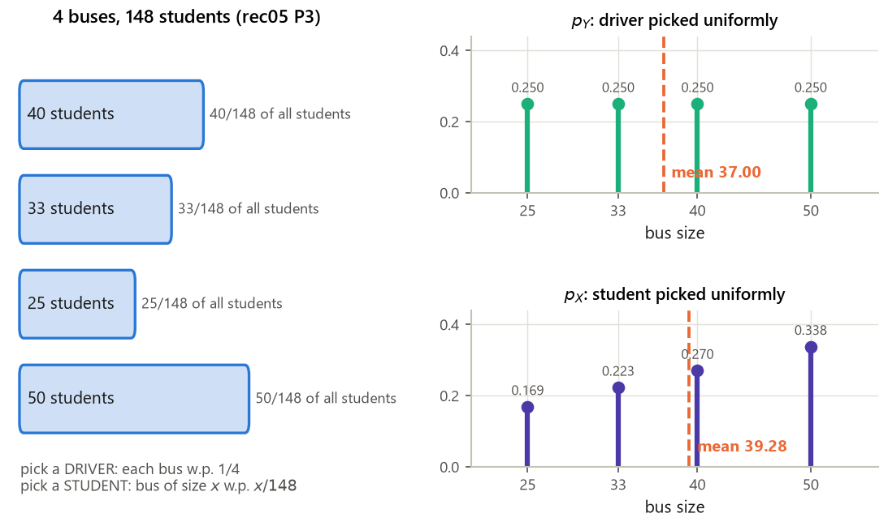
computes/g2_s2.py keys bus_*.bus_equal_EX). The excess is exactly the variance-to-mean ratio: the more unequal the bus loads, the worse the bias.- Class sizes. A university advertises an average class size of $37$ (that is $\mathbb{E}[Y]$, averaging over classes). Survey students and the average class they sit in is $39.28$ — nobody lied.
- Waiting for a bus. Arrive at random and you are more likely to land inside a long gap between buses than a short one, so your average wait exceeds half the average headway.
- "Your friends have more friends than you do." Sampling a person through a friendship link is sampling proportional to degree.
bus_alt_EX).Solution
Total students $= 10+20+60 = 90$; three buses.
$$\mathbb{E}[Y] = \frac{10+20+60}{3} = \frac{90}{3} = 30 .$$
$$\mathbb{E}[X] = \frac{10^2+20^2+60^2}{90} = \frac{100+400+3600}{90} = \frac{4100}{90} = \frac{410}{9} = 45.5556 .$$
Check the identity: $\mathbb{E}[Y^2] = \frac{4100}{3} = 1366.667$, so $\operatorname{var}(Y) = 1366.667 - 30^2 = 466.667$, and
$$\mathbb{E}[Y] + \frac{\operatorname{var}(Y)}{\mathbb{E}[Y]} = 30 + \frac{466.667}{30} = 30 + 15.5556 = 45.5556 . \ \checkmark$$
(Keys pq_bus_EY, pq_bus_EX.) The bias is far worse here ($+51.9\%$) than in rec05 P3 ($+6.2\%$) because the loads are far more unequal.
Solution
Rearranging the identity, $\operatorname{var}(Y) = \mathbb{E}[Y]\big(\mathbb{E}[X]-\mathbb{E}[Y]\big) = 37 \times 2.2838 = 84.5$ (the gap must be carried unrounded: $\mathbb{E}[X]-\mathbb{E}[Y] = \frac{169}{74} = 2.283784$, and $37\times\frac{169}{74} = \frac{169}{2} = 84.5$; the rounded $37\times 2.28 = 84.36$ is off by $0.14$), so the standard deviation of the bus sizes is $\sqrt{84.5} = 9.19$ students. The two means determine the variance of the sizes — the excess of the size-biased mean over the plain mean is a direct readout of dispersion. (Cross-check with the actual sizes $\{40,33,25,50\}$: their variance is $84.5$, key bus_varY. ✓)
2.6 The St. Petersburg paradox: infinite expectation (rec05 P4)
Solution
Step 1 — the PMF of the toss count. (The official solution writes the sum down directly; this is the missing derivation.) Let $N$ be the toss on which the first tail appears. The event $\{N = k\}$ is one specific sequence: heads on tosses $1,\dots,k-1$, then a tail on toss $k$. The tosses are independent and fair, so multiply the per-toss probabilities: $$\mathbf{P}(N = k) = \underbrace{\tfrac12 \cdot \tfrac12 \cdots \tfrac12}_{k-1 \text{ heads}} \cdot \underbrace{\tfrac12}_{\text{one tail}} = \Big(\frac12\Big)^{k-1}\cdot\frac12 = \Big(\frac12\Big)^{k} = 2^{-k}, \qquad k = 1,2,\dots$$ This is the geometric PMF of L05 slide 3 with $p = 1/2$ (with "success" $=$ tail). Sanity check on normalization, using the geometric series $\sum_{k\ge1} r^k = \frac{r}{1-r}$ with $r=\frac12$: $$\sum_{k=1}^{\infty} 2^{-k} = \frac{1/2}{1 - 1/2} = 1 . \ \checkmark$$ The payout is the random variable $W = 2^{N}$, so $W$ takes the value $2^k$ with probability $2^{-k}$: $\$2$ with probability $\tfrac12$, $\$4$ with probability $\tfrac14$, $\$8$ with probability $\tfrac18$, and so on.
Step 2 — the expectation. By the expected value rule with $g(n) = 2^n$ (§2.2), or equivalently by the definition applied to $W$:
$$\mathbb{E}[W] = \sum_{k=1}^{\infty} 2^k\,\mathbf{P}(N=k) = \sum_{k=1}^{\infty} 2^k \cdot 2^{-k} = \sum_{k=1}^{\infty} 1 = 1 + 1 + 1 + \cdots = \boxed{\infty}.$$
Every single term equals exactly $\$1$: doubling the prize precisely offsets halving the probability, so no term ever decays and the series diverges. The partial sums are $\sum_{k=1}^{m} 1 = m$ — after accounting for the first $m$ possible stopping tosses you have accumulated exactly $\$m$ of expected payout, and this grows without bound (keys sp_partial_m*).
Step 3 — how much would you pay? The official solution's answer: "if you are faced with the choice of playing for a given fee $f$ or not playing at all, and your objective is to maximize your expected net gain, you would be willing to pay any value of $f$" — because $\mathbb{E}[W - f] = \infty - f = \infty$ for every finite $f$. "However, this is in strong disagreement with the behavior of individuals. In fact experiments have shown that most people are willing to pay only about $\$20$ to $\$30$ to play the game. The discrepancy is due to a presumption that the amount one is willing to pay is determined by the expected gain. However, expected gain does not take into account a person's attitude towards risk taking."
Step 4 — what the infinity actually means (an honest reading). Three separate observations, all computable:
- Typical payouts are tiny. $\mathbf{P}(W = 2) = \tfrac12$, $\mathbf{P}(W \le 4) = \tfrac34 = 0.75$, $\mathbf{P}(W\le 8) = \tfrac78 = 0.875$, $\mathbf{P}(W \le 16) = \tfrac{15}{16} = 0.9375$. The median payout is $\$2$. Paying the "reasonable" $\$20$ fee, you lose money on $93.75\%$ of plays (keys
sp_P_payout_le_2pow*). - The infinity lives entirely in a vanishing tail. $\mathbf{P}(W \ge 1024) = \mathbf{P}(N \ge 10) = 2^{-9} = 0.00195$. Those rare plays carry all the expectation — the torque picture of Fig. 2.1 taken to its limit, with mass going to zero exactly as fast as distance goes to infinity.
- Sample averages do not settle down. The recitation's Extra Handout shows histograms of simulated play: "$20$ simulations, observed average $=\$19.20$" and "$200$ simulations, observed average $=\$11.16$" — the larger experiment produced the smaller average, which cannot happen systematically for a variable with a finite mean. Our own simulation (seed $6041$, key
sp_sim_*) gives averages $\$7.00$ ($20$ plays), $\$11.98$ ($200$), $\$274.95$ ($2000$), $\$32.60$ ($20{,}000$), $\$16.25$ ($200{,}000$): no convergence, just occasional enormous jumps whenever a long head-run occurs. The law of large numbers does not apply, because it requires a finite mean. - The bank is not infinite. No counterparty can pay $2^{100}$ dollars. Cap the payout and the expectation becomes small and finite — see the derivation below and the widget.
Step 5 — the truncated game (the fix, derived). Suppose the house can afford at most $m$ doublings, i.e. it pays $\min(2^N, 2^m)$: you get $2^N$ if the first tail comes on toss $N \le m$, and the cap $2^m$ if the coin produces $m$ heads in a row. Split the expectation over the two cases:
$$\mathbb{E}\big[2^{\min(N,m)}\big] = \underbrace{\sum_{k=1}^{m} 2^k\,2^{-k}}_{\text{game ends by toss } m} + \underbrace{2^m\,\mathbf{P}(N > m)}_{\text{cap paid}} .$$
The first sum has $m$ terms each equal to $1$, so it equals $m$. For the second, $\{N > m\}$ means the first $m$ tosses were all heads, which has probability $(1/2)^m = 2^{-m}$, so the term is $2^m \cdot 2^{-m} = 1$. Therefore
$$\boxed{\ \mathbb{E}\big[\text{capped payout}\big] = m + 1\ }$$
— exactly one dollar per additional doubling the house can cover. (If instead the house simply forfeits and pays $\$0$ when the run exceeds $m$, the same split gives $m + 0 = m$.) Numbers: a house able to pay $2^{10} = \$1{,}024$ has a game worth $\$11$; $2^{20} = \$1{,}048{,}576$ makes it worth $\$21$; $2^{30} \approx \$1.07$ billion makes it worth $\$31$ (keys sp_cap_m10, sp_cap_m20, sp_cap_m30). The experimentally observed willingness to pay of $\$20$–$\$30$ corresponds to believing your counterparty is good for somewhere between a million and a billion dollars — which is a perfectly rational belief.
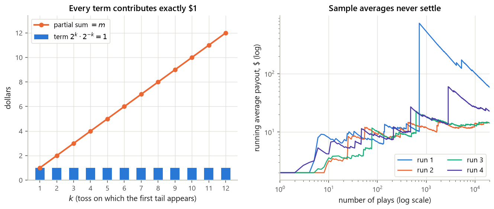
- Never quote a mean without a spread (or a quantile). "Expected payout $=\infty$" and "median payout $=\$2$" describe the same game.
- Check that the mean exists before using it. B&T §2.4 (footnote p. 82) requires $\sum_x |x|p_X(x) < \infty$, and offers this exact variable — value $2^k$ with probability $2^{-k}$ — as its counterexample. Averages of samples from such a variable do not converge (Fig. 2.5, right).
- Maximizing expected money is not the same as rational choice. The recitation's own conclusion: "expected gain does not take into account a person's attitude towards risk taking." Replace dollars by utility (e.g. $\log$ of wealth) and the expectation becomes finite; or, more prosaically, cap the bankroll and the game is worth $m+1$ dollars.
Solution
Now $\mathbf{P}(N=k) = (1/4)^{k-1}(3/4)$ — $k-1$ heads, each of probability $1/4$, then a tail of probability $3/4$. The payout is still $2^k$, so
$$\mathbb{E}[W] = \sum_{k=1}^{\infty} 2^k \Big(\frac14\Big)^{k-1}\frac34
= \frac34\sum_{k=1}^{\infty} 2^k \Big(\frac14\Big)^{k-1}
= \frac34 \cdot 2 \sum_{j=0}^{\infty} \Big(\frac{2}{4}\Big)^{j}
= \frac32 \cdot \frac{1}{1 - \frac12} = \frac32 \cdot 2 = 3 ,$$
substituting $j = k-1$ so that $2^k(1/4)^{k-1} = 2\cdot(2/4)^{j} = 2(1/2)^j$, and summing the geometric series with ratio $1/2 < 1$. So the expectation is finite: $\$3$ (verified numerically, key pq_sp_variant_E $=3.000000$). The divergence in the original game was a knife's edge: it needs the payout to double exactly as fast as the probability halves. Any faster decay of the probability (ratio $2(1-q) < 1$, i.e. $q > 1/2$) makes the series converge.
Solution
With $m = 20$ the capped expectation is $\mathbb{E}[\text{payout}] = m+1 = \$21$ (Step 5). The expected net gain is $21 - 25 = -\$4$ per play, so the game is unfavorable — despite the uncapped version having infinite expectation. The cap is reached when the first $20$ tosses are all heads, with probability $2^{-20} = 9.537\times 10^{-7}$, about one play in a million (keys sp_cap_m20, sp_P_hit_cap_m20). Note how little it takes to flip the verdict: at a $\$20$ fee the game would be favorable by $\$1$ per play, and the player would still lose on $93.75\%$ of plays.
- Definition (L05 slide 6): $\mathbb{E}[X] = \sum_x x\,p_X(x)$ — a weighted average, and the balance point of the PMF: $\sum_x (x - \mathbb{E}[X])p_X(x) = 0$. Well-defined only when $\sum_x|x|p_X(x) < \infty$ (B&T §2.4 footnote p. 82).
- Uniform on $\{0,\dots,n\}$: $\mathbb{E}[X] = \frac{1}{n+1}\cdot\frac{n(n+1)}{2} = n/2$ (slide 6 blank, filled).
- Expected value rule (slide 7, rec05 P1a): $\mathbb{E}[g(X)] = \sum_x g(x)p_X(x)$ — never build $p_Y$ just to get a mean.
- Linearity (slide 7 blanks): $\mathbb{E}[\alpha]=\alpha$; $\mathbb{E}[\alpha X] = \alpha\mathbb{E}[X]$; $\mathbb{E}[\alpha X+\beta] = \alpha\mathbb{E}[X]+\beta$. And $\operatorname{var}(\alpha X+\beta) = \alpha^2\operatorname{var}(X)$.
- Caution: $\mathbb{E}[g(X)] \ne g(\mathbb{E}[X])$ unless $g$ is linear (Alice's speed vs. time: $16$ min correct, $8$ min wrong).
- Second moment: $\mathbb{E}[X^2] = \sum_x x^2p_X(x) = \operatorname{var}(X) + (\mathbb{E}[X])^2 \ \ge (\mathbb{E}[X])^2$.
- Marksman (rec05 P2), $X\sim\text{Bin}(10,0.2)$: $p_X(0) = 0.8^{10} = 0.1074$; $\mathbf{P}(X\ge6) = 0.006369$; $\mathbb{E}[X]=2$, $\operatorname{var}(X)=1.6$; $Y=2X-3 \Rightarrow \mathbb{E}[Y]=1$, $\operatorname{var}(Y)=6.4$; $Z=X^2 \Rightarrow \mathbb{E}[Z]=5.6$.
- Size bias (rec05 P3): sample a student and $p_X(x) = x/148$, giving $\mathbb{E}[X] = 5814/148 = 39.28$; sample a driver and $p_Y \equiv 1/4$, giving $\mathbb{E}[Y]=37$. Always $\mathbb{E}[X] = \mathbb{E}[Y] + \operatorname{var}(Y)/\mathbb{E}[Y] \ge \mathbb{E}[Y]$.
- St. Petersburg (rec05 P4): $\mathbf{P}(N=k)=2^{-k}$, payout $2^k$, every term contributes $\$1$, so $\mathbb{E}[W]=\infty$ — while the median payout is $\$2$. Cap the house at $2^m$ and the game is worth exactly $m+1$ dollars.
§3 Variance, conditioning, and the geometric distribution
Sources: L06 slides 1–7 (raster p01–p02) · rec06 P3 (= B&T Example 2.17, pp. 105–106) · rec07 P3 (= B&T Problem 2.33, pp. 128–129) · B&T §2.2 (geometric PMF), B&T §2.4 (mean and variance), B&T §2.6 (conditioning, total expectation, B&T Example 2.17)
Section 2 built the PMF and the expectation. Expectation is one number, and one number cannot describe a random variable: the constant $5$ and a coin-flip that pays $0$ or $10$ have the same mean and nothing else in common. This section adds the second number — the variance — and then adds the single most productive technique in the whole course: conditioning a random variable on an event, followed by averaging the conditional answers back together (the total expectation theorem). Those two ideas turn otherwise brutal infinite sums into one-line algebra, which is exactly how the geometric distribution's mean $1/p$ and variance $(1-p)/p^2$ fall out, and how "how long until two heads in a row?" becomes a $2\times2$ linear system.
The section is organized as: the centered variable and why it is useless by itself (§3.1); variance and its two computational rules (§3.2); the trap $\mathbb{E}[g(X)] \neq g(\mathbb{E}[X])$, worked on the lecture's random-speed example (§3.3); conditional PMFs and conditional expectations (§3.4); the geometric PMF and its memorylessness (§3.5, with an interactive check); the total expectation theorem (§3.6); the mean and variance of the geometric (§3.7); and state recursions for waiting-time problems (§3.8).
![Flowchart. Top box: you need E[X] or var(X). First decision: is the full PMF already in hand? Yes leads to summing directly. No leads to a second decision: does the experiment restart after a first step? Yes leads to conditioning on step 1 and using total expectation, then solving the resulting equation. No leads to a third decision: is X a function g(Y) of a simpler Y? Yes leads to the expected value rule, never g of E[Y]. No leads to splitting X into pieces and using linearity. A footer box lists the geometric shortcuts.](img/g2_s3_flow.png)
3.1 The centered variable, and why $\mathbb{E}\big[X - \mathbb{E}[X]\big] = 0$
L06 slide 2 reviews the machinery of Section 2 and then poses one question with the answer left blank. Here $X$ is a discrete random variable with PMF $p_X$, and we write $\mu = \mathbb{E}[X]$ for its mean — a single fixed number, not a random variable.
Solution — route 1, using the linearity rule already on the slide. The slide states $\mathbb{E}[\alpha X + \beta] = \alpha\,\mathbb{E}[X] + \beta$ for constants $\alpha,\beta$. The quantity $X - \mathbb{E}[X]$ is of exactly this form with $\alpha = 1$ and $\beta = -\mu$ (legal, because $\mu$ is a constant once the PMF is fixed). Therefore $$\mathbb{E}\big[X - \mathbb{E}[X]\big] \;=\; \mathbb{E}[1\cdot X + (-\mu)] \;=\; 1\cdot\mathbb{E}[X] + (-\mu) \;=\; \mu - \mu \;=\; 0.$$
Solution — route 2, from the expected-value rule, so nothing is assumed. Apply $\mathbb{E}[g(X)] = \sum_x g(x)p_X(x)$ with $g(x) = x - \mu$: $$\mathbb{E}\big[X - \mu\big] \;=\; \sum_x (x - \mu)\,p_X(x) \;=\; \sum_x x\,p_X(x) \;-\; \sum_x \mu\, p_X(x),$$ splitting the sum (a finite/absolutely convergent sum may be split term by term). The first sum is $\mathbb{E}[X] = \mu$ by definition. In the second, $\mu$ does not depend on the summation index $x$, so it factors out: $$\sum_x \mu\,p_X(x) \;=\; \mu \sum_x p_X(x) \;=\; \mu \cdot 1 \;=\; \mu,$$ using the normalization property $\sum_x p_X(x) = 1$ of any PMF. Hence $\mathbb{E}[X-\mu] = \mu - \mu = 0$. $\blacksquare$
Numerical sanity check (computes/g2_s3.py, keys A_EX, A_E_centered). Take a deliberately lopsided PMF: $p_X(-3)=1/8$, $p_X(0)=3/8$, $p_X(2)=1/4$, $p_X(7)=1/4$ (these sum to $1$). Then
$$\mu = (-3)\tfrac18 + 0\cdot\tfrac38 + 2\cdot\tfrac14 + 7\cdot\tfrac14 = -\tfrac{3}{8} + 0 + \tfrac{1}{2} + \tfrac{7}{4} = \tfrac{15}{8} = 1.875,$$
and
$$\mathbb{E}[X-\mu] = \left(-3-\tfrac{15}{8}\right)\tfrac18 + \left(0-\tfrac{15}{8}\right)\tfrac38 + \left(2-\tfrac{15}{8}\right)\tfrac14 + \left(7-\tfrac{15}{8}\right)\tfrac14 = -\tfrac{39}{64} - \tfrac{45}{64} + \tfrac{1}{32} + \tfrac{41}{32} = -\tfrac{84}{64} + \tfrac{84}{64} = 0,$$
exactly $0$, as the algebra promised.
Solution
(a) $\mathbb{E}[X] = 1(0.2) + 4(0.5) + 9(0.3) = 0.2 + 2.0 + 2.7 = 4.9$. The deviations are $1 - 4.9 = -3.9$, $4-4.9 = -0.9$, $9 - 4.9 = 4.1$, so $$\mathbb{E}[X-4.9] = (-3.9)(0.2) + (-0.9)(0.5) + (4.1)(0.3) = -0.78 - 0.45 + 1.23 = 0.$$
(b) $\mathbb{E}[|X-4.9|] = 3.9(0.2) + 0.9(0.5) + 4.1(0.3) = 0.78 + 0.45 + 1.23 = 2.46$. Taking the absolute value first removes the signs, so nothing cancels; only after the signs are gone does the average distance become an honest measure of spread. (This mean absolute deviation is a legitimate spread measure — it is just algebraically far clumsier than the squared version, because $|\cdot|$ has no expansion rule while $(\cdot)^2$ does.)
3.2 Variance and standard deviation
Two facts make the variance workable. The first says how it reacts to a linear change of units; the second is the formula you will actually compute with.
Derivation — every step
Put $Y = aX + b$; $Y$ is a new random variable, a rescaled and shifted copy of $X$. Here $a$ is the scale factor and $b$ the shift, both constants.
Step 1 — its mean. By the linearity rule $\mathbb{E}[\alpha X + \beta] = \alpha\mathbb{E}[X]+\beta$ from L06 slide 2, $$\mathbb{E}[Y] = \mathbb{E}[aX+b] = a\,\mathbb{E}[X] + b = a\mu + b.$$
Step 2 — its deviation. Subtract: $$Y - \mathbb{E}[Y] \;=\; (aX + b) - (a\mu + b) \;=\; aX - a\mu \;=\; a\,(X - \mu).$$ The shift $b$ cancels exactly — it moved the variable and its mean by the same amount.
Step 3 — square it. $$\big(Y - \mathbb{E}[Y]\big)^2 = \big(a(X-\mu)\big)^2 = a^2 (X-\mu)^2.$$
Step 4 — average it. By the expected-value rule with $g(x) = a^2(x-\mu)^2$, $$\operatorname{var}(Y) = \sum_x a^2 (x-\mu)^2 p_X(x) = a^2 \sum_x (x-\mu)^2 p_X(x) = a^2 \operatorname{var}(X),$$ pulling the constant $a^2$ out of the sum in the middle step.
Step 5 — standard deviation. Take square roots: $\sigma_Y = \sqrt{a^2\operatorname{var}(X)} = \sqrt{a^2}\,\sqrt{\operatorname{var}(X)} = |a|\,\sigma_X$. The absolute value is essential — $\sqrt{a^2} = |a|$, not $a$, and a standard deviation can never be negative. $\blacksquare$
Numerical check (computes/g2_s3.py, keys G_varY, G_a2_varX). Let $X$ be uniform on $\{1,2,3,4\}$, so $\mathbb{E}[X] = 5/2$ and (from Property 2 below) $\operatorname{var}(X) = 15/2 - 25/4 = 5/4$. Take $a = -3$, $b = 7$: then $Y$ takes the values $4, 1, -2, -5$ each with probability $1/4$, so $\mathbb{E}[Y] = (4+1-2-5)/4 = -1/2$ (which is indeed $-3(5/2)+7$), $\mathbb{E}[Y^2] = (16+1+4+25)/4 = 46/4 = 23/2$, and
$$\operatorname{var}(Y) = \tfrac{23}{2} - \left(-\tfrac12\right)^2 = \tfrac{46}{4} - \tfrac14 = \tfrac{45}{4} = 11.25 \;=\; (-3)^2 \cdot \tfrac54 = 9 \cdot 1.25. \checkmark$$
Derivation — the algebra L06 slide 2 asserts but does not show
Write $\mu = \mathbb{E}[X]$, a constant. Start from the definition and expand the square inside the sum: $$\operatorname{var}(X) \;=\; \sum_x (x - \mu)^2 p_X(x) \;=\; \sum_x \big(x^2 - 2\mu x + \mu^2\big) p_X(x),$$ using only the binomial expansion $(x-\mu)^2 = x^2 - 2\mu x + \mu^2$.
Split into three sums (legal term by term): $$= \sum_x x^2 p_X(x) \;-\; \sum_x 2\mu x\, p_X(x) \;+\; \sum_x \mu^2 p_X(x).$$
Handle them one at a time. Every variable below has a name:
- $\displaystyle \sum_x x^2 p_X(x) = \mathbb{E}[X^2]$ — this is the expected-value rule with $g(x)=x^2$; $\mathbb{E}[X^2]$ is the second moment.
- $\displaystyle \sum_x 2\mu x\, p_X(x) = 2\mu \sum_x x\,p_X(x) = 2\mu\cdot\mu = 2\mu^2$ — the constant $2\mu$ comes out of the sum, and what is left is $\mathbb{E}[X] = \mu$.
- $\displaystyle \sum_x \mu^2 p_X(x) = \mu^2 \sum_x p_X(x) = \mu^2 \cdot 1 = \mu^2$ — again a constant out front, then PMF normalization.
Assembling: $$\operatorname{var}(X) = \mathbb{E}[X^2] - 2\mu^2 + \mu^2 = \mathbb{E}[X^2] - \mu^2 = \mathbb{E}[X^2] - \big(\mathbb{E}[X]\big)^2. \qquad \blacksquare$$
Worked instance. $X$ uniform on $\{1,2,3,4\}$ (the PMF on L06 slide 5). Then
$$\mathbb{E}[X] = \tfrac{1+2+3+4}{4} = \tfrac{10}{4} = \tfrac52, \qquad \mathbb{E}[X^2] = \tfrac{1+4+9+16}{4} = \tfrac{30}{4} = \tfrac{15}{2},$$
so $\operatorname{var}(X) = \tfrac{15}{2} - \left(\tfrac52\right)^2 = \tfrac{30}{4} - \tfrac{25}{4} = \tfrac{5}{4} = 1.25$ and $\sigma_X = \sqrt{1.25} \approx 1.118034$. (computes/g2_s3.py keys C_EX, C_EX2, C_varX.)
Solution
Each value has probability $1/6$. $\mathbb{E}[X] = \frac{0+1+2+3+4+5}{6} = \frac{15}{6} = \frac52 = 2.5$.
$\mathbb{E}[X^2] = \frac{0+1+4+9+16+25}{6} = \frac{55}{6} \approx 9.166667$.
$\operatorname{var}(X) = \frac{55}{6} - \left(\frac52\right)^2 = \frac{110}{12} - \frac{75}{12} = \frac{35}{12} \approx 2.916667$. (This matches the general uniform-on-$n$-consecutive-integers formula $(n^2-1)/12 = (36-1)/12 = 35/12$.)
$\sigma_X = \sqrt{35/12} \approx 1.707825$.
$\operatorname{var}(10-4X) = (-4)^2\operatorname{var}(X) = 16\cdot\frac{35}{12} = \frac{140}{3} \approx 46.666667$; the $+10$ contributes nothing. (computes/g2_s3.py keys I1_* for $\mathbb{E}[X]$, $\mathbb{E}[X^2]$, $\operatorname{var}(X)$, $\sigma_X$, and I10_var(10-4X) for the last answer.)
Solution
$\mathbb{E}[X] = (-2)\frac14 + 1\cdot\frac12 + 4\cdot\frac14 = -\frac12 + \frac12 + 1 = 1$.
$\mathbb{E}[X^2] = 4\cdot\frac14 + 1\cdot\frac12 + 16\cdot\frac14 = 1 + \frac12 + 4 = \frac{11}{2}$.
$\operatorname{var}(X) = \frac{11}{2} - 1^2 = \frac92 = 4.5$. (Definition check: $\frac14(-3)^2 + \frac12(0)^2 + \frac14(3)^2 = \frac94 + 0 + \frac94 = \frac92$. ✓)
$\mathbb{E}[5-2X] = 5 - 2(1) = 3$. $\operatorname{var}(5-2X) = (-2)^2 \cdot \frac92 = 18$. $\sigma_{5-2X} = \sqrt{18} = 3\sqrt2 \approx 4.242641$. (computes/g2_s3.py keys I5_*.)
3.3 The expected-value rule bites: random speed
L06 slides 3–4 exist to plant one warning: the expectation of a function is not the function of the expectation. The vehicle is a trip of fixed distance $d = 200$ miles traversed at a constant but random speed $V$. The slide's PMF gives $V$ two values: $$p_V(1) = \tfrac12, \qquad p_V(200) = \tfrac12,$$ i.e. the trip is either a crawl at $1$ mph or a rocket at $200$ mph, equally likely. The travel time is the random variable $$T \;=\; t(V) \;=\; \frac{d}{V} \;=\; \frac{200}{V} \quad \text{hours},$$ which the slide gives in red (i.e. as part of the setup). Here $V$ is the speed in miles per hour, $t(\cdot)$ is the deterministic function "distance over speed", and $T$ is the resulting random travel time in hours.
(i) $\mathbb{E}[V]$. By the definition of expectation, $$\mathbb{E}[V] = \sum_v v\,p_V(v) = 1\cdot\tfrac12 + 200\cdot\tfrac12 = \tfrac12 + 100 = \tfrac{201}{2} = 100.5 \text{ mph}.$$
(ii) $\operatorname{var}(V)$. First the second moment, via the expected-value rule with $g(v)=v^2$: $$\mathbb{E}[V^2] = 1^2\cdot\tfrac12 + 200^2\cdot\tfrac12 = \tfrac12 + \tfrac{40000}{2} = \tfrac{40001}{2} = 20000.5.$$ Then Property 2 of §3.2: $$\operatorname{var}(V) = \mathbb{E}[V^2] - \big(\mathbb{E}[V]\big)^2 = 20000.5 - (100.5)^2 = 20000.5 - 10100.25 = 9900.25 = \tfrac{39601}{4}.$$ Cross-check from the definition: $\operatorname{var}(V) = \tfrac12(1-100.5)^2 + \tfrac12(200-100.5)^2 = \tfrac12(99.5)^2 + \tfrac12(99.5)^2 = (99.5)^2 = 9900.25$. ✓
(iii) $\sigma_V$. $\sigma_V = \sqrt{9900.25} = 99.5$ mph. (For any two-point PMF with equal masses $1/2$, the standard deviation is exactly half the gap between the two values: here $(200-1)/2 = 99.5$.)
(iv) The time in hours, $T = t(V)$. The function $t$ is applied outcome by outcome: $$t(1) = \frac{200}{1} = 200 \text{ hours}, \qquad t(200) = \frac{200}{200} = 1 \text{ hour}.$$ Since $t$ is one-to-one on the two values, $T$ inherits the probabilities: $p_T(200) = 1/2$, $p_T(1) = 1/2$.
(v) $\mathbb{E}[T]$, by the expected-value rule. The slide writes $\mathbb{E}[T] = \mathbb{E}[t(V)] = \sum_v t(v)p_V(v)$; substituting, $$\mathbb{E}[T] = t(1)\,p_V(1) + t(200)\,p_V(200) = 200\cdot\tfrac12 + 1\cdot\tfrac12 = 100 + \tfrac12 = \tfrac{201}{2} = 100.5 \text{ hours}.$$
(vi) The comparison the slide is built around. The naive answer "distance over average speed" gives $$\frac{200}{\mathbb{E}[V]} = \frac{200}{100.5} = \frac{400}{201} \approx 1.990050 \text{ hours},$$ whereas the correct expected travel time is $\mathbb{E}[T] = 100.5$ hours. The two differ by a factor of $$\frac{\mathbb{E}[T]}{200/\mathbb{E}[V]} = \frac{100.5}{1.990050} \approx 50.50125,$$ so the naive computation understates the expected trip time by more than a factor of fifty. This is the slide's assertion $\mathbb{E}[200/V] = \mathbb{E}[T] \neq 200/\mathbb{E}[V]$.
(vii) Filling the slide-4 derivation gap: $\mathbb{E}[T]\,\mathbb{E}[V] \neq 200$. The product $TV$ is identically $200$ — whatever the speed, distance $=$ speed $\times$ time — so $\mathbb{E}[TV] = \mathbb{E}[200] = 200$ with no randomness left. But $$\mathbb{E}[T]\cdot\mathbb{E}[V] = 100.5 \times 100.5 = 10100.25 \;\neq\; 200 = \mathbb{E}[TV].$$ Products of expectations are not expectations of products (that would require independence, and $T$ and $V$ are about as dependent as two variables can be — each determines the other).
(viii) $\operatorname{var}(T)$ and $\sigma_T$, for completeness. $\mathbb{E}[T^2] = 200^2\cdot\tfrac12 + 1^2\cdot\tfrac12 = \tfrac{40001}{2} = 20000.5$, so $\operatorname{var}(T) = 20000.5 - 100.5^2 = 9900.25$ and $\sigma_T = 99.5$ hours — numerically identical to the speed's, because the PMF of $T$ is the PMF of $V$ with the labels swapped. (All values: computes/g2_s3.py keys B_*.)
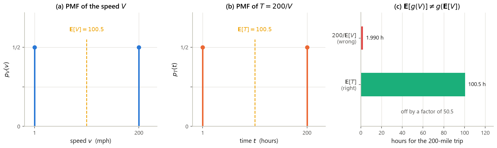
The practically useful reading: the effective average speed for a fixed-distance trip is not $\mathbb{E}[V]$ but $d/\mathbb{E}[T] = 200/100.5 = 400/201 \approx 1.990050$ mph, which is the harmonic mean $2/(1/1 + 1/200)$ of the two speeds. Harmonic means are what you get when you average rates over a fixed distance; arithmetic means are what you get when you average rates over a fixed time. Choosing the wrong one is the error the slide is warning about.
- Identify the underlying random variable $X$ and list its values $x$ with $p_X(x)$.
- Apply $g$ outcome by outcome: build the table of pairs $\big(g(x),\,p_X(x)\big)$.
- If several $x$ map to the same $g(x)$, merge them by adding their probabilities — that is the PMF $p_{g(X)}$.
- Sum: $\mathbb{E}[g(X)] = \sum_x g(x)p_X(x)$ (you may sum over the original $x$'s without merging; merging is only needed if you want the PMF itself).
- Never shortcut to $g(\mathbb{E}[X])$ unless $g$ is of the form $\alpha x + \beta$.
- Sanity-check the direction: for convex $g$ (like $x^2$, $1/x$ on $x>0$, $e^x$) the true answer must be $\ge g(\mathbb{E}[X])$.
Solution
(a) $\mathbb{E}[V] = \frac12(30) + \frac12(60) = 45$ mph, suggesting $120/45 = 8/3 \approx 2.666667$ hours.
(b) $T = 120/V$ takes the values $120/30 = 4$ h and $120/60 = 2$ h, each with probability $1/2$, so $$\mathbb{E}[T] = \tfrac12(4) + \tfrac12(2) = 3 \text{ hours}.$$ The naive figure is 20 minutes too optimistic.
(c) Effective speed $= 120/\mathbb{E}[T] = 120/3 = 40$ mph — the harmonic mean $2/(1/30 + 1/60) = 2/(3/60) = 40$, which is less than the arithmetic mean 45, as convexity requires. (computes/g2_s3.py keys I2_*.)
Solution
$\mathbb{E}[X] = 0(\frac14) + 1(\frac12) + 2(\frac14) = 1$, so $(\mathbb{E}[X])^2 = 1$.
$\mathbb{E}[X^2] = 0(\frac14) + 1(\frac12) + 4(\frac14) = \frac12 + 1 = \frac32 = 1.5$.
They differ: $1.5 \neq 1$, and the difference $\mathbb{E}[X^2] - (\mathbb{E}[X])^2 = 0.5$ is exactly $\operatorname{var}(X)$ by Property 2 — which is the general reason $g(x)=x^2$ can never be pushed through an expectation unless the variable is constant.
3.4 Conditional PMFs and conditional expectation
Conditioning was introduced in G1 for events. Nothing new is needed here: a conditional PMF is an ordinary PMF computed in the reduced universe where the conditioning event is known to have occurred.
Proof
Nonnegativity is immediate: the numerator $\mathbf{P}(\{X=x\}\cap A)$ and denominator $\mathbf{P}(A)$ are both nonnegative and the denominator is strictly positive. For normalization, the events $\{X = x\} \cap A$, as $x$ ranges over the values of $X$, are disjoint (different $x$'s cannot both occur) and their union is $A$ (whatever happens, $X$ takes some value). So by additivity, $$\sum_x \mathbf{P}\big(\{X=x\}\cap A\big) = \mathbf{P}(A),$$ and dividing both sides by $\mathbf{P}(A)$, $$\sum_x p_{X|A}(x) = \frac{\mathbf{P}(A)}{\mathbf{P}(A)} = 1. \qquad\blacksquare$$
The practical content: conditioning is "delete and rescale". Delete the mass sitting outside $A$; multiply every surviving bar by the same factor $1/\mathbf{P}(A)$ so the total is 1 again. The shape of the surviving part is untouched.
Step 1 — the conditioning probability. $A$ is the event that $X$ takes one of the values $2,3,4$. These are disjoint outcomes, so $$\mathbf{P}(A) = p_X(2)+p_X(3)+p_X(4) = \tfrac14+\tfrac14+\tfrac14 = \tfrac34.$$
Step 2 — the conditional PMF. For $x \in \{2,3,4\}$ the event $\{X=x\}$ is contained in $A$, so $\{X=x\}\cap A = \{X=x\}$ and $$p_{X|A}(x) = \frac{p_X(x)}{\mathbf{P}(A)} = \frac{1/4}{3/4} = \frac13.$$ For $x = 1$ the event $\{X=1\}$ is disjoint from $A$, so the numerator is $0$ and $p_{X|A}(1) = 0$. Hence $$p_{X|A}(x) = \begin{cases} 1/3, & x \in \{2,3,4\},\\ 0, & \text{otherwise.}\end{cases}$$ Check: $1/3+1/3+1/3 = 1$. ✓ Conditioning on $A$ turned a uniform on four values into a uniform on three.
Step 3 — the conditional expectation. $$\mathbb{E}[X\mid A] = \sum_x x\,p_{X|A}(x) = 2\cdot\tfrac13 + 3\cdot\tfrac13 + 4\cdot\tfrac13 = \tfrac{2+3+4}{3} = \tfrac93 = 3.$$ Compare with the unconditional $\mathbb{E}[X] = 5/2 = 2.5$: learning that $X$ is at least 2 pushes the mean up by $1/2$, as it must, since the conditioning removed the smallest value.
Step 4 (bonus) — the conditional variance. $\mathbb{E}[X^2\mid A] = \frac{4+9+16}{3} = \frac{29}{3}$, so
$$\operatorname{var}(X\mid A) = \tfrac{29}{3} - 3^2 = \tfrac{29}{3} - \tfrac{27}{3} = \tfrac23 \approx 0.666667,$$
smaller than the unconditional $\operatorname{var}(X) = 5/4 = 1.25$ — information narrowed the distribution. (computes/g2_s3.py keys C_*.)
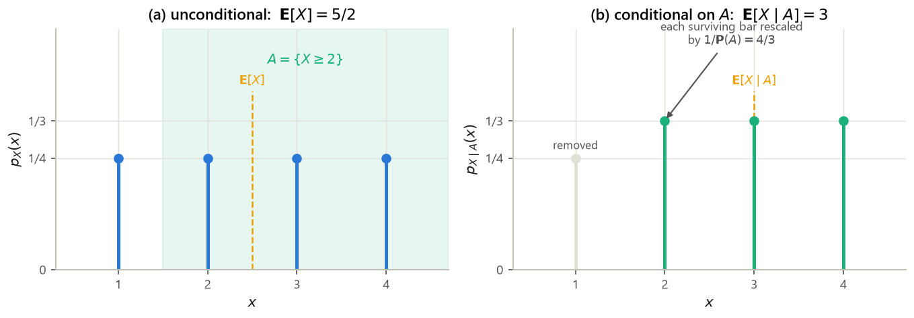
Solution
$\mathbf{P}(A) = \mathbf{P}(X\in\{2,4,6\}) = 3/6 = 1/2$. For $x \in \{2,4,6\}$, $p_{X|A}(x) = (1/6)/(1/2) = 1/3$; otherwise $0$.
$\mathbb{E}[X\mid A] = \frac{2+4+6}{3} = 4$. $\mathbb{E}[X^2\mid A] = \frac{4+16+36}{3} = \frac{56}{3}$, so $\operatorname{var}(X\mid A) = \frac{56}{3} - 16 = \frac{56-48}{3} = \frac83 \approx 2.666667$.
(Compare: unconditionally $\mathbb{E}[X]=3.5$ and $\operatorname{var}(X) = 91/6 - 49/4 = 35/12 \approx 2.916667$. Here conditioning raised the mean and slightly lowered the variance.)
Solution
$\mathbf{P}(A) = 0.3 + 0.2 = 0.5$, so $p_{X|A}(1) = 0.3/0.5 = 0.6$ and $p_{X|A}(5) = 0.2/0.5 = 0.4$; these sum to 1. ✓
$\mathbb{E}[X\mid A] = 1(0.6) + 5(0.4) = 0.6 + 2.0 = 2.6$.
$A^c = \{X = 0\}$ has $\mathbf{P}(A^c) = 0.5$ and $\mathbb{E}[X\mid A^c] = 0$ (the only value there is $0$).
Right-hand side: $0.5(0) + 0.5(2.6) = 1.3$. Direct: $\mathbb{E}[X] = 0(0.5)+1(0.3)+5(0.2) = 0.3+1.0 = 1.3$. ✓ This identity is the total expectation theorem of §3.6 in its two-piece form.
3.5 The geometric PMF and memorylessness
Where the formula comes from, and why it is a legitimate PMF
The formula. The event $\{X = k\}$ is the single specific sequence "tail, tail, …, tail (a total of $k-1$ times), then head". The tosses are independent, so the probability of the sequence is the product of the per-toss probabilities: $$\mathbf{P}(X = k) = \underbrace{(1-p)(1-p)\cdots(1-p)}_{k-1 \text{ tails}} \cdot p = (1-p)^{k-1}p.$$
Normalization. Sum over all $k \ge 1$ and substitute $q = 1-p$, so $0 \le q < 1$:
$$\sum_{k=1}^{\infty} (1-p)^{k-1} p = p\sum_{k=1}^{\infty} q^{k-1} = p \sum_{j=0}^{\infty} q^{j} = p\cdot\frac{1}{1-q} = \frac{p}{p} = 1,$$
where the third equality re-indexes with $j = k-1$ and the fourth is the geometric series $\sum_{j\ge0} q^j = 1/(1-q)$, valid because $|q| < 1$. Verified numerically to 12 decimals for $p = 1/2, 1/5, 3/10$ (computes/g2_s3.py keys D_p=*_pmf_total_numeric).
The tail probability, needed constantly below: $$\mathbf{P}(X > k) = \sum_{n = k+1}^{\infty}(1-p)^{n-1}p = p\, q^{k}\sum_{j=0}^{\infty} q^{j} = p\,q^{k}\cdot\frac{1}{1-q} = p\,q^k\cdot\frac1p = q^k = (1-p)^k.$$ (Re-index with $n = k+1+j$ so that $q^{n-1} = q^{k+j}$, pull out $q^k$, sum the series.) There is a shorter argument that gives the same thing in one line: $X > k$ means precisely that the first $k$ tosses were all tails, and by independence that has probability $(1-p)^k$.
Derivation — cleanly, every step (the slide only draws the picture)
Step 1 — name the two events. Fix an integer $n \ge 1$. The event of interest is $\{X - k = n\}$, i.e. $\{X = k+n\}$: the first head lands exactly $n$ tosses after the $k$ we have already watched fail. The conditioning event is $\{X > k\}$: the first $k$ tosses were all tails.
Step 2 — the intersection. If $X = k+n$ with $n \ge 1$, then $X > k$ automatically. So $$\{X = k+n\} \cap \{X > k\} = \{X = k+n\},$$ and the joint probability is just $p_X(k+n)$.
Step 3 — apply the definition of conditional probability. $$\mathbf{P}(X - k = n \mid X > k) \;=\; \frac{\mathbf{P}\big(\{X = k+n\}\cap\{X > k\}\big)}{\mathbf{P}(X > k)} \;=\; \frac{p_X(k+n)}{\mathbf{P}(X > k)}.$$
Step 4 — substitute both pieces. The numerator is $p_X(k+n) = (1-p)^{(k+n)-1}p = (1-p)^{k+n-1}p$. The denominator is $\mathbf{P}(X>k) = (1-p)^k$, computed above. Therefore $$\mathbf{P}(X-k = n \mid X > k) \;=\; \frac{(1-p)^{k+n-1}\,p}{(1-p)^{k}}.$$
Step 5 — cancel. Subtract exponents on the common base $(1-p)$: $$\frac{(1-p)^{k+n-1}}{(1-p)^{k}} = (1-p)^{(k+n-1)-k} = (1-p)^{n-1},$$ so $$\mathbf{P}(X-k = n \mid X > k) \;=\; (1-p)^{n-1}p \;=\; p_X(n).$$ The $k$ has vanished entirely. $\blacksquare$
Step 6 — the expectation form. Because $X-k$ given $\{X>k\}$ has the same PMF as $X$, it has the same mean: $$\mathbb{E}[X - k \mid X > k] = \mathbb{E}[X] \quad\Longrightarrow\quad \mathbb{E}[X\mid X>k] = k + \mathbb{E}[X].$$ The first implication uses linearity inside the conditional universe: $\mathbb{E}[X-k \mid A] = \mathbb{E}[X\mid A] - k$ for the constant $k$. With $\mathbb{E}[X] = 1/p$ (proved in §3.7), $\mathbb{E}[X\mid X>k] = k + 1/p$.
Exact verification. computes/g2_s3.py (keys D2_*) checks the identity in exact rational arithmetic for $p \in \{1/3, 1/5\}$, $k \in \{2,5\}$ and $n = 1,\dots,11$: zero mismatches.
![Six panels. (a) Geometric PMF with p = 0.3, stems decaying from 0.3, with the region k greater than 2 shaded and labeled P(X greater than 2) equals 0.49, and annotations p and p times (1-p) squared. (b) The same stems for k greater than 2 renormalized so the first one is back at height p. (c) The renormalized stems shifted left by 2, identical in shape to panel (a). (d) An overlay of panel (a) and panel (c) showing the dots land on the same heights. (e) The tail probability P(X greater than k) plotted against k, decaying exponentially from 1. (f) Curves of E[X] = 1/p and sigma = sqrt(1-p)/p against p, both blowing up as p goes to zero.](img/g2_s3_geometric.png)
scipy.stats.geom has $\texttt{pmf}(0,p)=0$, $\texttt{pmf}(1,p)=p$ and mean $1/p$, and numpy.random.geometric returns values $\ge 1$ with sample mean $\approx 1/p$. To get the failures-only version you must shift deliberately — scipy.stats.geom(p, loc=-1), or numpy.random.negative_binomial(1, p).) The variances agree — $\operatorname{var}(Y) = \operatorname{var}(X-1) = \operatorname{var}(X) = (1-p)/p^2$ by §3.2 Property 1 — but the means differ by exactly 1. Always check which convention a formula assumes.The widget below is the numerical form of the theorem: it draws the original PMF $p_X(n)$ and, on top of it, the conditional PMF of the remaining tosses $X-k$ after $k$ observed failures. Move $k$ and watch nothing happen. (The identity was verified in exact and floating-point arithmetic in computes/g2_s3.py, keys H_*: maximum absolute difference below $10^{-15}$ for every $p$ and $k$ tested.)
Solution
(a) $\mathbf{P}(X>30) = (1-0.02)^{30} = 0.98^{30} \approx 0.545484$.
(b) By memorylessness the remaining wait is geometric with the same $p$, so its mean is $1/p = 1/0.02 = 50$ days. The 30 days of survival are irrelevant.
(c) $\mathbb{E}[X\mid X>30] = 30 + 1/p = 30 + 50 = 80$ days.
Note the contrast with (b): the total lifetime conditional mean grows with the elapsed time, the remaining lifetime conditional mean does not. Both statements are the same theorem.
Solution
Write $q = 1-p$. The even values are $k = 2, 4, 6, \dots$, i.e. $k = 2j$ for $j \ge 1$: $$\mathbf{P}(X \text{ even}) = \sum_{j=1}^{\infty} p_X(2j) = \sum_{j=1}^{\infty} q^{2j-1}p = p\,q\sum_{j=1}^{\infty} q^{2j-2} = p\,q\sum_{i=0}^{\infty}(q^2)^{i} = \frac{p\,q}{1-q^2},$$ re-indexing with $i = j-1$ and summing the geometric series in ratio $q^2 < 1$. Now factor $1-q^2 = (1-q)(1+q) = p(1+q)$: $$\mathbf{P}(X\text{ even}) = \frac{p\,q}{p(1+q)} = \frac{q}{1+q} = \frac{1-p}{1+(1-p)} = \frac{1-p}{2-p}.$$
For $p = 1/2$: $\frac{1/2}{3/2} = \frac13 \approx 0.333333$. For $p = 1/4$: $\frac{3/4}{7/4} = \frac37 \approx 0.428571$. Both confirmed by direct numerical summation (computes/g2_s3.py keys I4_*). Sanity: an even first success requires at least one failure first, so the answer must be below $1/2$, and it is.
3.6 The total expectation theorem
Conditioning (§3.4) breaks a problem into easier universes. The total expectation theorem is how you put the pieces back together. Recall from G1 that events $A_1,\dots,A_n$ form a partition of the sample space $\Omega$ when they are pairwise disjoint ($A_i \cap A_j = \varnothing$ for $i \neq j$) and collectively exhaustive ($A_1 \cup \cdots \cup A_n = \Omega$); we also assume $\mathbf{P}(A_i) > 0$ for each $i$ so the conditioning is defined.
Derivation of all three — the slide states them without proof
(TP), the total probability theorem (G1). Because the $A_i$ partition $\Omega$, the sets $B\cap A_1, \dots, B\cap A_n$ are pairwise disjoint and their union is $B$. Additivity gives $$\mathbf{P}(B) = \sum_{i=1}^n \mathbf{P}(B\cap A_i) = \sum_{i=1}^n \mathbf{P}(A_i)\mathbf{P}(B\mid A_i),$$ the last step being the multiplication rule $\mathbf{P}(B\cap A_i) = \mathbf{P}(A_i)\mathbf{P}(B\mid A_i)$.
(TP-PMF). Apply (TP) with the specific event $B = \{X = x\}$: $$p_X(x) = \mathbf{P}(X = x) = \sum_{i=1}^n \mathbf{P}(A_i)\,\mathbf{P}(X = x\mid A_i) = \sum_{i=1}^n \mathbf{P}(A_i)\,p_{X|A_i}(x),$$ using the definition of the conditional PMF from §3.4 in the last step. So the unconditional PMF is a probability-weighted mixture of the conditional PMFs.
(TE). Start from the definition of expectation and substitute (TP-PMF): $$\mathbb{E}[X] = \sum_x x\,p_X(x) = \sum_x x \left(\sum_{i=1}^{n}\mathbf{P}(A_i)p_{X|A_i}(x)\right).$$ Multiply $x$ into the inner sum and exchange the order of summation (finite outer sum over $i$; the inner sum converges absolutely whenever $\mathbb{E}[X]$ exists): $$= \sum_{i=1}^{n}\mathbf{P}(A_i)\left(\sum_x x\, p_{X|A_i}(x)\right) = \sum_{i=1}^{n}\mathbf{P}(A_i)\,\mathbb{E}[X\mid A_i],$$ recognizing the inner sum as the conditional expectation $\mathbb{E}[X\mid A_i]$ of §3.4. $\blacksquare$
The same argument with $g(x)$ in place of $x$ gives $\mathbb{E}[g(X)] = \sum_i \mathbf{P}(A_i)\mathbb{E}[g(X)\mid A_i]$ — used with $g(x) = x^2$ in §3.7.
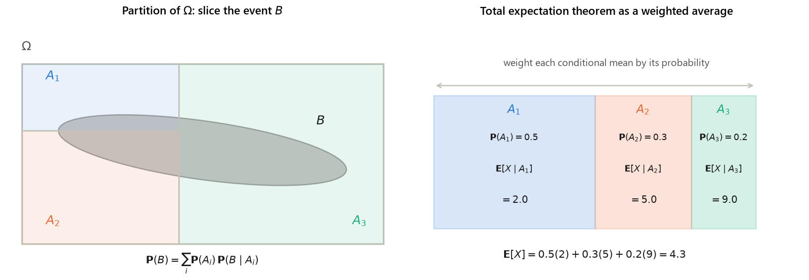
Solution. The three destinations form a partition ($A_1$ = "to New York", etc. — a message goes to exactly one). By (TE), $$\mathbb{E}[X] = 0.5(0.05) + 0.3(0.1) + 0.2(0.3) = 0.025 + 0.030 + 0.060 = 0.115 \text{ seconds}.$$ Note the answer is much closer to the New York figure than to the San Francisco one, because half the traffic goes to New York.
- Choose the split. Ask "what one fact, if I knew it, would make this problem easy?" Common answers: the outcome of the first trial; which stage the process is in; the value of an auxiliary variable. Make the possible answers your $A_1,\dots,A_n$.
- Check it is a partition. Pairwise disjoint, and $\sum_i \mathbf{P}(A_i) = 1$.
- Compute each weight $\mathbf{P}(A_i)$.
- Compute each conditional expectation $\mathbb{E}[X\mid A_i]$ in the reduced universe. If one of them refers back to $\mathbb{E}[X]$ itself (because the process restarts), keep it symbolic — do not panic.
- Assemble $\mathbb{E}[X] = \sum_i \mathbf{P}(A_i)\mathbb{E}[X\mid A_i]$. If step 4 produced $\mathbb{E}[X]$ on the right-hand side, you now have an equation in the single unknown $\mathbb{E}[X]$ — solve it algebraically (§3.7). If several states each produced an equation, you have a small linear system — solve it (§3.8).
- Sanity-check the answer against an extreme case ($p\to0$, $p\to1$, symmetry).
Solution
(a) $\mathbb{E}[X] = 0.6(2) + 0.4(30) = 1.2 + 12.0 = 13.2$ KB (computes/g2_s3.py key I6_EX).
(b) Conditional second moments: given short, $X = 2$ always, so $\mathbb{E}[X^2\mid \text{short}] = 4$. Given long, $X^2$ is $400$ or $1600$ with probability $1/2$ each, so $\mathbb{E}[X^2\mid\text{long}] = \frac{400+1600}{2} = 1000$. (Consistency check: $\mathbb{E}[X\mid\text{long}] = \frac{20+40}{2} = 30$ ✓ as stated.) By the $g(X)$ version of (TE), $$\mathbb{E}[X^2] = 0.6(4) + 0.4(1000) = 2.4 + 400 = 402.4.$$ Then $\operatorname{var}(X) = 402.4 - (13.2)^2 = 402.4 - 174.24 = 228.16$, so $\sigma_X = \sqrt{228.16} \approx 15.105$ KB — a spread comparable to the mean, which is what a two-humped distribution looks like.
Solution
$A_1$ and $A_2$ are disjoint and their union is everything, so they partition $\Omega$; weights $\mathbf{P}(A_1) = 1/4$, $\mathbf{P}(A_2) = 3/4$, summing to 1. ✓
$\mathbb{E}[X\mid A_1] = 1$ (only one value is possible). $\mathbb{E}[X\mid A_2] = 3$ from Example 3.3. So
$$\sum_i \mathbf{P}(A_i)\mathbb{E}[X\mid A_i] = \tfrac14(1) + \tfrac34(3) = \tfrac14 + \tfrac94 = \tfrac{10}{4} = \tfrac52,$$
which is exactly $\mathbb{E}[X] = 5/2$. ✓ (computes/g2_s3.py key C_total_expectation_check.) This two-piece partition — "the first trial succeeded" versus "it did not" — is precisely the one that cracks the geometric in §3.7.
3.7 Mean and variance of the geometric distribution
This is the payoff. L06 slide 6 writes the mean as an infinite sum and stops; L06 slide 7 says "solve to get $\mathbb{E}[X] = 1/p$" without showing the substitutions; rec06 P3 poses the variance and defers the whole solution to the textbook. All of it is filled in here.
The mean, by memorylessness and total expectation (L06 slide 7)
Step 1 — choose the partition. The slide's choice: $A_1 = \{X = 1\}$ ("the first toss is a head") and $A_2 = \{X > 1\}$ ("the first toss is a tail"). These are disjoint and exhaust the space (the first toss is one or the other), so they are a legitimate partition.
Step 2 — the two weights. $$\mathbf{P}(A_1) = \mathbf{P}(X=1) = p_X(1) = (1-p)^{1-1}p = (1-p)^0 p = p,$$ $$\mathbf{P}(A_2) = \mathbf{P}(X>1) = (1-p)^1 = 1-p,$$ using the tail formula $\mathbf{P}(X>k) = (1-p)^k$ with $k=1$. Check: $p + (1-p) = 1$. ✓
Step 3 — the first conditional expectation. Given $A_1 = \{X=1\}$, the random variable $X$ equals $1$ with conditional probability 1, so $$\mathbb{E}[X \mid X = 1] = 1.$$
Step 4 — the second conditional expectation, via memorylessness. Given $A_2 = \{X>1\}$, one toss has been spent and it was a failure. By the theorem of §3.5 with $k=1$, the remaining wait $X - 1$ has the original geometric PMF, hence the original mean: $$\mathbb{E}[X - 1 \mid X > 1] = \mathbb{E}[X] \quad\Longrightarrow\quad \mathbb{E}[X \mid X > 1] = 1 + \mathbb{E}[X].$$ In words (B&T Example 2.17): "we have wasted one try, and we are back where we started."
Step 5 — assemble via (TE). $$\mathbb{E}[X] = \mathbf{P}(X=1)\,\mathbb{E}[X\mid X=1] + \mathbf{P}(X>1)\,\mathbb{E}[X\mid X>1] = p\cdot 1 + (1-p)\big(1 + \mathbb{E}[X]\big).$$
Step 6 — solve the equation. Expand the right-hand side: $$\mathbb{E}[X] = p + (1-p) + (1-p)\mathbb{E}[X] = 1 + (1-p)\mathbb{E}[X],$$ since $p + (1-p) = 1$. Move the $\mathbb{E}[X]$ terms to the left: $$\mathbb{E}[X] - (1-p)\mathbb{E}[X] = 1 \quad\Longrightarrow\quad \mathbb{E}[X]\big(1 - (1-p)\big) = 1 \quad\Longrightarrow\quad \mathbb{E}[X]\,p = 1,$$ and divide by $p > 0$: $$\boxed{\;\mathbb{E}[X] = \frac1p\;}$$ $\blacksquare$ (The compact form of the whole argument is the one-liner $\mathbb{E}[X] = 1 + (1-p)\mathbb{E}[X]$: "you always spend one toss, and with probability $1-p$ you must start over.")
Alternative 1 — evaluating the infinite sum directly (the sum L06 slide 6 writes but does not evaluate)
Write $q = 1-p$, so $0 \le q < 1$. The sum to evaluate is $$\mathbb{E}[X] = \sum_{k=1}^{\infty} k\,(1-p)^{k-1}p = p\sum_{k=1}^{\infty} k\,q^{k-1}.$$
The inner sum by differentiation. Start from the geometric series, valid for $|q|<1$: $$\sum_{k=0}^{\infty} q^{k} = \frac{1}{1-q}.$$ Differentiate both sides with respect to $q$ (a power series may be differentiated term by term inside its radius of convergence). On the left, the $k=0$ term differentiates to 0, so $$\frac{d}{dq}\sum_{k=0}^{\infty} q^k = \sum_{k=1}^{\infty} k\,q^{k-1}.$$ On the right, $\dfrac{d}{dq}(1-q)^{-1} = (1-q)^{-2}$. Hence $$\sum_{k=1}^{\infty} k\,q^{k-1} = \frac{1}{(1-q)^2} = \frac{1}{p^2},$$ substituting $1-q = p$.
Finish. $\mathbb{E}[X] = p\cdot\dfrac{1}{p^2} = \dfrac1p$. ✓ Same answer, considerably more work — which is the lecture's point in preferring the conditioning argument.
Alternative 2 — the tail-sum formula (shortest of all)
For a random variable taking values in $\{1,2,3,\dots\}$, $$\mathbb{E}[X] = \sum_{k=0}^{\infty}\mathbf{P}(X > k).$$ Why: $\mathbf{P}(X>k) = \sum_{n>k} p_X(n)$, so summing over $k = 0,1,2,\dots$ counts $p_X(n)$ once for each $k \in \{0,1,\dots,n-1\}$ — that is $n$ times — giving $\sum_n n\,p_X(n) = \mathbb{E}[X]$.
For the geometric, $\mathbf{P}(X>k) = (1-p)^k = q^k$, so $$\mathbb{E}[X] = \sum_{k=0}^{\infty} q^k = \frac{1}{1-q} = \frac{1}{p}. \checkmark$$ This is the "area under the tail" reading annotated in Fig. 3.4(e).
The variance (rec06 P3 = B&T Example 2.17, pp. 105–106)
The rec06 solution handout says only "See the textbook, Example 2.17, pages 105–106" — no derivation and not even the answer. Everything below fills that gap.
Solution — complete, every step
Step 0 — model. Each attempt is an independent trial with success probability $p$; $X$ is the index of the first success. So $X$ is geometric with parameter $p$: $p_X(k) = (1-p)^{k-1}p$ for $k = 1,2,\dots$. From §3.7 above, $\mathbb{E}[X] = 1/p$. By Property 2 of §3.2 we need one more number, $\mathbb{E}[X^2]$, and then $$\operatorname{var}(X) = \mathbb{E}[X^2] - \big(\mathbb{E}[X]\big)^2 = \mathbb{E}[X^2] - \frac{1}{p^2}.$$
Step 1 — same partition, now applied to $X^2$. Use the $g(X)$ version of the total expectation theorem (§3.6) with $g(x)=x^2$ and the partition $A_1 = \{X=1\}$, $A_2 = \{X>1\}$: $$\mathbb{E}[X^2] = \mathbf{P}(X=1)\,\mathbb{E}[X^2\mid X=1] + \mathbf{P}(X>1)\,\mathbb{E}[X^2\mid X>1] = p\,\mathbb{E}[X^2\mid X=1] + (1-p)\,\mathbb{E}[X^2\mid X>1].$$
Step 2 — the easy conditional. Given $X=1$, $X^2 = 1$ with conditional probability 1, so $$\mathbb{E}[X^2\mid X=1] = 1.$$
Step 3 — the memoryless conditional. Given $\{X>1\}$, write $X = 1 + R$ where $R = X - 1$ is the number of further attempts. By memorylessness (§3.5 with $k=1$), conditioned on $\{X>1\}$ the variable $R$ has the original geometric PMF; in particular $\mathbb{E}[R] = \mathbb{E}[X]$ and $\mathbb{E}[R^2] = \mathbb{E}[X^2]$. Now expand the square: $$X^2 = (1+R)^2 = 1 + 2R + R^2,$$ and take conditional expectations, using linearity inside the conditional universe: $$\mathbb{E}[X^2\mid X>1] = 1 + 2\,\mathbb{E}[R \mid X>1] + \mathbb{E}[R^2\mid X>1] = 1 + 2\,\mathbb{E}[X] + \mathbb{E}[X^2].$$ This is the step the textbook compresses into "with similar reasoning".
Step 4 — assemble. Substitute Steps 2 and 3 into Step 1: $$\mathbb{E}[X^2] = p\cdot 1 + (1-p)\Big(1 + 2\,\mathbb{E}[X] + \mathbb{E}[X^2]\Big).$$
Step 5 — solve for $\mathbb{E}[X^2]$. Expand: $$\mathbb{E}[X^2] = p + (1-p) + 2(1-p)\mathbb{E}[X] + (1-p)\mathbb{E}[X^2] = 1 + 2(1-p)\mathbb{E}[X] + (1-p)\mathbb{E}[X^2],$$ using $p + (1-p) = 1$. Collect the $\mathbb{E}[X^2]$ terms: $$\mathbb{E}[X^2] - (1-p)\mathbb{E}[X^2] = 1 + 2(1-p)\mathbb{E}[X] \quad\Longrightarrow\quad p\,\mathbb{E}[X^2] = 1 + 2(1-p)\mathbb{E}[X],$$ so $$\mathbb{E}[X^2] = \frac{1 + 2(1-p)\mathbb{E}[X]}{p} = \frac{1}{p} + \frac{2(1-p)}{p}\,\mathbb{E}[X].$$
Step 6 — substitute $\mathbb{E}[X] = 1/p$. $$\mathbb{E}[X^2] = \frac1p + \frac{2(1-p)}{p}\cdot\frac1p = \frac{1}{p} + \frac{2(1-p)}{p^{2}} = \frac{p + 2(1-p)}{p^2} = \frac{2-p}{p^2}.$$
Step 7 — the variance. $$\operatorname{var}(X) = \mathbb{E}[X^2] - \big(\mathbb{E}[X]\big)^2 = \frac{2-p}{p^{2}} - \frac{1}{p^{2}} = \frac{(2-p) - 1}{p^{2}} = \frac{1-p}{p^{2}}.$$ $$\boxed{\;\operatorname{var}(X) = \frac{1-p}{p^{2}}, \qquad \sigma_X = \frac{\sqrt{1-p}}{p}\;}$$ $\blacksquare$
Numerical verification (computes/g2_s3.py, keys D_p=*): summing the PMF numerically to $k = 19999$,
| $p$ | $\mathbb{E}[X]$ (sum) | $1/p$ | $\operatorname{var}(X)$ (sum) | $(1-p)/p^2$ | $\sigma_X$ |
|---|---|---|---|---|---|
| $1/2$ | 2.000000 | 2 | 2.000000 | 2 | 1.414214 |
| $1/5$ | 5.000000 | 5 | 20.000000 | 20 | 4.472136 |
| $3/10$ | 3.333333 | 10/3 | 7.777778 | 70/9 | 2.788867 |
Alternative derivation of $\mathbb{E}[X^2]$ by direct summation (for readers who want the series route). With $q = 1-p$, differentiate the geometric series twice: $$\sum_{k=0}^{\infty}q^k = \frac{1}{1-q} \;\xrightarrow{\;d/dq\;}\; \sum_{k=1}^{\infty}kq^{k-1} = \frac{1}{(1-q)^2} \;\xrightarrow{\;d/dq\;}\; \sum_{k=2}^{\infty}k(k-1)q^{k-2} = \frac{2}{(1-q)^3} = \frac{2}{p^3}.$$ Multiply by $q$ to shift the exponent: $\sum_{k\ge1} k(k-1)q^{k-1} = 2q/p^3$ (the $k=1$ term is zero, so extending the lower limit is free). Therefore $$\mathbb{E}[X(X-1)] = p\sum_{k\ge1}k(k-1)q^{k-1} = p\cdot\frac{2q}{p^3} = \frac{2(1-p)}{p^{2}},$$ and since $X^2 = X(X-1) + X$, $$\mathbb{E}[X^2] = \frac{2(1-p)}{p^2} + \frac1p = \frac{2-2p+p}{p^2} = \frac{2-p}{p^2},$$ matching Step 6 exactly. ✓
Solution
$\mathbb{E}[X] = 1/p = 4$. $\operatorname{var}(X) = (1-1/4)/(1/4)^2 = (3/4)/(1/16) = 12$, so $\sigma_X = \sqrt{12} \approx 3.464102$.
$\mathbf{P}(X>6) = (1-p)^6 = (3/4)^6 = 729/4096 \approx 0.177979$.
$\mathbb{E}[X\mid X>6] = 6 + 1/p = 6 + 4 = 10$ by memorylessness.
$\operatorname{var}(X\mid X>6)$: conditioned on $\{X>6\}$ we have $X = 6 + R$ with $R$ geometric($p$); adding the constant 6 does not change a variance (§3.2 Property 1 with $a=1$), so $\operatorname{var}(X\mid X>6) = \operatorname{var}(R) = 12$ — unchanged. (computes/g2_s3.py keys I3_*.)
Solution
(a) $\mathbb{E}[X] = 1/0.05 = 20$ items; $\operatorname{var}(X) = 0.95/0.05^2 = 0.95/0.0025 = 380$, so $\sigma_X = \sqrt{380} \approx 19.4936$.
(b) Memorylessness: still $1/p = 20$ further tests, expected. The 40 clean tests are informationally worthless (under this model).
(c) $\sigma_X \approx 19.49$ is nearly equal to $\mathbb{E}[X] = 20$ (coefficient of variation $\sqrt{1-p} = \sqrt{0.95} \approx 0.9747$), so the mean alone is a poor summary: outcomes of 2 and of 60 are both entirely ordinary. Quote a mean and a spread, or better, quote the tail $\mathbf{P}(X > k) = 0.95^k$.
Solution
Conditioned on $\{X>1\}$ we have $X = 1 + R$ with $R$ geometric($p$), so $\operatorname{var}(X\mid X>1) = \operatorname{var}(1+R) = \operatorname{var}(R) = \operatorname{var}(X) =: v$, and $\mathbb{E}[X \mid X>1] = 1 + 1/p$. Hence $$\mathbb{E}[X^2\mid X>1] = \operatorname{var}(X\mid X>1) + \big(\mathbb{E}[X\mid X>1]\big)^2 = v + \left(1+\tfrac1p\right)^2,$$ using Property 2 rearranged, inside the conditional universe. Total expectation for $X^2$ with the same partition gives $$\mathbb{E}[X^2] = p(1) + (1-p)\left[v + \left(1+\tfrac1p\right)^2\right].$$ Also $\mathbb{E}[X^2] = v + 1/p^2$ by Property 2. Equating, $$v + \frac{1}{p^2} = p + (1-p)v + (1-p)\frac{(p+1)^2}{p^2}.$$ Collect $v$: $\;v\,p = p + (1-p)\frac{(p+1)^2}{p^2} - \frac{1}{p^2}$. Multiply through by $p^2$: $$v\,p^3 = p^3 + (1-p)(p+1)^2 - 1 = p^3 + (1-p)(p^2+2p+1) - 1.$$ Expand $(1-p)(p^2+2p+1) = p^2+2p+1-p^3-2p^2-p = -p^3 - p^2 + p + 1$. So $$v\,p^3 = p^3 + \big(-p^3 - p^2 + p + 1\big) - 1 = -p^2 + p = p(1-p),$$ giving $v = p(1-p)/p^3 = (1-p)/p^2$. ✓ Identical to Step 7 of Example 3.6, and then $\mathbb{E}[X^2] = v + 1/p^2 = (1-p)/p^2 + 1/p^2 = (2-p)/p^2$. ✓
3.8 State recursions: waiting for two in a row
The conditioning trick of §3.7 solved one equation in one unknown because the geometric process has a single "state": either you have succeeded or you are back at the start. When a process has several states, the same trick produces one equation per state — a small linear system. rec07 P3 is the canonical example.
The rec07 solutions handout gives only "See the textbook, Problem 2.33, page 128" — no recursion, no conditioning argument, no closed form. The full solution follows.
Solution — complete, every step
Notation. Let $X$ be the total number of tosses until the game stops. Write $p = \mathbf{P}(\text{heads})$ and $q = 1-p = \mathbf{P}(\text{tails})$ on each toss. Let $H_k$ (respectively $T_k$) be the event that toss $k$ is a head (respectively a tail). The tosses are independent with $\mathbf{P}(H_k) = p$ and $\mathbf{P}(T_k) = q$ for every $k$.
Why not compute the PMF? One could find $p_X(n)$ directly — the game lasts at least $n$ tosses exactly when the first $n-1$ tosses alternate — but for an unfair coin those alternating-pattern probabilities depend on the parity of $n$ and on which symbol started, and the resulting sum is messy. (It is doable; the enumeration is carried out numerically in computes/g2_s3.py, function two_in_row_sim_pmf, as an independent check on the answer below.) Conditioning is far cleaner.
Step 1 — the outer partition. The events $H_1$ and $T_1$ (first toss head / first toss tail) are disjoint and exhaustive, so by total expectation, $$\mathbb{E}[X] = \mathbf{P}(H_1)\,\mathbb{E}[X\mid H_1] + \mathbf{P}(T_1)\,\mathbb{E}[X\mid T_1] = p\,a + q\,b,$$ where we abbreviate $$a := \mathbb{E}[X\mid H_1], \qquad b := \mathbb{E}[X\mid T_1].$$ $a$ is the expected total number of tosses given the first one was a head; $b$ is the same given the first was a tail.
Step 2 — condition again on the second toss, to get an equation for $a$. Given $H_1$, the events $H_2$ and $T_2$ partition what happens next, with $\mathbf{P}(H_2\mid H_1)=p$ and $\mathbf{P}(T_2\mid H_1)=q$ by independence. So $$a = \mathbb{E}[X\mid H_1] = p\,\mathbb{E}[X\mid H_1\cap H_2] + q\,\mathbb{E}[X\mid H_1\cap T_2].$$
- $\mathbb{E}[X\mid H_1\cap H_2] = 2$: two heads in a row have occurred at tosses 1 and 2, so the game ends at toss 2 exactly. No randomness remains.
- $\mathbb{E}[X\mid H_1\cap T_2] = 1 + \mathbb{E}[X\mid T_1]= 1 + b$: the game is not over, and the only thing that matters going forward is the identity of the most recent toss, which is a tail. So from toss 2 onward the situation is statistically identical to the situation right after a first toss that was a tail — costing $b$ more tosses in expectation — plus the one toss already spent at index 1. (Formally: the future depends on the past only through the last symbol, because the stopping rule only compares consecutive tosses.)
Substituting, $$a = p\cdot 2 + q\,(1 + b) = 2p + q + q\,b. \tag{i}$$
Step 3 — the symmetric equation for $b$. Swapping the roles of heads and tails (and hence of $p$ and $q$, and of $a$ and $b$): $$b = q\cdot 2 + p\,(1 + a) = 2q + p + p\,a. \tag{ii}$$
Step 4 — solve the $2\times2$ system. Substitute (ii) into (i): $$a = 2p + q + q\big(2q + p + p\,a\big) = 2p + q + 2q^2 + pq + pq\,a.$$ Collect the $a$ terms: $$a - pq\,a = 2p + q + 2q^2 + pq \quad\Longrightarrow\quad a\,(1 - pq) = 2p + q + 2q^2 + pq.$$ Now simplify the right-hand side using $q = 1-p$ (equivalently $p + q = 1$). Claim: it equals $2 + q^2$. Check the difference: $$\big(2p + q + 2q^2 + pq\big) - \big(2 + q^2\big) = 2p + q + q^2 + pq - 2.$$ Substitute $q = 1-p$ term by term: $2p + (1-p) + (1-p)^2 + p(1-p) - 2 = 2p + 1 - p + 1 - 2p + p^2 + p - p^2 - 2$. Group: the $p$ terms give $2p - p - 2p + p = 0$; the constants give $1 + 1 - 2 = 0$; the $p^2$ terms give $p^2 - p^2 = 0$. Total $= 0$, so indeed $2p+q+2q^2+pq = 2+q^2$ and $$\boxed{\;a = \mathbb{E}[X\mid H_1] = \frac{2+q^2}{1-pq}\;}$$ By the head/tail symmetry of the argument, $$\boxed{\;b = \mathbb{E}[X\mid T_1] = \frac{2+p^2}{1-pq}\;}$$ Both expressions are verified numerically below (and note they are exchanged by $p \leftrightarrow q$, as the symmetry of the problem requires).
Step 5 — assemble. From Step 1, $$\mathbb{E}[X] = p\,a + q\,b = p\cdot\frac{2+q^2}{1-pq} + q\cdot\frac{2+p^2}{1-pq} = \frac{2p + pq^2 + 2q + qp^2}{1-pq}.$$ Factor the numerator: $2p + 2q = 2(p+q) = 2$, and $pq^2 + qp^2 = pq(q+p) = pq$. Hence $$\boxed{\;\mathbb{E}[X] = \frac{2 + pq}{1 - pq} = \frac{2 + p(1-p)}{1 - p(1-p)}\;}$$ $\blacksquare$
Step 6 — checks.
- Fair coin. $p = q = 1/2$ gives $pq = 1/4$ and $\mathbb{E}[X] = \dfrac{2 + 0.25}{1 - 0.25} = \dfrac{2.25}{0.75} = 3$ tosses, a clean integer. Note $a = b = 3$ too, as symmetry demands.
- Range. The product $pq = p(1-p)$ ranges over $[0, 1/4]$, maximized at $p = 1/2$. The map $u \mapsto (2+u)/(1-u)$ is increasing on $[0,1/4]$, so
$$\mathbb{E}[X] \in \left[\frac{2+0}{1-0},\; \frac{2+1/4}{1-1/4}\right] = [2, 3],$$
so $2 \le \mathbb{E}[X] \le 3$ for every $p$ — a strikingly narrow range. The lower end is approached as $p\to0$ or $p\to1$: a nearly deterministic coin repeats itself on toss 2 almost surely, so the game almost always ends at exactly 2 tosses. Numerically, computes/g2_s3.py scanning 200 001 values of $p$ finds minimum $2.000003$ and maximum $3.000000$ at $p = 0.5$ (keys
E_min_EX_over_p,E_max_EX_over_p,E_argmax_p). - Independent numerical check. Enumerating the exact PMF of $X$ (alternating-run probabilities, 200 terms) reproduces the closed form to 8+ digits:
(computes/g2_s3.py keys$p$ $a = \mathbb{E}[X\mid H_1]$ $b = \mathbb{E}[X\mid T_1]$ $\mathbb{E}[X]$ closed form $\mathbb{E}[X]$ by enumeration $1/2$ $3$ $3$ $3$ 3.000000 $2/5$ $59/19 \approx 3.105263$ $54/19 \approx 2.842105$ $56/19 \approx 2.947368$ 2.947368 $1/10$ $281/91 \approx 3.087912$ $201/91 \approx 2.208791$ $209/91 \approx 2.296703$ 2.296703 E_p=*; the enumerated PMFs also sum to $1.0$ to 12 decimals.) - Asymmetry check. At $p = 1/10$ the coin is tail-heavy, and indeed $b \approx 2.21 < a \approx 3.09$: starting with a tail is good news because a second tail (probability $0.9$) is likely to follow immediately.
![Two state diagrams. Panel (a): a start node with an arrow labeled p to a node last equals H and an arrow labeled q to a node last equals T. Arrows labeled q and p run between the two nodes, and arrows labeled p (HH) and q (TT) run from each to a STOP node. Below are the two equations a = 2p + q(1+b) and b = 2q + p(1+a) and the answer E[X] = pa + qb = (2+pq)/(1-pq). Panel (b): nodes S0 no H, S1 one H and STOP, with an arrow p from S0 to S1, an arrow p (HH) from S1 to STOP, a curved arrow q from S1 back to S0, and a self-loop q on S0; below, A = 1 + pB + qA, B = 1 + p times 0 + qA, and A = E[N] = (1+p)/p squared, equal to 6 when p is one half.](img/g2_s3_states.png)
- Define the state = the minimum information about the past you need to predict the future. For "two in a row", the state is the identity of the most recent toss (plus a "nothing yet" start state). For "$k$ heads in a row", the state is how many trailing heads you already have, $0,1,\dots,k-1$.
- Draw the diagram. One node per state, plus an absorbing STOP. Label each arrow with its one-step probability.
- Assign one unknown per state: $E_s = $ expected number of remaining tosses starting from state $s$ (or expected total, if you prefer — just be consistent; the two conventions differ by the tosses already spent).
- Write one equation per state by conditioning on the very next toss: $$E_s \;=\; 1 \;+\; \sum_{s'} \mathbf{P}(s \to s')\,E_{s'}, \qquad E_{\text{STOP}} = 0,$$ where the leading $1$ is the toss you are about to make. (Total expectation theorem, §3.6, with the partition "next toss is a head" / "next toss is a tail".)
- Solve the linear system — usually by substitution, since these systems are tiny.
- Check at $p=1/2$ (where symmetry often gives a clean integer) and at the extremes $p\to0$, $p\to1$.
Solution — the recursion, solved completely
Step 1 — states. Only the length of the current run of trailing heads matters, and it can be $0$ or $1$ (at $2$ the game is over):
- $S_0$: the last toss was a tail, or no toss has been made — no head banked.
- $S_1$: exactly one head banked (the last toss was a head, the one before was not a head).
Define $A = \mathbb{E}[\text{remaining tosses} \mid \text{now in } S_0]$ and $B = \mathbb{E}[\text{remaining tosses}\mid \text{now in }S_1]$. Since we start in $S_0$ with no tosses spent, $\mathbb{E}[N] = A$.
Step 2 — the equation at $S_0$. Make one toss (that is the $+1$). With probability $p$ it is a head and we move to $S_1$; with probability $q$ it is a tail and we are back in $S_0$ (a tail banks nothing). By total expectation over these two disjoint, exhaustive cases: $$A = 1 + p\,B + q\,A. \tag{iii}$$
Step 3 — the equation at $S_1$. Make one toss. With probability $p$ it is a head, completing HH — zero further tosses needed. With probability $q$ it is a tail, which wipes out the banked head and returns us to $S_0$: $$B = 1 + p\cdot 0 + q\,A = 1 + q\,A. \tag{iv}$$
Step 4 — solve. Substitute (iv) into (iii): $$A = 1 + p\,(1 + qA) + qA = 1 + p + pq\,A + q\,A.$$ Collect the $A$ terms on the left: $$A - pq\,A - q\,A = 1 + p \quad\Longrightarrow\quad A\big(1 - q - pq\big) = 1+p.$$ Simplify the bracket using $1 - q = p$: $$1 - q - pq = p - pq = p(1-q) = p\cdot p = p^2.$$ Therefore $$A\,p^{2} = 1 + p \quad\Longrightarrow\quad \boxed{\;\mathbb{E}[N] = A = \frac{1+p}{p^{2}}\;}$$ and, from (iv), $B = 1 + q\dfrac{1+p}{p^2} = \dfrac{p^2 + (1-p)(1+p)}{p^2} = \dfrac{p^2 + 1 - p^2}{p^2} = \dfrac{1}{p^{2}}$ — a pleasingly clean by-product. $\blacksquare$
Step 5 — checks. At $p = 1/2$: $\mathbb{E}[N] = (1.5)/(0.25) = 6$ tosses, and $B = 4$. At $p = 1/3$: $\mathbb{E}[N] = (4/3)/(1/9) = 12$; at $p = 2/3$: $(5/3)/(4/9) = 15/4 = 3.75$. All three match an independent dynamic-programming enumeration of the PMF of $N$ (computes/g2_s3.py keys F_p=*, agreement to $10^{-6}$, PMFs summing to $1.0$). Sanity: $\mathbb{E}[N] = (1+p)/p^2 > 1/p = $ the wait for a single head, as it must be, and it blows up like $1/p^2$ for rare heads — you need two consecutive rare events.
Contrast with Example 3.7. Waiting for HH-or-TT takes at most 3 tosses on average for any $p$, because a lopsided coin repeats itself quickly. Waiting for HH alone is unbounded as $p\to0$, because a lopsided tail-heavy coin destroys your progress on almost every toss. Same technique, opposite behavior — which is exactly why you draw the state diagram instead of guessing.
Solution
$p = 1/3$, $q = 2/3$, so $pq = 2/9$ and $1 - pq = 7/9$.
$\displaystyle a = \frac{2+q^2}{1-pq} = \frac{2 + 4/9}{7/9} = \frac{22/9}{7/9} = \frac{22}{7} \approx 3.142857$.
$\displaystyle b = \frac{2+p^2}{1-pq} = \frac{2 + 1/9}{7/9} = \frac{19/9}{7/9} = \frac{19}{7} \approx 2.714286$.
$\displaystyle \mathbb{E}[X] = \frac{2+pq}{1-pq} = \frac{2+2/9}{7/9} = \frac{20/9}{7/9} = \frac{20}{7} \approx 2.857143$. Cross-check via Step 1: $pa + qb = \frac13\cdot\frac{22}{7} + \frac23\cdot\frac{19}{7} = \frac{22}{21} + \frac{38}{21} = \frac{60}{21} = \frac{20}{7}$. ✓ And $2 \le 20/7 \le 3$. ✓ (computes/g2_s3.py keys I7_*.)
Solution
States $S_0, S_1, S_2$ = number of trailing heads banked (0, 1, or 2); the game stops on reaching 3. Let $A, B, C$ be the expected remaining tosses from $S_0, S_1, S_2$. Conditioning on the next toss: $$A = 1 + pB + qA, \qquad B = 1 + pC + qA, \qquad C = 1 + p\cdot 0 + qA.$$ Substitute $C$ into $B$: $B = 1 + p(1+qA) + qA = 1 + p + pqA + qA$. Substitute that into $A$: $$A = 1 + p\big(1 + p + pqA + qA\big) + qA = 1 + p + p^2 + p^2qA + pqA + qA.$$ Collect: $A\big(1 - q - pq - p^2q\big) = 1 + p + p^2$. For the bracket, use $1 - q = p$: $$1 - q - pq - p^2 q = p - pq - p^2q = p(1 - q - pq) = p\big(p - pq\big) = p\cdot p(1-q) = p^2\cdot p = p^3,$$ reusing the simplification from Example 3.8 one level up. Hence $$\mathbb{E}[N_3] = A = \frac{1 + p + p^2}{p^{3}},$$ and the pattern for $k$ in a row is $\mathbb{E}[N_k] = \dfrac{1 + p + \cdots + p^{k-1}}{p^{k}}$.
Fair coin, $k=3$: $\mathbb{E}[N_3] = \dfrac{1 + 1/2 + 1/4}{1/8} = \dfrac{7/4}{1/8} = 14$ tosses. (Compare 6 for HH and 2 for a single head: each extra required head roughly doubles-plus the wait.) Verified by dynamic programming for $k = 2, 3$ at $p = 1/2$ and $p = 1/3$ — computes/g2_s3.py keys I8_*: $k=3$, $p=1/3$ gives $39.0$ both ways.
- Centered variable (L06 slide 2): $\mathbb{E}\big[X-\mathbb{E}[X]\big] = 0$ always — useless as a spread measure, which is why we square.
- Variance: $\operatorname{var}(X) = \mathbb{E}[(X-\mathbb{E}[X])^2] = \sum_x (x-\mu)^2p_X(x) = \mathbb{E}[X^2] - (\mathbb{E}[X])^2$. Standard deviation $\sigma_X = \sqrt{\operatorname{var}(X)}$.
- Linear change of variable: $\mathbb{E}[aX+b] = a\mathbb{E}[X]+b$, but $\operatorname{var}(aX+b) = a^2\operatorname{var}(X)$ and $\sigma_{aX+b} = |a|\sigma_X$. The shift $b$ never affects spread.
- Expected-value rule: $\mathbb{E}[g(X)] = \sum_x g(x)p_X(x)$, and $\mathbb{E}[g(X)] \neq g(\mathbb{E}[X])$ unless $g$ is affine. Random speed (L06 slides 3–4): $\mathbb{E}[V] = 100.5$ mph, $\sigma_V = 99.5$, $\mathbb{E}[T] = 100.5$ h, but $200/\mathbb{E}[V] \approx 1.990$ h — wrong by a factor of $50.5$. Effective speed over a fixed distance is the harmonic mean.
- Conditional PMF (L06 slide 5): $p_{X|A}(x) = \mathbf{P}(\{X=x\}\cap A)/\mathbf{P}(A)$ — delete the mass outside $A$, rescale the rest by $1/\mathbf{P}(A)$. Then $\mathbb{E}[X\mid A] = \sum_x x\,p_{X|A}(x)$. Uniform on $\{1,2,3,4\}$ with $A=\{X\ge2\}$: $p_{X|A} = 1/3$ on $\{2,3,4\}$, $\mathbb{E}[X\mid A]=3$, $\operatorname{var}(X\mid A)=2/3$.
- Geometric (L06 slide 6): $p_X(k) = (1-p)^{k-1}p$, $k\ge1$; tail $\mathbf{P}(X>k) = (1-p)^k$.
- Memorylessness: $\mathbf{P}(X-k = n\mid X>k) = p_X(n)$; equivalently $\mathbb{E}[X\mid X>k] = k + 1/p$ while the remaining wait still averages $1/p$.
- Total expectation (L06 slide 7): for a partition $A_1,\dots,A_n$, $\;\mathbb{E}[X] = \sum_i \mathbf{P}(A_i)\mathbb{E}[X\mid A_i]$ (and the same for $p_X$ and for $\mathbb{E}[g(X)]$). Weights must sum to 1.
- Geometric mean and variance (L06 slide 7; rec06 P3 = B&T Ex. 2.17): $\mathbb{E}[X] = 1 + (1-p)\mathbb{E}[X] \Rightarrow \mathbb{E}[X] = 1/p$; $\;\mathbb{E}[X^2] = (2-p)/p^2$; $\;\operatorname{var}(X) = (1-p)/p^2$; $\;\sigma_X/\mathbb{E}[X] = \sqrt{1-p}$.
- State recursions: $E_s = 1 + \sum_{s'}\mathbf{P}(s\to s')E_{s'}$, $E_{\text{STOP}} = 0$. rec07 P3 (stop at HH or TT): $\mathbb{E}[X] = (2+pq)/(1-pq) \in [2,3]$, equal to $3$ for a fair coin. Companion (stop at HH only): $\mathbb{E}[N] = (1+p)/p^2$, equal to $6$ for a fair coin; $k$ in a row costs $(1+p+\cdots+p^{k-1})/p^k$.
computes/g2_s3.py (JSON: computes/g2_s3.json); all figures by computes/g2_s3_figs.py.§4 Joint PMFs and multiple random variables
Sources: L07 slides 1–8 (raster p01–p02) · L06 slide 8 (the same grid, its two normalization identities) · rec06 problems 1–2 · rec07 problems 1–2 · B&T §2.5 (joint PMFs), B&T §2.6 (conditioning), B&T §2.7 (independence), B&T Problem 2.35 p. 130. Every number on this page is recomputed in computes/g2_s4.py; figures in computes/g2_s4_figs.py.
Up to now a random variable has lived alone: one experiment, one number, one PMF. Real models are never like that. The die you roll decides how many coins you flip; the message you transmit and the symbol the receiver sees are two numbers attached to the same experiment; a binomial count is secretly a sum of $n$ smaller random variables. This section builds the apparatus for handling several random variables defined on the same sample space: the joint PMF (one table holding everything), the two operations that extract smaller objects from it (marginalization and conditioning), the definition of independence in PMF language, and the two facts that make sums of random variables tractable — linearity of expectation, which always holds, and additivity of variance, which needs independence. The section closes with the payoff L07 advertises: the binomial mean and variance obtained in three lines by writing $X$ as a sum of indicators, instead of grinding through $\sum_k k\binom{n}{k}p^k(1-p)^{n-k}$ — and then the hat problem of L07 slides 7–8, where the same indicators are dependent, linearity survives untouched, and the variance has to be assembled from cross terms.
Everything here is the discrete analogue of the two-event machinery from G1. Marginalization is the total probability theorem; the multiplication rule for PMFs is the multiplication rule for events; conditional PMFs are conditional probabilities with a normalization step. What is genuinely new is the quantifier: independence of random variables demands a product identity at every pair of values, not at one pair of events.
4.1 The joint PMF
Two properties follow instantly from the axioms of G1. First, $p_{X,Y}(x,y)\ge 0$, because it is a probability. Second, the events $\{X=x,Y=y\}$ over all pairs $(x,y)$ are disjoint (a single outcome $\omega$ produces exactly one value $X(\omega)$ and one value $Y(\omega)$, hence lands in exactly one cell) and their union is all of $\Omega$, so by the additivity axiom $$\sum_x\sum_y p_{X,Y}(x,y)=\mathbf{P}(\Omega)=1 .$$ That normalization check is the cheapest error detector in this whole subject: if your table does not add to $1$, stop and find the mistake before doing anything else.
For two random variables with finitely many values, the joint PMF is a table. L07 slide 3 puts one on the board and asks two questions about it; that table will be our running example for the next four subsections.
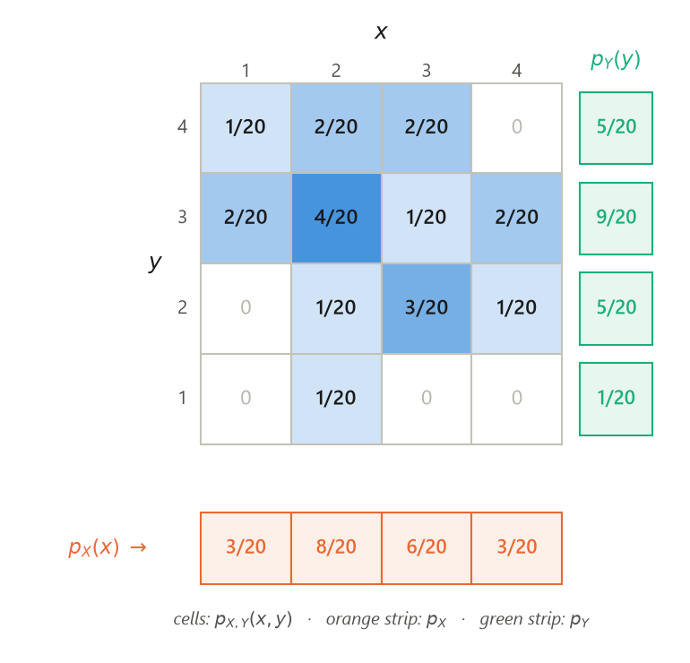
Check the normalization. Add the numerators row by row: row $y=4$ gives $1+2+2+0=5$; row $y=3$ gives $2+4+1+2=9$; row $y=2$ gives $0+1+3+1=5$; row $y=1$ gives $0+1+0+0=1$. Total $5+9+5+1=20$, so the masses sum to $20/20=1$. The table is a legitimate joint PMF. (This discharges the first blank of L06 slide 8, which asks for $\sum_x\sum_y p_{X,Y}(x,y)$ on this very grid; the second blank there, $\sum_x p_{X|Y}(x\mid y)=1$, is established in §4.3.)
A first query. $\mathbf{P}(X=2,Y=3)=p_{X,Y}(2,3)=4/20=1/5=0.2$ — read directly off the table, no computation. $\mathbf{P}(X=1,Y=1)=0$: the pair $(1,1)$ never occurs, even though $X=1$ is possible and $Y=1$ is possible. Blank cells are impossible combinations, not impossible values.
Solution
The $16$ ordered pairs are equally likely, so $p_{X,Y}(x,y)=1/16$ for every $x,y\in\{1,2,3,4\}$ and $0$ elsewhere. The event $\{X=Y\}$ consists of the four diagonal cells $(1,1),(2,2),(3,3),(4,4)$, so $\mathbf{P}(X=Y)=4\cdot\frac{1}{16}=\frac{4}{16}=\frac14=0.25$. The event $\{X+Y=5\}$ consists of $(1,4),(2,3),(3,2),(4,1)$, again four cells, so $\mathbf{P}(X+Y=5)=\frac{4}{16}=\frac14=0.25$. Both are "count the cells, multiply by the common mass" — the discrete-uniform special case of B&T §2.5.
Solution
Table A (independent): $p_{X,Y}(x,y)=p_X(x)p_Y(y)$, i.e. $p_{X,Y}(0,0)=\frac12\cdot\frac14=\frac18$, $p_{X,Y}(0,1)=\frac12\cdot\frac34=\frac38$, $p_{X,Y}(1,0)=\frac18$, $p_{X,Y}(1,1)=\frac38$. Row sums: $\frac18+\frac38=\frac12$ for each $x$ ✓; column sums: $\frac18+\frac18=\frac14$ and $\frac38+\frac38=\frac34$ ✓.
Table B (dependent): $p_{X,Y}(0,0)=\frac14$, $p_{X,Y}(0,1)=\frac14$, $p_{X,Y}(1,0)=0$, $p_{X,Y}(1,1)=\frac12$. Row sums: $\frac14+\frac14=\frac12$ and $0+\frac12=\frac12$ ✓; column sums: $\frac14+0=\frac14$ and $\frac14+\frac12=\frac34$ ✓.
Same margins, different tables: in B, $X=1$ forces $Y=1$, while in A knowing $X$ tells you nothing. Marginals are shadows; they lose the dependence.
4.2 Marginals: summing the joint over the other variable
The identity to be proved is $p_X(x)=\sum_y p_{X,Y}(x,y)$: sum the joint PMF over $y$ and what survives is the PMF of $X$ alone.
L07 slide 2 states the marginalization identity without proof. Here is the proof; it is one application of the total probability theorem from G1, and it is worth seeing once so that the identity stops looking like a notational convention.
Derivation. Fix a value $x$ of $X$. Let $y_1,y_2,\dots$ be the distinct values that $Y$ can take, and set $B_j=\{Y=y_j\}$. These events are disjoint (each outcome $\omega$ gives one number $Y(\omega)$, so $\omega$ belongs to exactly one $B_j$) and their union is $\Omega$ (every $\omega$ gives some value), so $\{B_j\}$ is a partition of the sample space in exactly the sense of G1 §2. Now intersect the event $A=\{X=x\}$ with the partition: $$A=A\cap\Omega=A\cap\Big(\bigcup_j B_j\Big)=\bigcup_j (A\cap B_j),$$ using distributivity of intersection over union. The pieces $A\cap B_j$ are disjoint, because the $B_j$ are. The additivity axiom therefore gives $$\mathbf{P}(A)=\sum_j \mathbf{P}(A\cap B_j),$$ which in random-variable notation reads $$p_X(x)=\mathbf{P}(X=x)=\sum_j\mathbf{P}(X=x,\ Y=y_j)=\sum_y p_{X,Y}(x,y).\qquad\blacksquare$$ In words: to find the probability that $X=x$, sweep along the row (or column) of the table where $X=x$ and add up every way that could have happened, tagged by the value of $Y$.
Now the rows, which give $p_Y$: $$p_Y(1)=0+\tfrac{1}{20}+0+0=\tfrac{1}{20}=0.05,\qquad p_Y(2)=0+\tfrac{1}{20}+\tfrac{3}{20}+\tfrac{1}{20}=\tfrac{5}{20}=\tfrac14=0.25,$$ $$p_Y(3)=\tfrac{2}{20}+\tfrac{4}{20}+\tfrac{1}{20}+\tfrac{2}{20}=\tfrac{9}{20}=0.45,\qquad p_Y(4)=\tfrac{1}{20}+\tfrac{2}{20}+\tfrac{2}{20}+0=\tfrac{5}{20}=\tfrac14=0.25 .$$ Check: $\tfrac{1}{20}+\tfrac{5}{20}+\tfrac{9}{20}+\tfrac{5}{20}=\tfrac{20}{20}=1$ ✓.
Means and variances of the marginals. Once you have $p_X$, the §2 (expectation) and §3.2 (variance) formulas apply unchanged, because a marginal PMF is just a PMF: $$\mathbb{E}[X]=1\cdot\tfrac{3}{20}+2\cdot\tfrac{8}{20}+3\cdot\tfrac{6}{20}+4\cdot\tfrac{3}{20} =\tfrac{3+16+18+12}{20}=\tfrac{49}{20}=2.45,$$ $$\mathbb{E}[X^2]=1\cdot\tfrac{3}{20}+4\cdot\tfrac{8}{20}+9\cdot\tfrac{6}{20}+16\cdot\tfrac{3}{20} =\tfrac{3+32+54+48}{20}=\tfrac{137}{20}=6.85,$$ $$\operatorname{var}(X)=\mathbb{E}[X^2]-(\mathbb{E}[X])^2=6.85-(2.45)^2=6.85-6.0025=0.8475=\tfrac{339}{400}.$$ Similarly $$\mathbb{E}[Y]=1\cdot\tfrac{1}{20}+2\cdot\tfrac{5}{20}+3\cdot\tfrac{9}{20}+4\cdot\tfrac{5}{20} =\tfrac{1+10+27+20}{20}=\tfrac{58}{20}=\tfrac{29}{10}=2.9,$$ $$\mathbb{E}[Y^2]=\tfrac{1+20+81+80}{20}=\tfrac{182}{20}=9.1,\qquad \operatorname{var}(Y)=9.1-(2.9)^2=9.1-8.41=0.69=\tfrac{69}{100}.$$
Solution
$\mathbf{P}(X\le 2)=p_X(1)+p_X(2)=\tfrac{3}{20}+\tfrac{8}{20}=\tfrac{11}{20}=0.55$ and $\mathbf{P}(Y\ge 3)=p_Y(3)+p_Y(4)=\tfrac{9}{20}+\tfrac{5}{20}=\tfrac{14}{20}=0.7$. The two events are not disjoint: their intersection is the $2\times2$ block $\{X\le2, Y\ge3\}$ with mass $\tfrac{2+4+1+2}{20}=\tfrac{9}{20}=0.45$. By inclusion–exclusion (G1 §1), $\mathbf{P}(X\le2\ \text{or}\ Y\ge3)=0.55+0.7-0.45=0.8$, not $0.55+0.7=1.25$ — which could not be a probability anyway.
Solution
Normalization forces $0.1+0.3+c+0.2=1$, so $c=1-0.6=0.4$. Then $p_X(1)=0.1+0.3=0.4$, $p_X(2)=0.4+0.2=0.6$ (sum $1$ ✓), and $p_Y(1)=0.1+0.4=0.5$, $p_Y(2)=0.3+0.2=0.5$ (sum $1$ ✓).
4.3 Conditional PMFs, the multiplication rule, and the chain rule
L07 slide 2 lists $p_{X|Y}(x\mid y)=\mathbf{P}(X=x\mid Y=y)$ and the multiplication rule $p_{X,Y}=p_X\,p_{Y|X}$ but does not connect them to the definition of conditional probability. The connection is immediate and is the whole content of B&T §2.6.
Why it is a PMF. Each value is nonnegative, and summing over $x$ with $y$ held fixed, $$\sum_x p_{X|Y}(x\mid y)=\sum_x\frac{p_{X,Y}(x,y)}{p_Y(y)}=\frac{1}{p_Y(y)}\sum_x p_{X,Y}(x,y) =\frac{p_Y(y)}{p_Y(y)}=1,$$ where the middle step pulls the constant $1/p_Y(y)$ out of the sum and the next uses marginalization from §4.2. So a conditional PMF is a genuine PMF over $x$ — a row of the table rescaled to add to one. Every §2 formula (expectation, the expected value rule) and every §3.2 formula (variance) applies to it verbatim, giving the conditional expectation $\mathbb{E}[X\mid Y=y]=\sum_x x\,p_{X|Y}(x\mid y)$ and the conditional variance $\operatorname{var}(X\mid Y=y)=\sum_x (x-\mathbb{E}[X\mid Y=y])^2 p_{X|Y}(x\mid y)$.
Row $y=1$ ($p_Y(1)=1/20$): only the cell $x=2$ is nonzero, with mass $1/20$, so $$p_{X|Y}(2\mid 1)=\frac{1/20}{1/20}=1,\qquad p_{X|Y}(x\mid 1)=0 \text{ for } x=1,3,4 .$$ Knowing $Y=1$ pins $X$ down completely: $\mathbb{E}[X\mid Y=1]=2$ and $\operatorname{var}(X\mid Y=1)=0$.
Row $y=2$ ($p_Y(2)=5/20$): $$p_{X|Y}(1\mid 2)=\frac{0}{5/20}=0,\quad p_{X|Y}(2\mid 2)=\frac{1/20}{5/20}=\frac15=0.2,\quad p_{X|Y}(3\mid 2)=\frac{3/20}{5/20}=\frac35=0.6,\quad p_{X|Y}(4\mid 2)=\frac{1/20}{5/20}=\frac15=0.2 .$$ Sum $=0+0.2+0.6+0.2=1\ ✓$. Then $\mathbb{E}[X\mid Y=2]=2(0.2)+3(0.6)+4(0.2)=0.4+1.8+0.8=3$ and $\operatorname{var}(X\mid Y=2)=(2-3)^2(0.2)+(3-3)^2(0.6)+(4-3)^2(0.2)=0.2+0+0.2=0.4=\tfrac25$.
Row $y=3$ ($p_Y(3)=9/20$): $$p_{X|Y}(1\mid 3)=\frac{2/20}{9/20}=\frac29,\quad p_{X|Y}(2\mid 3)=\frac{4/20}{9/20}=\frac49,\quad p_{X|Y}(3\mid 3)=\frac{1/20}{9/20}=\frac19,\quad p_{X|Y}(4\mid 3)=\frac{2/20}{9/20}=\frac29 .$$ Sum $=\tfrac{2+4+1+2}{9}=1\ ✓$. $$\mathbb{E}[X\mid Y=3]=1\cdot\tfrac29+2\cdot\tfrac49+3\cdot\tfrac19+4\cdot\tfrac29 =\tfrac{2+8+3+8}{9}=\tfrac{21}{9}=\tfrac73\approx2.3333,$$ $$\mathbb{E}[X^2\mid Y=3]=\tfrac{1\cdot2+4\cdot4+9\cdot1+16\cdot2}{9}=\tfrac{2+16+9+32}{9}=\tfrac{59}{9}, \qquad \operatorname{var}(X\mid Y=3)=\tfrac{59}{9}-\Big(\tfrac73\Big)^2=\tfrac{59}{9}-\tfrac{49}{9} =\tfrac{10}{9}\approx1.1111 .$$
Row $y=4$ ($p_Y(4)=5/20$): $$p_{X|Y}(1\mid 4)=\frac{1/20}{5/20}=\frac15,\quad p_{X|Y}(2\mid 4)=\frac{2/20}{5/20}=\frac25,\quad p_{X|Y}(3\mid 4)=\frac25,\quad p_{X|Y}(4\mid 4)=0,$$ sum $=\tfrac{1+2+2}{5}=1\ ✓$, with $\mathbb{E}[X\mid Y=4]=1(\tfrac15)+2(\tfrac25)+3(\tfrac25)=\tfrac{1+4+6}{5}=\tfrac{11}{5}=2.2$ and $\operatorname{var}(X\mid Y=4)=\tfrac{1\cdot1+4\cdot2+9\cdot2}{5}-(2.2)^2=\tfrac{27}{5}-4.84 =5.4-4.84=0.56=\tfrac{14}{25}$.
The other direction, $p_{Y|X}(\,\cdot\mid 2)$ (divide column $x=2$ by $p_X(2)=8/20$): $$p_{Y|X}(1\mid 2)=\frac{1/20}{8/20}=\frac18,\quad p_{Y|X}(2\mid 2)=\frac18,\quad p_{Y|X}(3\mid 2)=\frac{4/20}{8/20}=\frac12,\quad p_{Y|X}(4\mid 2)=\frac{2/20}{8/20}=\frac14,$$ sum $=\tfrac{1+1+4+2}{8}=1\ ✓$, and $\mathbb{E}[Y\mid X=2]=1(\tfrac18)+2(\tfrac18)+3(\tfrac12)+4(\tfrac14) =\tfrac18+\tfrac28+\tfrac{12}{8}+\tfrac88=\tfrac{23}{8}=2.875$.
Total expectation check. The conditional means must average back to the unconditional one, weighted by $p_Y$ (the total expectation theorem of §3): $$\sum_y p_Y(y)\,\mathbb{E}[X\mid Y=y] =\tfrac{1}{20}(2)+\tfrac{5}{20}(3)+\tfrac{9}{20}\big(\tfrac73\big)+\tfrac{5}{20}\big(\tfrac{11}{5}\big) =0.1+0.75+1.05+0.55=2.45=\mathbb{E}[X] \ ✓$$ matching Example 4.2. A failed check here always means an arithmetic error upstream.
Solution
Column $x=3$ has entries $0,\ 3/20,\ 1/20,\ 2/20$ at $y=1,2,3,4$, with total $p_X(3)=6/20$. Dividing: $p_{Y|X}(2\mid3)=\frac{3/20}{6/20}=\frac12$, $p_{Y|X}(3\mid3)=\frac{1}{6}$, $p_{Y|X}(4\mid3)=\frac{2}{6}=\frac13$; sum $\frac36+\frac16+\frac26=1$ ✓. Then $$\mathbb{E}[Y\mid X=3]=2\cdot\tfrac12+3\cdot\tfrac16+4\cdot\tfrac13=1+\tfrac12+\tfrac43 =\tfrac{6+3+8}{6}=\tfrac{17}{6}\approx2.8333,$$ $$\mathbb{E}[Y^2\mid X=3]=4\cdot\tfrac12+9\cdot\tfrac16+16\cdot\tfrac13=2+1.5+\tfrac{16}{3} =\tfrac{12+9+32}{6}=\tfrac{53}{6},$$ $$\operatorname{var}(Y\mid X=3)=\tfrac{53}{6}-\Big(\tfrac{17}{6}\Big)^2=\tfrac{318}{36}-\tfrac{289}{36} =\tfrac{29}{36}\approx0.8056 .$$
Solution
Use $p_{X,Y}(x,y)=p_X(x)p_{Y|X}(y\mid x)$ with $p_X(0)=p_X(1)=\tfrac12$. Given $X=0$: $p_{Y|X}(1\mid0)=1$, so $p_{X,Y}(0,1)=\tfrac12\cdot1=\tfrac12$ and $p_{X,Y}(0,y)=0$ for $y=2,3,4$. Given $X=1$: $p_{Y|X}(y\mid1)=\tfrac14$ for $y=1,2,3,4$, so $p_{X,Y}(1,y)=\tfrac12\cdot\tfrac14=\tfrac18$ for each of the four values. Total: $\tfrac12+4\cdot\tfrac18=\tfrac12+\tfrac12=1$ ✓. Marginalizing over $x$, $p_Y(1)=\tfrac12+\tfrac18=\tfrac58=0.625$, while $p_Y(2)=p_Y(3)=p_Y(4)=\tfrac18=0.125$.
4.4 Conditioning on a general event, and the L07 grid worked out
Conditioning on $\{Y=y\}$ is a special case of a more useful operation: conditioning on any event $A$ with $\mathbf{P}(A)>0$ defined in terms of $X$ and $Y$. The recipe is the definition of conditional probability applied cell by cell.
- Cross out every cell not in $A$ (set it to zero).
- Add up the surviving cells: that total is $\mathbf{P}(A)$.
- Divide every surviving cell by $\mathbf{P}(A)$. Verify the new table sums to $1$.
- Answer the question using the new table exactly as you would any joint PMF: marginalize for $p_{X\mid A}$, divide rows for conditionals, apply the expected value rule for $\mathbb{E}[g(X,Y)\mid A]$.
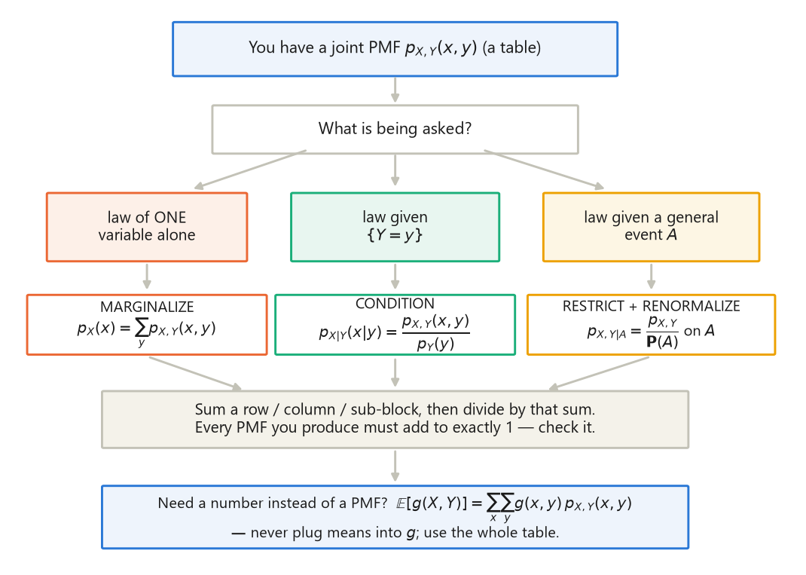
Step 1 — identify the event. $B=\{X\le 2\}\cap\{Y\ge 3\}$ is the $2\times2$ block of cells with $x\in\{1,2\}$ and $y\in\{3,4\}$, namely $(1,3),(2,3),(1,4),(2,4)$.
Step 2 — its probability. Add those four cells: $$\mathbf{P}(B)=p_{X,Y}(1,3)+p_{X,Y}(2,3)+p_{X,Y}(1,4)+p_{X,Y}(2,4) =\tfrac{2}{20}+\tfrac{4}{20}+\tfrac{1}{20}+\tfrac{2}{20}=\tfrac{9}{20}=0.45 .$$
Step 3 — renormalize. Divide each surviving cell by $9/20$, i.e. multiply by $20/9$: $$p_{X,Y\mid B}(1,3)=\frac{2/20}{9/20}=\frac29,\quad p_{X,Y\mid B}(2,3)=\frac{4/20}{9/20}=\frac49,\quad p_{X,Y\mid B}(1,4)=\frac{1}{9},\quad p_{X,Y\mid B}(2,4)=\frac{2}{9},$$ and every other cell is $0$. Check: $\tfrac{2+4+1+2}{9}=\tfrac99=1$ ✓.
Step 4 — the conditional marginals. Marginalize the new table: $$p_{X\mid B}(1)=\tfrac29+\tfrac19=\tfrac39=\tfrac13,\qquad p_{X\mid B}(2)=\tfrac49+\tfrac29=\tfrac69=\tfrac23,$$ $$p_{Y\mid B}(3)=\tfrac29+\tfrac49=\tfrac69=\tfrac23,\qquad p_{Y\mid B}(4)=\tfrac19+\tfrac29=\tfrac39=\tfrac13 .$$ Both sum to $1$ ✓.
Step 5 — conditional mean and variance of $X$. $$\mathbb{E}[X\mid B]=1\cdot\tfrac13+2\cdot\tfrac23=\tfrac13+\tfrac43=\tfrac53\approx1.6667,$$ $$\mathbb{E}[X^2\mid B]=1\cdot\tfrac13+4\cdot\tfrac23=\tfrac13+\tfrac83=3,\qquad \operatorname{var}(X\mid B)=3-\Big(\tfrac53\Big)^2=3-\tfrac{25}{9}=\tfrac{2}{9}\approx0.2222 .$$ Compare with the unconditional $\mathbb{E}[X]=2.45$, $\operatorname{var}(X)=0.8475$: conditioning on $B$ pushes the mean down (it forbids $X=3,4$) and shrinks the variance by a factor of nearly four (only two values survive).
Likewise $\mathbb{E}[Y\mid B]=3\cdot\tfrac23+4\cdot\tfrac13=2+\tfrac43=\tfrac{10}{3}\approx3.3333$ and $\operatorname{var}(Y\mid B)=\big(9\cdot\tfrac23+16\cdot\tfrac13\big)-\big(\tfrac{10}{3}\big)^2 =\tfrac{18+16}{3}-\tfrac{100}{9}=\tfrac{102-100}{9}=\tfrac29\approx0.2222$.
Step 6 — the punchline the slide is fishing for. Multiply the conditional marginals: $$p_{X\mid B}(1)p_{Y\mid B}(3)=\tfrac13\cdot\tfrac23=\tfrac29 =p_{X,Y\mid B}(1,3)\ ✓,\qquad p_{X\mid B}(2)p_{Y\mid B}(3)=\tfrac23\cdot\tfrac23=\tfrac49=p_{X,Y\mid B}(2,3)\ ✓,$$ $$p_{X\mid B}(1)p_{Y\mid B}(4)=\tfrac13\cdot\tfrac13=\tfrac19=p_{X,Y\mid B}(1,4)\ ✓,\qquad p_{X\mid B}(2)p_{Y\mid B}(4)=\tfrac23\cdot\tfrac13=\tfrac29=p_{X,Y\mid B}(2,4)\ ✓ .$$ All four cells factor, so conditioned on $B$, $X$ and $Y$ are independent — even though (as §4.5 shows) they are not independent unconditionally. As a corollary, $\mathbb{E}[XY\mid B]=\mathbb{E}[X\mid B]\,\mathbb{E}[Y\mid B]=\tfrac53\cdot\tfrac{10}{3} =\tfrac{50}{9}\approx5.5556$, which you can verify directly: $\tfrac{1\cdot3\cdot2+2\cdot3\cdot4+1\cdot4\cdot1+2\cdot4\cdot2}{9} =\tfrac{6+24+4+16}{9}=\tfrac{50}{9}$ ✓.
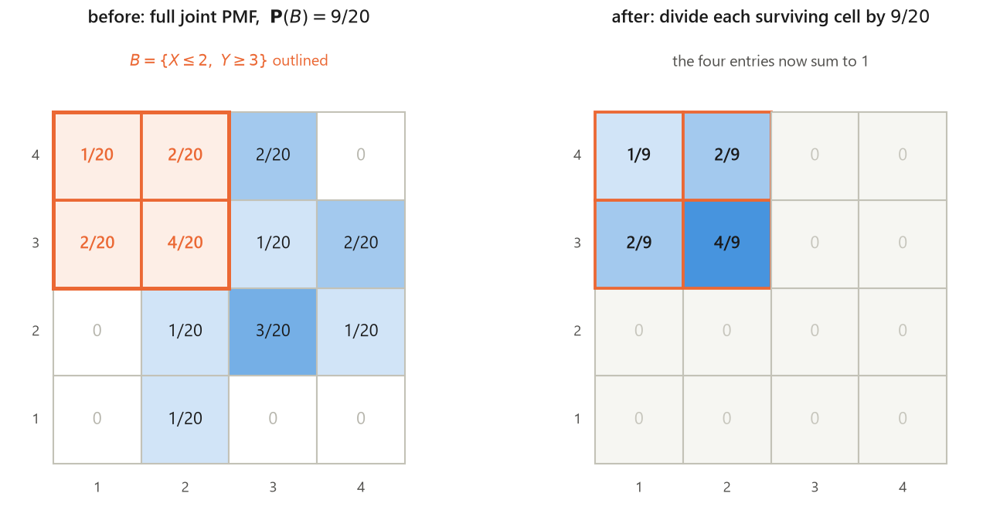
The widget below is the whole of §4.3–§4.4 made interactive. Pick a conditioning event and watch
the conditional PMF of $X$ redraw with the renormalization spelled out. All displayed values are
verified in computes/g2_s4.py (block "widget table").
Three experiments worth running. (1) Choose $Y=1$: the conditional PMF collapses to a single stem of height $1$ at $x=2$, $\mathbb{E}=2$, $\operatorname{var}=0$ — one observation removes all uncertainty. (2) Choose $Y=3$: the readout gives $\mathbb{E}=2.3333$, $\operatorname{var}=1.1111$, matching Example 4.3, and the shape is close to the unconditional one because row $y=3$ carries $9/20$ of all the mass. (3) Compare "$X\le2$ and $Y\ge3$" ($\mathbb{E}=1.6667$, $\operatorname{var}=0.2222$) with "$X\le2$" alone ($\mathbb{E}=1.7273$, $\operatorname{var}=0.1983$): both truncate $X$ to $\{1,2\}$, but adding the $Y\ge3$ requirement reweights which of the two is more likely, from $8/11$ to $2/3$.
Solution
The diagonal cells are $(1,1)=0$, $(2,2)=1/20$, $(3,3)=1/20$, $(4,4)=0$. So $\mathbf{P}(C)=\tfrac{1}{20}+\tfrac{1}{20}=\tfrac{2}{20}=\tfrac{1}{10}=0.1$. Renormalizing, $p_{X,Y\mid C}(2,2)=\frac{1/20}{2/20}=\tfrac12$ and $p_{X,Y\mid C}(3,3)=\tfrac12$; all other cells are $0$ and the two sum to $1$ ✓. Hence $\mathbb{E}[X\mid C]=2\cdot\tfrac12+3\cdot\tfrac12=\tfrac52=2.5$ (and by symmetry $\mathbb{E}[Y\mid C]=2.5$ as well).
Solution
No. Both have the same numerator $\mathbf{P}(X\le2,\ Y\ge3)=9/20$, but different denominators. $\mathbf{P}(Y\ge3)=\tfrac{9}{20}+\tfrac{5}{20}=\tfrac{14}{20}$, so $\mathbf{P}(X\le2\mid Y\ge3)=\frac{9/20}{14/20}=\tfrac{9}{14}\approx0.6429$. Meanwhile $\mathbf{P}(X\le2)=\tfrac{11}{20}$, so $\mathbf{P}(Y\ge3\mid X\le2)=\frac{9/20}{11/20}=\tfrac{9}{11}\approx0.8182$. Same joint mass, two different conditional probabilities — the asymmetry of conditioning, again.
4.5 Independence of random variables
G1 defined independence for events: $A$ and $B$ are independent if $\mathbf{P}(A\cap B)=\mathbf{P}(A)\mathbf{P}(B)$ — a single numerical identity. For random variables the definition demands the same identity for every value pair simultaneously. L07 slide 3 prints the qualifier "for all $x,y,z$" in red for exactly this reason.
Fastest disproof: find one zero in the wrong place. The cell $(1,1)$ has $p_{X,Y}(1,1)=0$. But $p_X(1)=\tfrac{3}{20}=0.15>0$ and $p_Y(1)=\tfrac{1}{20}=0.05>0$, so $$p_X(1)\,p_Y(1)=\tfrac{3}{20}\cdot\tfrac{1}{20}=\tfrac{3}{400}=0.0075\ne 0=p_{X,Y}(1,1).$$ The factorization fails at $(x,y)=(1,1)$, so $X$ and $Y$ are not independent.
Why the zero pattern alone settles it. If $X$ and $Y$ were independent, the set of cells with positive probability would be a full rectangle: $p_{X,Y}(x,y)>0$ exactly when $p_X(x)>0$ and $p_Y(y)>0$. Fig. 4.1's support is a ragged blob, not a rectangle, so independence is impossible. Learn this as a one-second visual test.
Second disproof: conditionals differ. From Example 4.3, $p_{X|Y}(2\mid1)=1$ while $p_{X|Y}(2\mid2)=\tfrac15=0.2$. Independence would require both to equal $p_X(2)=\tfrac{8}{20}=0.4$. Knowing $Y$ demonstrably changes the law of $X$.
Third view: the covariance is nonzero. Using the expected value rule of §4.6, $$\mathbb{E}[XY]=\sum_x\sum_y xy\,p_{X,Y}(x,y)=\tfrac{139}{20}=6.95,$$ while $\mathbb{E}[X]\mathbb{E}[Y]=2.45\times2.9=7.105=\tfrac{1421}{200}$, so $$\operatorname{cov}(X,Y)=\mathbb{E}[XY]-\mathbb{E}[X]\mathbb{E}[Y]=6.95-7.105=-0.155=-\tfrac{31}{200}\ne0 .$$ A nonzero covariance proves dependence (independence forces $\mathbb{E}[XY]=\mathbb{E}[X]\mathbb{E}[Y]$), though a zero covariance would not prove independence.
- Support test. Is the set of positive cells a full rectangle (product of the two supports)? If a cell is $0$ while its row and column totals are both positive, answer no, done.
- Proportional rows test. Independence means every row of the table is a scalar multiple of every other row. Pick two rows and two columns and check $\dfrac{p_{X,Y}(x_1,y_1)}{p_{X,Y}(x_1,y_2)}=\dfrac{p_{X,Y}(x_2,y_1)}{p_{X,Y}(x_2,y_2)}$; a single violation answers no (this is the trick rec07 P2 uses).
- Full check. Compute both marginals and verify $p_{X,Y}(x,y)=p_X(x)p_Y(y)$ in every cell. Only a complete pass justifies answering yes.
Solution
Marginals: $p_X(0)=\tfrac18+\tfrac38=\tfrac12$, $p_X(1)=\tfrac18+\tfrac38=\tfrac12$; $p_Y(0)=\tfrac18+\tfrac18=\tfrac14$, $p_Y(1)=\tfrac38+\tfrac38=\tfrac34$. Check all four cells: $p_X(0)p_Y(0)=\tfrac12\cdot\tfrac14=\tfrac18$ ✓; $p_X(0)p_Y(1)=\tfrac12\cdot\tfrac34=\tfrac38$ ✓; $p_X(1)p_Y(0)=\tfrac18$ ✓; $p_X(1)p_Y(1)=\tfrac38$ ✓. All four hold, so $X$ and $Y$ are independent. (This is Table A of Practice 4.2.)
Solution
$\mathbb{E}[X]=\tfrac13(-1+0+1)=0$ and $XY=X\cdot X^2=X^3$, so $\mathbb{E}[XY]=\mathbb{E}[X^3]=\tfrac13(-1+0+1)=0$. Hence $\operatorname{cov}(X,Y)=0-0\cdot\mathbb{E}[Y]=0$. But $Y$ is a function of $X$: given $X=0$ we know $Y=0$ with certainty, i.e. $p_{Y|X}(0\mid0)=1$, whereas $p_Y(0)=\tfrac13$. The factorization fails ($p_{X,Y}(0,0)=\tfrac13$ but $p_X(0)p_Y(0)=\tfrac13\cdot\tfrac13=\tfrac19$), so they are dependent. Zero covariance does not imply independence.
Solution
By the three-variable factorization, every one of the $8$ triples has probability $\tfrac12\cdot\tfrac12\cdot\tfrac12=\tfrac18$. The event $\{X_1=X_2=X_3\}$ is $\{(0,0,0),(1,1,1)\}$, so its probability is $2\cdot\tfrac18=\tfrac14=0.25$. The event $\{X_1+X_2+X_3=2\}$ contains the three triples with exactly two ones, so its probability is $3\cdot\tfrac18=\tfrac38=0.375$ — the binomial value $\binom{3}{2}(\tfrac12)^2(\tfrac12)^1$.
4.6 Expectation of a function of two random variables; linearity
L07 slide 4 states the expected value rule for two variables and three consequences without proof. rec07 P1 (= B&T Problem 2.35, p. 130) asks for exactly the missing verification, and the recitation handout defers it to the text. Here it is in full.
Part 1 — verify the expected value rule using the single-variable rule. The trick is to package the pair into one random variable. Define $W=(X,Y)$, a random variable taking values in pairs; more carefully, since we only need a discrete object, let $z$ range over the distinct values of $Z=g(X,Y)$. Start from the definition of expectation applied to $Z$: $$\mathbb{E}[Z]=\sum_z z\,p_Z(z).$$ Every variable here: $z$ is a value of $Z$, and $p_Z(z)=\mathbf{P}(g(X,Y)=z)$.
Now express $p_Z(z)$ through the joint PMF. The event $\{Z=z\}$ is the union of the disjoint cells $\{X=x,Y=y\}$ over all pairs $(x,y)$ with $g(x,y)=z$; disjoint because distinct cells are disjoint. Additivity gives $$p_Z(z)=\sum_{\{(x,y)\,:\,g(x,y)=z\}} p_{X,Y}(x,y).$$ Substitute: $$\mathbb{E}[Z]=\sum_z z\!\!\sum_{\{(x,y):g(x,y)=z\}}\!\! p_{X,Y}(x,y) =\sum_z \sum_{\{(x,y):g(x,y)=z\}} \underbrace{z}_{=\,g(x,y)}\,p_{X,Y}(x,y) =\sum_z\sum_{\{(x,y):g(x,y)=z\}} g(x,y)\,p_{X,Y}(x,y),$$ where the constant $z$ moved inside the inner sum (it does not depend on $(x,y)$) and was then rewritten as $g(x,y)$, legal because inside that inner sum $g(x,y)=z$ by construction. Finally, the sets $\{(x,y):g(x,y)=z\}$ over distinct $z$ are disjoint and their union is all pairs, so the double sum is just a sum over all $(x,y)$: $$\mathbb{E}[g(X,Y)]=\sum_x\sum_y g(x,y)\,p_{X,Y}(x,y).\qquad\blacksquare$$
Part 2 — linearity, $\mathbb{E}[aX+bY]=a\mathbb{E}[X]+b\mathbb{E}[Y]$. Apply the rule with $g(x,y)=ax+by$, where $a,b$ are given scalars: $$\mathbb{E}[aX+bY]=\sum_x\sum_y (ax+by)\,p_{X,Y}(x,y) =a\sum_x\sum_y x\,p_{X,Y}(x,y)+b\sum_x\sum_y y\,p_{X,Y}(x,y),$$ splitting the sum (finite sums may be split) and pulling out the constants. Treat the first double sum: $x$ does not depend on the inner index $y$, so $$\sum_x\sum_y x\,p_{X,Y}(x,y)=\sum_x x\sum_y p_{X,Y}(x,y)=\sum_x x\,p_X(x)=\mathbb{E}[X],$$ the middle step being marginalization (§4.2). Symmetrically, exchanging the order of summation, $$\sum_x\sum_y y\,p_{X,Y}(x,y)=\sum_y y\sum_x p_{X,Y}(x,y)=\sum_y y\,p_Y(y)=\mathbb{E}[Y].$$ Therefore $\mathbb{E}[aX+bY]=a\mathbb{E}[X]+b\mathbb{E}[Y]$. $\blacksquare$
Corollaries on slide 4. Taking $b=0$ and adding a constant (a degenerate random variable with $\mathbb{E}[\beta]=\beta$) gives $\mathbb{E}[\alpha X+\beta]=\alpha\mathbb{E}[X]+\beta$. Applying the two-variable result twice gives $\mathbb{E}[X+Y+Z]=\mathbb{E}[(X+Y)+Z]=\mathbb{E}[X+Y]+\mathbb{E}[Z] =\mathbb{E}[X]+\mathbb{E}[Y]+\mathbb{E}[Z]$, and by induction the same for any finite number of terms. No independence is used anywhere in this derivation — linearity holds for arbitrarily dependent random variables.
Solution
Way 1 (linearity): $\mathbb{E}[X+Y]=\mathbb{E}[X]+\mathbb{E}[Y]=2.45+2.9=5.35$.
Way 2 (expected value rule, cell by cell, numerators over 20): $$\sum_x\sum_y (x+y)\,p_{X,Y}(x,y)=\tfrac{1}{20}\Big[ \underbrace{(1{+}4)1+(2{+}4)2+(3{+}4)2}_{y=4} +\underbrace{(1{+}3)2+(2{+}3)4+(3{+}3)1+(4{+}3)2}_{y=3}$$ $$+\underbrace{(2{+}2)1+(3{+}2)3+(4{+}2)1}_{y=2} +\underbrace{(2{+}1)1}_{y=1}\Big] =\tfrac{1}{20}\big[(5+12+14)+(8+20+6+14)+(4+15+6)+3\big]=\tfrac{107}{20}=5.35\ ✓$$ Linearity is obviously the cheaper route — that is the point of it.
Solution
By linearity (no independence needed): $\mathbb{E}[3X-2Y+5]=3\mathbb{E}[X]-2\mathbb{E}[Y]+5=3(2)-2(-1)+5=6+2+5=13$. By the product rule (independence needed): $\mathbb{E}[XY]=\mathbb{E}[X]\mathbb{E}[Y]=2\cdot(-1)=-2$.
4.7 Variance of a sum
Slide 5 lists three variance facts and then three examples with the answers left blank. We derive the general result first, then fill in all three blanks.
Recall from §3 the two scaling rules, both immediate from the definition $\operatorname{var}(W)=\mathbb{E}[(W-\mathbb{E}[W])^2]$: $$\operatorname{var}(aX)=a^2\operatorname{var}(X),\qquad \operatorname{var}(X+a)=\operatorname{var}(X),$$ for any constant $a$ — scaling stretches deviations by $|a|$ (hence squares by $a^2$), shifting moves the mean along with the values and leaves deviations untouched.
Derivation (the slide states the result with no proof). Write $\mu_X=\mathbb{E}[X]$ and $\mu_Y=\mathbb{E}[Y]$ for the two means, and let $Z=X+Y$. By linearity (§4.6), $\mathbb{E}[Z]=\mu_X+\mu_Y$. Then, by definition of variance, $$\operatorname{var}(Z)=\mathbb{E}\big[(Z-\mathbb{E}[Z])^2\big] =\mathbb{E}\big[\big((X+Y)-(\mu_X+\mu_Y)\big)^2\big] =\mathbb{E}\big[\big((X-\mu_X)+(Y-\mu_Y)\big)^2\big],$$ regrouping terms inside the square. Expand the square algebraically: $$\big((X-\mu_X)+(Y-\mu_Y)\big)^2=(X-\mu_X)^2+2(X-\mu_X)(Y-\mu_Y)+(Y-\mu_Y)^2 .$$ Take expectations of all three pieces and use linearity again: $$\operatorname{var}(X+Y)=\underbrace{\mathbb{E}[(X-\mu_X)^2]}_{=\operatorname{var}(X)} +2\underbrace{\mathbb{E}[(X-\mu_X)(Y-\mu_Y)]}_{=\operatorname{cov}(X,Y)} +\underbrace{\mathbb{E}[(Y-\mu_Y)^2]}_{=\operatorname{var}(Y)} .$$ Now suppose $X$ and $Y$ are independent. Then so are the shifted variables $X-\mu_X$ and $Y-\mu_Y$ (each is a function of one original variable only), so the product rule of §4.6 applies with $g(x)=x-\mu_X$ and $h(y)=y-\mu_Y$: $$\mathbb{E}[(X-\mu_X)(Y-\mu_Y)]=\mathbb{E}[X-\mu_X]\cdot\mathbb{E}[Y-\mu_Y] =(\mu_X-\mu_X)(\mu_Y-\mu_Y)=0\cdot0=0 .$$ The cross term is zero and $\operatorname{var}(X+Y)=\operatorname{var}(X)+\operatorname{var}(Y)$. $\blacksquare$
(i) If $X=Y$, what is $\operatorname{var}(X+Y)$? Here $Y$ is not an independent copy of $X$; it is literally the same random variable, so $X+Y=2X$ and by the scaling rule $$\operatorname{var}(X+Y)=\operatorname{var}(2X)=2^2\operatorname{var}(X)=4\operatorname{var}(X),$$ not $2\operatorname{var}(X)$. The cross-term view confirms it: $\operatorname{cov}(X,X)=\mathbb{E}[(X-\mu_X)^2]=\operatorname{var}(X)$, so $\operatorname{var}(X)+\operatorname{var}(X)+2\operatorname{var}(X)=4\operatorname{var}(X)$. Numerically, with the Fig. 4.1 marginal ($\operatorname{var}(X)=0.8475$): $\operatorname{var}(X+Y)=4(0.8475)=3.39=\tfrac{339}{100}$, whereas the (wrong) independent formula would have given $1.695$.
(ii) If $X=-Y$, what is $\operatorname{var}(X+Y)$? Then $X+Y=X+(-X)=0$, a constant. A constant has zero deviation from its mean, so $$\operatorname{var}(X+Y)=\operatorname{var}(0)=0 .$$ Again the cross-term view: $\operatorname{cov}(X,-X)=-\operatorname{var}(X)$, so $\operatorname{var}(X)+\operatorname{var}(-X)+2\operatorname{cov}(X,-X) =\operatorname{var}(X)+\operatorname{var}(X)-2\operatorname{var}(X)=0$ ✓. With $\operatorname{var}(X)=0.8475$ this is $0.8475+0.8475-1.695=0$.
(iii) If $X,Y$ are independent and $Z=X-3Y$, what is $\operatorname{var}(Z)$? Write $Z=X+(-3Y)$. The variables $X$ and $-3Y$ are independent ($-3Y$ is a function of $Y$ alone), so additivity applies, and then the scaling rule handles the factor: $$\operatorname{var}(Z)=\operatorname{var}(X)+\operatorname{var}(-3Y) =\operatorname{var}(X)+(-3)^2\operatorname{var}(Y)=\operatorname{var}(X)+9\operatorname{var}(Y).$$ Note the sign disappears — variances add even for a difference. A numeric instance using the two marginals of Fig. 4.1 as if they were independent ($\operatorname{var}(X)=0.8475$, $\operatorname{var}(Y)=0.69$): $$\operatorname{var}(Z)=0.8475+9(0.69)=0.8475+6.21=7.0575=\tfrac{2823}{400}.$$
Solution
For one fair die, $\mathbb{E}[D]=\tfrac{1+2+3+4+5+6}{6}=\tfrac{21}{6}=3.5$ and $\mathbb{E}[D^2]=\tfrac{1+4+9+16+25+36}{6}=\tfrac{91}{6}$, so $\operatorname{var}(D)=\tfrac{91}{6}-(3.5)^2=\tfrac{91}{6}-\tfrac{49}{4} =\tfrac{182-147}{12}=\tfrac{35}{12}\approx2.9167$. By independence and additivity, $\operatorname{var}(D_1+D_2+D_3)=3\cdot\tfrac{35}{12}=\tfrac{35}{4}=8.75$ and $\operatorname{var}(D_1-D_2)=\operatorname{var}(D_1)+\operatorname{var}(D_2) =2\cdot\tfrac{35}{12}=\tfrac{35}{6}\approx5.8333$.
Solution
$\operatorname{var}(X+cY)=\operatorname{var}(X)+c^2\operatorname{var}(Y)=4+9c^2$. This is minimized at $c=0$, giving $4$: with independent noise, mixing in any multiple of $Y$ can only increase the spread. (If $X$ and $Y$ were correlated the answer would change — that is the idea behind least-squares estimation, developed later in the course.)
4.8 Binomial mean and variance via indicator variables
L07 slide 6 sets up the binomial mean as the brute-force sum $\mathbb{E}[X]=\sum_{k=0}^{n}k\binom{n}{k}p^k(1-p)^{n-k}$, introduces the indicator variables $X_i$, and then leaves every subsequent line blank. Filling them in is the payoff for §4.6–§4.7.
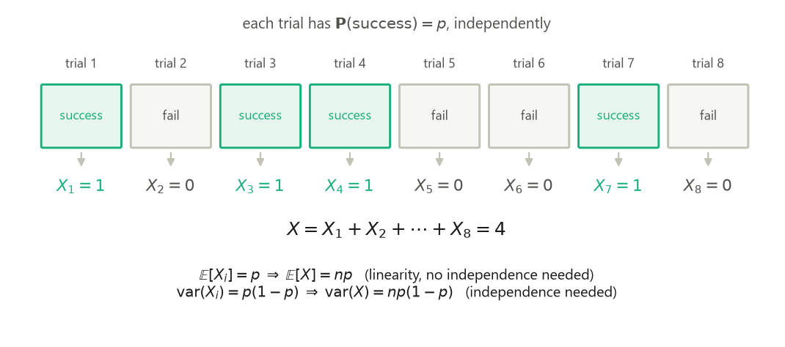
Step 0 — the key identity $X=\sum_{i=1}^n X_i$. For any outcome of the $n$ trials, the sum $X_1+\cdots+X_n$ adds a $1$ for each success and a $0$ for each failure, so it equals the number of successes, which is $X$. This is an identity between random variables (it holds outcome by outcome), not merely between their distributions.
Blank 1 — $\mathbb{E}[X_i]$. Directly from the definition of expectation for a two-valued random variable: $$\mathbb{E}[X_i]=1\cdot\mathbf{P}(X_i=1)+0\cdot\mathbf{P}(X_i=0)=1\cdot p+0\cdot(1-p)=p .$$ The expectation of an indicator is the probability of the event it indicates — remember this; it is the engine of the whole method.
Blank 2 — $\mathbb{E}[X]$. Apply linearity of expectation (§4.6) to the sum of $n$ terms: $$\mathbb{E}[X]=\mathbb{E}\Big[\sum_{i=1}^n X_i\Big]=\sum_{i=1}^n\mathbb{E}[X_i] =\underbrace{p+p+\cdots+p}_{n\text{ terms}}=np .$$ Two lines, and no binomial coefficient in sight. Contrast the brute-force route on the slide, which requires the identity $k\binom{n}{k}=n\binom{n-1}{k-1}$ and a re-indexing of the sum. Note also that independence was never used — linearity holds regardless, which is precisely why the same argument will solve the hat problem of §4.10, where the $X_i$ are dependent.
Blank 3 — $\operatorname{var}(X_i)$. Since $X_i$ only takes values $0$ and $1$, we have $X_i^2=X_i$ (because $0^2=0$ and $1^2=1$), hence $\mathbb{E}[X_i^2]=\mathbb{E}[X_i]=p$. Then $$\operatorname{var}(X_i)=\mathbb{E}[X_i^2]-(\mathbb{E}[X_i])^2=p-p^2=p(1-p).$$
Blank 4 — $\operatorname{var}(X)$. The $X_i$ are independent, so variances add (§4.7), term by term: $$\operatorname{var}(X)=\operatorname{var}\Big(\sum_{i=1}^n X_i\Big)=\sum_{i=1}^n\operatorname{var}(X_i) =\underbrace{p(1-p)+\cdots+p(1-p)}_{n\text{ terms}}=np(1-p).$$
Numerical check ($n=10$, $p=0.3$). The formulas give $\mathbb{E}[X]=10(0.3)=3$ and $\operatorname{var}(X)=10(0.3)(0.7)=2.1$, with $\operatorname{var}(X_i)=0.3\times0.7=0.21$. Evaluating the brute-force sums directly from the binomial PMF gives $\sum_{k=0}^{10}k\binom{10}{k}(0.3)^k(0.7)^{10-k}=3$ and $\sum_k k^2\binom{10}{k}(0.3)^k(0.7)^{10-k}-3^2=11.1-9=2.1$ — identical, as they must be.
- Name the events. $A_1,\dots,A_n$ = the individual things that might happen.
- Define indicators. $X_i=1$ if $A_i$ occurs, else $0$; then the count is $X=\sum_i X_i$ — verify this identity outcome by outcome.
- Mean. $\mathbb{E}[X]=\sum_i \mathbf{P}(A_i)$ by linearity. Works even when the $A_i$ overlap or are dependent.
- Variance. Only if the $X_i$ are independent may you write $\operatorname{var}(X)=\sum_i \mathbf{P}(A_i)(1-\mathbf{P}(A_i))$. Otherwise expand $X^2=\sum_i X_i^2+\sum_{i\ne j}X_iX_j$ and compute $\mathbb{E}[X_iX_j]=\mathbf{P}(A_i\cap A_j)$ pair by pair.
Solution
Binomial with $n=5$, $p=\tfrac12$: $\mathbb{E}[X]=np=5\cdot\tfrac12=\tfrac52=2.5$ and $\operatorname{var}(X)=np(1-p)=5\cdot\tfrac12\cdot\tfrac12=\tfrac54=1.25$. Also $\mathbf{P}(X=5)=\binom{5}{5}(\tfrac12)^5=\tfrac{1}{32}=0.03125$.
Solution
Both are correct. $X=\sum_i X_i$ still holds, $\mathbb{E}[X_i]=p_i$, and linearity gives $\mathbb{E}[X]=\sum_i p_i$ with no assumption on the $p_i$ or on independence. The variance formula uses $\operatorname{var}(X_i)=p_i(1-p_i)$ and additivity, which requires independence — which we have here. ($X$ is no longer binomial; it is called Poisson-binomial. The mean and variance formulas survive, the PMF does not.)
Solution
Index the $\binom52=10$ pairs and let $Z_{ij}=1$ if tosses $i$ and $j$ are both heads. Then $\mathbb{E}[Z_{ij}]=\mathbf{P}(\text{both heads})=\tfrac12\cdot\tfrac12=\tfrac14$ by independence of the two tosses. By linearity the expected number of all-heads pairs is $10\cdot\tfrac14=\tfrac{10}{4}=2.5$. Note that the $Z_{ij}$ are dependent (they share tosses) — irrelevant for the mean.
4.9 Recitation workout: three joint-PMF problems in full
Solution
(a) The marginal of $N$. The die is fair with four faces, so each of the outcomes $0,1,2,3$ has probability $\tfrac14$: $$p_N(n)=\begin{cases}\tfrac14,&n\in\{0,1,2,3\},\\ 0,&\text{otherwise.}\end{cases}$$ This needs nothing but the die (left panel of Fig. 4.5 shows the joint table; the marginal is the row totals, each $\tfrac14$). Its mean and variance: $\mathbb{E}[N]=\tfrac{0+1+2+3}{4}=\tfrac{6}{4}=\tfrac32=1.5$, and $\mathbb{E}[N^2]=\tfrac{0+1+4+9}{4}=\tfrac{14}{4}=3.5$, so $\operatorname{var}(N)=3.5-(1.5)^2=3.5-2.25=1.25=\tfrac54$.
(b) The joint PMF. Use the multiplication rule $p_{N,K}(n,k)=p_N(n)\,p_{K|N}(k\mid n)$. Given $N=n$, the coin is flipped $n$ independent times with $\mathbf{P}(H)=\tfrac12$, so conditionally $K$ is binomial with parameters $n$ and $\tfrac12$: $$p_{K|N}(k\mid n)=\binom{n}{k}\Big(\tfrac12\Big)^k\Big(\tfrac12\Big)^{n-k} =\frac{\binom{n}{k}}{2^{\,n}},\qquad k=0,1,\dots,n .$$ Multiplying by $p_N(n)=\tfrac14$ throughout:
$n=0$ (no flips at all, so $K=0$ with certainty):
$p_{N,K}(0,0)=\tfrac14\cdot1=\tfrac14$.
$n=1$: $\binom10/2=\tfrac12$ and $\binom11/2=\tfrac12$, so
$p_{N,K}(1,0)=\tfrac14\cdot\tfrac12=\tfrac18$ and $p_{N,K}(1,1)=\tfrac18$.
$n=2$: $\tfrac{\binom20}{4}=\tfrac14$, $\tfrac{\binom21}{4}=\tfrac24=\tfrac12$,
$\tfrac{\binom22}{4}=\tfrac14$, so
$p_{N,K}(2,0)=\tfrac14\cdot\tfrac14=\tfrac1{16}$,
$p_{N,K}(2,1)=\tfrac14\cdot\tfrac12=\tfrac18$,
$p_{N,K}(2,2)=\tfrac1{16}$.
$n=3$: $\tfrac{\binom30}{8}=\tfrac18$, $\tfrac{\binom31}{8}=\tfrac38$,
$\tfrac{\binom32}{8}=\tfrac38$, $\tfrac{\binom33}{8}=\tfrac18$, so
$p_{N,K}(3,0)=\tfrac1{32}$, $p_{N,K}(3,1)=\tfrac3{32}$,
$p_{N,K}(3,2)=\tfrac3{32}$, $p_{N,K}(3,3)=\tfrac1{32}$.
Normalization check over the common denominator $32$: $8+(4+4)+(2+4+2)+(1+3+3+1)=8+8+8+8=32$, i.e. the entries sum to $\tfrac{32}{32}=1$ ✓. (Each row sums to $\tfrac14$, as it must, since the row total is $p_N(n)$.)
(c) $p_{K|N}(k\mid2)$. Divide row $n=2$ by $p_N(2)=\tfrac14$ — equivalently, read off the conditional binomial with $n=2$, $p=\tfrac12$: $$p_{K|N}(0\mid2)=\frac{1/16}{1/4}=\frac14,\qquad p_{K|N}(1\mid2)=\frac{1/8}{1/4}=\frac12,\qquad p_{K|N}(2\mid2)=\frac{1/16}{1/4}=\frac14,$$ and $0$ otherwise; the three add to $\tfrac14+\tfrac12+\tfrac14=1$ ✓ (middle panel of Fig. 4.5). Its mean is $\mathbb{E}[K\mid N=2]=0(\tfrac14)+1(\tfrac12)+2(\tfrac14)=1$, consistent with the binomial formula $np=2\cdot\tfrac12=1$.
(d) $p_{N|K}(n\mid2)$. This is the "reverse" conditional and needs Bayes-style arithmetic. First the marginal of $K$ at $2$ — sum the column $k=2$ (marginalization, §4.2): $$p_K(2)=p_{N,K}(0,2)+p_{N,K}(1,2)+p_{N,K}(2,2)+p_{N,K}(3,2) =0+0+\tfrac1{16}+\tfrac3{32}=\tfrac{2}{32}+\tfrac{3}{32}=\tfrac{5}{32}=0.15625 .$$ Only $n=2$ and $n=3$ contribute: to get $2$ heads you need at least $2$ tosses, and $N\le3$. Now divide: $$p_{N|K}(2\mid2)=\frac{p_{N,K}(2,2)}{p_K(2)}=\frac{1/16}{5/32} =\frac{2/32}{5/32}=\frac25=0.4,$$ $$p_{N|K}(3\mid2)=\frac{p_{N,K}(3,2)}{p_K(2)}=\frac{3/32}{5/32}=\frac35=0.6 .$$ (The recitation handout states $3/5$ without showing this division — [SOLUTION GAP] filled. The handout also contains two typos: it says "at least 3 coin tosses ... only $N=3$ and $N=4$", which should read "at least 2 coin tosses ... only $N=2$ and $N=3$", since $N\le3$ always; and it writes the denominator as the four-term sum $1/16+1/32+1/32+1/32$, which equals the correct $5/32$ because $3/32$ has been split into three $1/32$'s. The numerical answers are unaffected.) Check: $\tfrac25+\tfrac35=1$ ✓ (right panel of Fig. 4.5). The conditional mean is $\mathbb{E}[N\mid K=2]=2(\tfrac25)+3(\tfrac35)=\tfrac45+\tfrac95=\tfrac{13}{5}=2.6$ — seeing two heads makes the larger die value more plausible, pushing the mean above the unconditional $\mathbb{E}[N]=1.5$.
Beyond the handout — the marginal of $K$, and $\mathbb{E}[K]$ two ways. Summing each column over the common denominator $32$: $$p_K(0)=\tfrac{8+4+2+1}{32}=\tfrac{15}{32},\quad p_K(1)=\tfrac{0+4+4+3}{32}=\tfrac{11}{32},\quad p_K(2)=\tfrac{5}{32},\quad p_K(3)=\tfrac{1}{32},$$ summing to $\tfrac{15+11+5+1}{32}=\tfrac{32}{32}=1$ ✓. Then directly, $$\mathbb{E}[K]=0\cdot\tfrac{15}{32}+1\cdot\tfrac{11}{32}+2\cdot\tfrac{5}{32}+3\cdot\tfrac{1}{32} =\tfrac{11+10+3}{32}=\tfrac{24}{32}=\tfrac34=0.75 .$$ Via the total expectation theorem instead, using $\mathbb{E}[K\mid N=n]=n\cdot\tfrac12$ (conditional binomial mean): $$\mathbb{E}[K]=\sum_{n=0}^{3}p_N(n)\,\mathbb{E}[K\mid N=n] =\tfrac14\Big(0+\tfrac12+1+\tfrac32\Big)=\tfrac14\cdot 3=\tfrac34=0.75\ ✓$$ — the same answer with far less arithmetic, and the reason conditioning is a computational tool and not just a concept. For completeness, $\mathbb{E}[K^2]=0+1\cdot\tfrac{11}{32}+4\cdot\tfrac{5}{32}+9\cdot\tfrac{1}{32}=\tfrac{40}{32}=\tfrac54$, so $\operatorname{var}(K)=\tfrac54-\big(\tfrac34\big)^2=\tfrac{20-9}{16}=\tfrac{11}{16}=0.6875$.
Are $N$ and $K$ independent? No. $p_{N,K}(0,1)=0$ while $p_N(0)\,p_K(1)=\tfrac14\cdot\tfrac{11}{32}=\tfrac{11}{128}\approx0.0859\ne0$: the support is triangular, not rectangular (Recipe of §4.5, test 1).
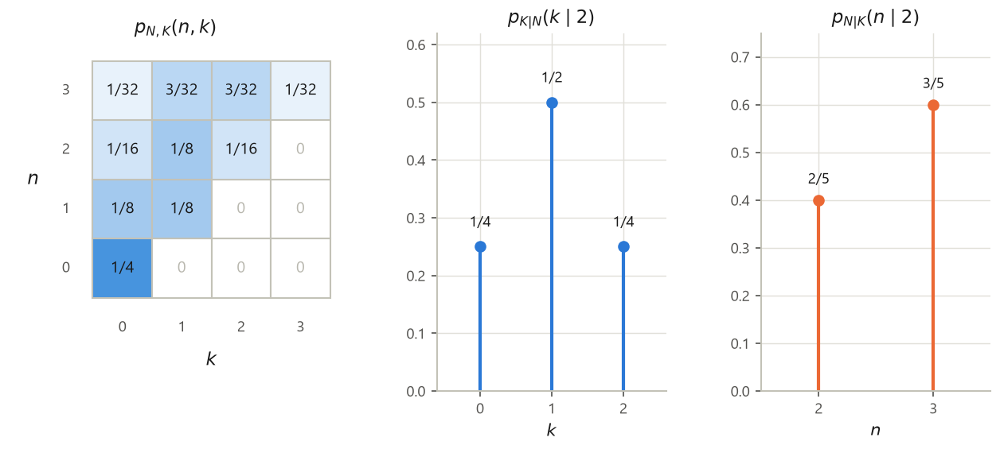
Solution
Marginals first. Group the eight points by $x$: $x=0$ has $(0,3),(0,1)$; $x=2$ has $(2,2),(2,1)$; $x=4$ has $(4,3),(4,2),(4,1),(4,0)$. Hence $$p_X(0)=\tfrac28=\tfrac14,\qquad p_X(2)=\tfrac28=\tfrac14,\qquad p_X(4)=\tfrac48=\tfrac12,$$ summing to $1$ ✓. Grouping by $y$: $y=0$ has $(4,0)$; $y=1$ has $(0,1),(2,1),(4,1)$; $y=2$ has $(2,2),(4,2)$; $y=3$ has $(0,3),(4,3)$, so $$p_Y(0)=\tfrac18,\qquad p_Y(1)=\tfrac38,\qquad p_Y(2)=\tfrac28=\tfrac14,\qquad p_Y(3)=\tfrac28=\tfrac14,$$ summing to $1$ ✓.
(a) Conditional means of $Y$ (the handout states the three values with no arithmetic — [SOLUTION GAP] filled). Conditioning on $X=x$ makes the points in that column equally likely, since they had equal mass to begin with.
- $X=0$: the surviving points are $(0,3),(0,1)$, each with conditional probability $\frac{1/8}{1/4}=\tfrac12$. So $\mathbb{E}[Y\mid X=0]=3(\tfrac12)+1(\tfrac12)=\tfrac{3+1}{2}=2 .$
- $X=2$: points $(2,2),(2,1)$, each $\tfrac12$, so $\mathbb{E}[Y\mid X=2]=2(\tfrac12)+1(\tfrac12)=\tfrac32=1.5 .$
- $X=4$: points $(4,3),(4,2),(4,1),(4,0)$, each $\frac{1/8}{1/2}=\tfrac14$, so $\mathbb{E}[Y\mid X=4]=\tfrac{3+2+1+0}{4}=\tfrac64=\tfrac32=1.5 .$
For any other $x$ the conditional expectation is undefined ($p_X(x)=0$). The maximum is $2$, attained uniquely at $\boxed{x=0}$.
(b) Conditional variances of $X$ ([SOLUTION GAP] filled). Conditioning on $Y=y$ again leaves a uniform distribution on the surviving $x$-values.
- $y=0$: only $(4,0)$, so $X=4$ with probability $1$; $\mathbb{E}[X\mid Y=0]=4$ and $\operatorname{var}(X\mid Y=0)=0$.
- $y=1$: $X$ is uniform on $\{0,2,4\}$ (each $\frac{1/8}{3/8}=\tfrac13$). Mean $\tfrac{0+2+4}{3}=2$; second moment $\tfrac{0+4+16}{3}=\tfrac{20}{3}$; so $\operatorname{var}(X\mid Y=1)=\tfrac{20}{3}-2^2=\tfrac{20-12}{3}=\tfrac83\approx2.6667 .$
- $y=2$: $X$ uniform on $\{2,4\}$ (each $\tfrac12$). Mean $3$; second moment $\tfrac{4+16}{2}=10$; so $\operatorname{var}(X\mid Y=2)=10-9=1 .$
- $y=3$: $X$ uniform on $\{0,4\}$ (each $\tfrac12$). Mean $2$; second moment $\tfrac{0+16}{2}=8$; so $\operatorname{var}(X\mid Y=3)=8-4=4 .$
The maximum is $4$, attained at $\boxed{y=3}$ — the two surviving points are as far apart as the diagram allows, which is what maximizes spread.
(c) The PMF of $R=\min(X,Y)$ ([SOLUTION GAP]: the handout gives only the sketch; here is the point-by-point mapping). Evaluate $\min(x,y)$ at each of the eight equally likely points: $$(0,3)\mapsto0,\quad(0,1)\mapsto0,\quad(4,0)\mapsto0,\quad (2,1)\mapsto1,\quad(4,1)\mapsto1,\quad(2,2)\mapsto2,\quad(4,2)\mapsto2,\quad(4,3)\mapsto3 .$$ Counting: three points give $R=0$, two give $R=1$, two give $R=2$, one gives $R=3$. Since each point has mass $\tfrac18$, $$p_R(0)=\tfrac38,\qquad p_R(1)=\tfrac28=\tfrac14,\qquad p_R(2)=\tfrac28=\tfrac14,\qquad p_R(3)=\tfrac18,$$ summing to $\tfrac{3+2+2+1}{8}=1$ ✓ (right panel of Fig. 4.6). Its mean: $\mathbb{E}[R]=0(\tfrac38)+1(\tfrac14)+2(\tfrac14)+3(\tfrac18)=\tfrac{0+2+4+3}{8}=\tfrac98=1.125$. Note this is a function of two random variables handled by the expected value rule in disguise — we summed $g(x,y)=\min(x,y)$ against the joint PMF.
(d) $\mathbb{E}[XY]$ and $\mathbb{E}[XY\mid A]$. By the expected value rule with $g(x,y)=xy$, traversing the points top to bottom and left to right: $$\mathbb{E}[XY]=\tfrac18\big(0\cdot3+4\cdot3+2\cdot2+4\cdot2+0\cdot1+2\cdot1+4\cdot1+4\cdot0\big) =\tfrac18\big(0+12+4+8+0+2+4+0\big)=\tfrac{30}{8}=\tfrac{15}{4}=3.75 .$$ For the conditional version, first identify $A=\{X^2\ge Y\}$ point by point: $(0,3)$: $0\ge3$ false; $(4,3)$: $16\ge3$ true; $(2,2)$: $4\ge2$ true; $(4,2)$: true; $(0,1)$: $0\ge1$ false; $(2,1)$: $4\ge1$ true; $(4,1)$: true; $(4,0)$: $16\ge0$ true. So conditioning on $A$ removes exactly the two point masses at $(0,3)$ and $(0,1)$, leaving six, and $$\mathbf{P}(A)=\tfrac68=\tfrac34=0.75,\qquad \text{each survivor now has mass } \frac{1/8}{3/4}=\frac16 .$$ Therefore $$\mathbb{E}[XY\mid A]=\tfrac16\big(4\cdot3+2\cdot2+4\cdot2+2\cdot1+4\cdot1+4\cdot0\big) =\tfrac16\big(12+4+8+2+4+0\big)=\tfrac{30}{6}=5 .$$ Conditioning raised the mean product from $3.75$ to $5$ — unsurprising, since the discarded points both had $X=0$ and hence $XY=0$.
Bonus: are $X$ and $Y$ independent here? No. $\mathbb{E}[X]=0(\tfrac14)+2(\tfrac14)+4(\tfrac12)=\tfrac52$ and $\mathbb{E}[Y]=0(\tfrac18)+1(\tfrac38)+2(\tfrac14)+3(\tfrac14)=\tfrac{0+3+4+6}{8}=\tfrac{13}{8}$, so $\mathbb{E}[X]\mathbb{E}[Y]=\tfrac52\cdot\tfrac{13}{8}=\tfrac{65}{16}=4.0625$ while $\mathbb{E}[XY]=3.75$; the covariance is $3.75-4.0625=-0.3125=-\tfrac{5}{16}\ne0$, which proves dependence (§4.5). The support is also ragged — e.g. $(0,0)$ has probability $0$ although $p_X(0)>0$ and $p_Y(0)>0$.
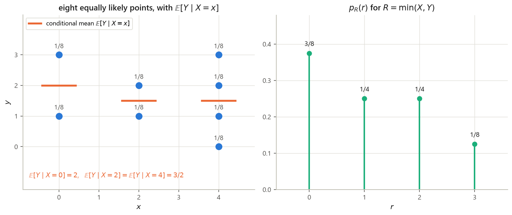
Solution
(a) The whole column $x=1$ is known, so marginalization (§4.2) works despite the missing entries: $$p_X(1)=p_{X,Y}(1,1)+p_{X,Y}(1,2)+p_{X,Y}(1,3)=\tfrac{1}{12}+\tfrac{2}{12}+\tfrac{1}{12} =\tfrac{4}{12}=\tfrac13\approx0.3333 .$$
(b) Divide that column by its total: $$p_{Y|X}(y\mid1)=\frac{p_{X,Y}(1,y)}{p_X(1)}:\qquad p_{Y|X}(1\mid1)=\frac{1/12}{4/12}=\frac14,\quad p_{Y|X}(2\mid1)=\frac{2/12}{4/12}=\frac12,\quad p_{Y|X}(3\mid1)=\frac{1/12}{4/12}=\frac14,$$ and $0$ otherwise; the three add to $1$ ✓. The handout gives only this formula and no drawing ([SOLUTION GAP]); the sketch is the right panel of Fig. 4.7.
(c) $$\mathbb{E}[Y\mid X=1]=\sum_{y=1}^{3}y\,p_{Y|X}(y\mid1) =1\cdot\tfrac14+2\cdot\tfrac12+3\cdot\tfrac14=\tfrac14+1+\tfrac34=2 .$$ (The conditional law is symmetric about $y=2$, so the answer had to be $2$.) For completeness, $\mathbb{E}[Y^2\mid X=1]=1(\tfrac14)+4(\tfrac12)+9(\tfrac14)=\tfrac{1+8+9}{4}=\tfrac{18}{4}=4.5$, so $\operatorname{var}(Y\mid X=1)=4.5-4=0.5$.
(d) No choice makes them independent. (All the intermediate arithmetic the handout skips is shown — [SOLUTION GAP] filled.) Argue by contradiction: suppose $X,Y$ are independent. The bottom row is fully known, so $$p_Y(1)=p_{X,Y}(1,1)+p_{X,Y}(2,1)+p_{X,Y}(3,1)=\tfrac1{12}+\tfrac2{12}+0=\tfrac{3}{12}=\tfrac14 .$$ Since $p_{X,Y}(3,1)=0$ and independence requires $p_{X,Y}(3,1)=p_X(3)p_Y(1)$, we get $p_X(3)\cdot\tfrac14=0$, hence $p_X(3)=0$. A zero marginal forces the whole column to vanish: $p_{X,Y}(3,2)=p_{X,Y}(3,3)=0$. The only unspecified entry left is $(2,2)$, and it must absorb all remaining mass: $$p_{X,Y}(2,2)=1-\Big[\tfrac1{12}+\tfrac2{12}+\tfrac1{12}+\tfrac2{12}+\tfrac1{12}\Big] =1-\tfrac{7}{12}=\tfrac{5}{12},$$ the bracket being the five known nonzero entries $(1,1),(1,2),(1,3),(2,1),(2,3)$. Now compute the two marginals implied by this completed table: $$p_X(2)=p_{X,Y}(2,1)+p_{X,Y}(2,2)+p_{X,Y}(2,3)=\tfrac2{12}+\tfrac5{12}+\tfrac1{12}=\tfrac{8}{12}=\tfrac23,$$ $$p_Y(2)=p_{X,Y}(1,2)+p_{X,Y}(2,2)+p_{X,Y}(3,2)=\tfrac2{12}+\tfrac5{12}+0=\tfrac{7}{12}.$$ Independence would demand $$p_{X,Y}(2,2)=p_X(2)p_Y(2)=\tfrac{8}{12}\cdot\tfrac{7}{12}=\tfrac{56}{144}=\tfrac{7}{18}\approx0.3889,$$ but we just forced $p_{X,Y}(2,2)=\tfrac5{12}\approx0.4167$. Since $0.4167\ne0.3889$, the assumption fails: no completion makes $X$ and $Y$ independent.
A shorter argument (also in the handout, with its ratios left unevaluated). Use only the four fully known cells at $x\in\{1,2\}$, $y\in\{1,3\}$. Independence would give $$\frac{p_{X,Y}(1,3)}{p_{X,Y}(1,1)}=\frac{p_X(1)p_Y(3)}{p_X(1)p_Y(1)}=\frac{p_Y(3)}{p_Y(1)} =\frac{p_X(2)p_Y(3)}{p_X(2)p_Y(1)}=\frac{p_{X,Y}(2,3)}{p_{X,Y}(2,1)} .$$ But $$\frac{p_{X,Y}(1,3)}{p_{X,Y}(1,1)}=\frac{1/12}{1/12}=1 \qquad\text{while}\qquad \frac{p_{X,Y}(2,3)}{p_{X,Y}(2,1)}=\frac{1/12}{2/12}=\frac12 ,$$ and $1\ne\tfrac12$. The columns are not proportional, so independence is impossible — no knowledge of the starred entries required. (This is test 2 of the Recipe in §4.5.)
(e) $p_{X,Y}(2,2)$ from conditional independence given $B$. The event $B=\{X\le2,\ Y\le2\}$ contains exactly the four cells $(1,1),(2,1),(1,2),(2,2)$. Conditioned on $B$, the joint PMF is each of these divided by $\mathbf{P}(B)$, and conditional independence means that the four conditional cells factor. Equivalently — and this is the cleanest form because $\mathbf{P}(B)$ cancels — the $2\times2$ block of unconditional masses must have proportional rows: $$\frac{p_{X,Y}(1,1)}{p_{X,Y}(1,2)}=\frac{p_{X,Y}(2,1)}{p_{X,Y}(2,2)} .$$ (Both sides equal $p_{Y|B}(1)/p_{Y|B}(2)$ after dividing numerator and denominator by $\mathbf{P}(B)\,p_{X|B}(x)$.) Solve for the unknown: $$p_{X,Y}(2,2)=\frac{p_{X,Y}(1,2)\,p_{X,Y}(2,1)}{p_{X,Y}(1,1)} =\frac{(2/12)(2/12)}{1/12}=\frac{4/144}{1/12}=\frac{4}{144}\cdot\frac{12}{1}=\frac{4}{12}=\frac13 \approx0.3333 .$$
(f) $p_{X,Y\mid B}(2,2)$. First $\mathbf{P}(B)$, by adding the four cells of the block ([SOLUTION GAP]: the handout asserts $9/12$ without this sum): $$\mathbf{P}(B)=p_{X,Y}(1,1)+p_{X,Y}(2,1)+p_{X,Y}(1,2)+p_{X,Y}(2,2) =\tfrac1{12}+\tfrac2{12}+\tfrac2{12}+\tfrac4{12}=\tfrac{9}{12}=\tfrac34=0.75 .$$ Then renormalize (§4.4): $$p_{X,Y\mid B}(2,2)=\frac{p_{X,Y}(2,2)}{\mathbf{P}(B)}=\frac{1/3}{3/4} =\frac13\cdot\frac43=\frac{4}{9}\approx0.4444 .$$ The other three conditional cells are $\frac{1/12}{3/4}=\tfrac19$, $\frac{2/12}{3/4}=\tfrac29$ and $\tfrac29$; they sum with $\tfrac49$ to $\tfrac{1+2+2+4}{9}=1$ ✓. As a final consistency check on (e), the conditional marginals are $p_{X\mid B}(1)=\tfrac19+\tfrac29=\tfrac13$, $p_{X\mid B}(2)=\tfrac29+\tfrac49=\tfrac23$, $p_{Y\mid B}(1)=\tfrac19+\tfrac29=\tfrac13$, $p_{Y\mid B}(2)=\tfrac23$, and indeed $p_{X\mid B}(2)p_{Y\mid B}(2)=\tfrac23\cdot\tfrac23=\tfrac49=p_{X,Y\mid B}(2,2)$ ✓ — the conditional independence we were told to assume.
The moral. Parts (d) and (e)–(f) together show that unconditional dependence and conditional independence coexist happily in the same table: restricting to $B$ throws away the very cells (the $x=3$ column and the $y=3$ row) that broke the proportionality.
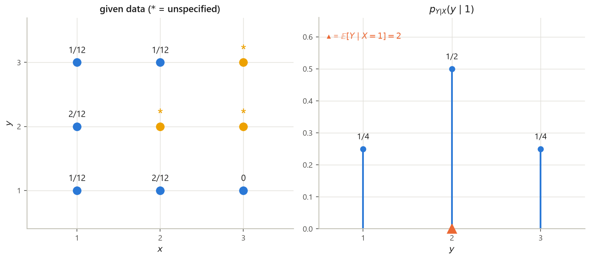
Solution
Column $k=0$ of the table has entries $\tfrac14,\tfrac18,\tfrac1{16},\tfrac1{32}$ at $n=0,1,2,3$; over the denominator $32$ these are $\tfrac{8}{32},\tfrac{4}{32},\tfrac{2}{32}, \tfrac{1}{32}$, so $p_K(0)=\tfrac{15}{32}$. Dividing: $$p_{N|K}(0\mid0)=\tfrac{8}{15},\quad p_{N|K}(1\mid0)=\tfrac{4}{15},\quad p_{N|K}(2\mid0)=\tfrac{2}{15},\quad p_{N|K}(3\mid0)=\tfrac{1}{15},$$ summing to $\tfrac{15}{15}=1$ ✓. Then $\mathbb{E}[N\mid K=0]=\tfrac{0\cdot8+1\cdot4+2\cdot2+3\cdot1}{15}=\tfrac{11}{15}\approx0.7333$ — well below the unconditional $\mathbb{E}[N]=1.5$, since seeing no heads makes few tosses more plausible.
Solution
Given $X=4$, $Y$ is uniform on $\{0,1,2,3\}$ (each $\tfrac14$): mean $\tfrac{0+1+2+3}{4}=\tfrac32$, second moment $\tfrac{0+1+4+9}{4}=\tfrac{14}{4}=3.5$, so $\operatorname{var}(Y\mid X=4)=3.5-2.25=1.25=\tfrac54$. Given $X=0$, $Y$ is uniform on $\{1,3\}$: mean $2$, second moment $\tfrac{1+9}{2}=5$, so $\operatorname{var}(Y\mid X=0)=5-4=1$. The column $x=4$ is both lower on average and more spread out.
Solution
The five known entries sum to $\tfrac{1+1+2+1+2}{12}=\tfrac{7}{12}$ (with $p_{X,Y}(3,1)=0$), so the three starred cells must total $1-\tfrac{7}{12}=\tfrac{5}{12}$. If they are equal, each is $\tfrac{5}{36}\approx0.1389$. Note this is not the value $\tfrac13$ found in part (e) for $p_{X,Y}(2,2)$, which is fine: (e) used a different piece of information (conditional independence given $B$), and a partially specified table can be completed in infinitely many ways.
4.10 The hat problem: indicators without independence
L07 closes with the problem the whole section has been building toward, and leaves every line of
it blank across two slides. It is the exact stress test for §4.6–§4.8: the indicator decomposition
still works, linearity still gives the mean for free, but the indicators are now dependent,
so the variance can no longer be read off term by term. Every number below is recomputed — including
a brute-force check over all $n!$ permutations for $n=2,3,5$ — in computes/g2_s4.py
(block "hat problem").
Blank 1 — $\mathbf{P}(X_i=1)$. Fix a person $i$. By symmetry every one of the $n$ hats is equally likely to be the one person $i$ draws — no hat is distinguished by the shuffling — and exactly one of them is person $i$'s own. The discrete uniform law of G1 therefore gives $$\mathbf{P}(X_i=1)=\frac{\#\{\text{favorable hats}\}}{\#\{\text{possible hats}\}}=\frac1n .$$ (Counting permutations gives the same answer: of the $n!$ equally likely permutations, exactly $(n-1)!$ fix person $i$, and $(n-1)!/n!=1/n$.) Consequently $\mathbf{P}(X_i=0)=1-\tfrac1n$.
Blank 2 — $\mathbb{E}[X_i]$. $X_i$ is an indicator, so its expectation is the probability of the event it indicates (the rule isolated in §4.8): $$\mathbb{E}[X_i]=1\cdot\mathbf{P}(X_i=1)+0\cdot\mathbf{P}(X_i=0)=1\cdot\tfrac1n+0=\tfrac1n .$$
Blank 3 — are the $X_i$ independent? No. Take $n\ge2$ and condition on person $1$ getting their own hat. That hat is gone, so person $2$ is drawing uniformly among the remaining $n-1$ hats, exactly one of which is person $2$'s own: $$\mathbf{P}(X_2=1\mid X_1=1)=\frac{1}{n-1}\ \ne\ \frac1n=\mathbf{P}(X_2=1)\qquad(n\ge2).$$ Since conditioning on $X_1$ changes the law of $X_2$, the factorization test of §4.5 fails and the indicators are dependent. The dependence is positive here — one success makes the next more likely, because removing a matched hat shrinks the pool — which is worth contrasting with the binomial of §4.8, where the trials were independent by construction. For $n=10$ the two numbers are $1/9\approx0.1111$ versus $1/10=0.1$; for $n=100$, $1/99\approx0.010101$ versus $0.01$.
Blank 4 — $\mathbb{E}[X]$. Linearity of expectation (§4.6) needs no independence whatsoever, so it applies verbatim to these dependent indicators: $$\mathbb{E}[X]=\mathbb{E}\Big[\sum_{i=1}^n X_i\Big]=\sum_{i=1}^n\mathbb{E}[X_i] =\underbrace{\tfrac1n+\tfrac1n+\cdots+\tfrac1n}_{n\text{ terms}}=n\cdot\tfrac1n=1 .$$ On average exactly one person gets their own hat, no matter how many people there are. Ten people, a hundred people, a million: the answer is $1$. Obtaining this from the PMF of $X$ instead would mean deriving the number of permutations with exactly $k$ fixed points — a far harder counting problem that the indicator method sidesteps completely.
Blank 5 — $\mathbb{E}[X_i^2]$ (slide 8). $X_i$ takes only the values $0$ and $1$, and $0^2=0$, $1^2=1$, so $X_i^2=X_i$ as random variables. Hence $$\mathbb{E}[X_i^2]=\mathbb{E}[X_i]=\tfrac1n .$$
Blank 6 — $\mathbf{P}(X_1X_2=1)$. The product $X_1X_2$ of two indicators is itself an indicator: it equals $1$ exactly when both $X_1=1$ and $X_2=1$. Apply the multiplication rule for events (G1 §2), which is where the dependence finally shows up: $$\mathbf{P}(X_1X_2=1)=\mathbf{P}(X_1=1,\ X_2=1)=\mathbf{P}(X_1=1)\,\mathbf{P}(X_2=1\mid X_1=1) =\frac1n\cdot\frac{1}{n-1}=\frac{1}{n(n-1)}\qquad(n\ge2),$$ using Blank 1 for the first factor and Blank 3 for the second. Because $X_1X_2$ is an indicator, its expectation is that same probability: $$\mathbb{E}[X_iX_j]=\mathbf{P}(X_i=1,\ X_j=1)=\frac{1}{n(n-1)}\qquad\text{for every }i\ne j,$$ the value being the same for every ordered pair by symmetry of the permutation. Note it is not $\mathbb{E}[X_i]\mathbb{E}[X_j]=1/n^2$ — that is precisely the independence assumption we do not have, and $\tfrac{1}{n(n-1)}>\tfrac{1}{n^2}$ records the positive dependence.
Blank 7 — $\mathbb{E}[X^2]$. Square the decomposition and split the double sum into its diagonal ($i=j$) and off-diagonal ($i\ne j$) parts, exactly as slide 8 writes it: $$X^2=\Big(\sum_{i=1}^n X_i\Big)^2=\sum_{i=1}^n\sum_{j=1}^n X_iX_j =\sum_{i=1}^n X_i^2+\sum_{\substack{i,j\,:\,i\ne j}}X_iX_j .$$ Take expectations and use linearity once more (still no independence needed). The first sum has $n$ terms, each with expectation $1/n$ by Blank 5. The second sum runs over ordered pairs $(i,j)$ with $i\ne j$: there are $n$ choices for $i$ and then $n-1$ for $j$, so $n(n-1)$ terms, each with expectation $\frac{1}{n(n-1)}$ by Blank 6. Therefore $$\mathbb{E}[X^2]=\underbrace{n\cdot\frac1n}_{\text{diagonal}} +\underbrace{n(n-1)\cdot\frac{1}{n(n-1)}}_{\text{off-diagonal}}=1+1=2\qquad(n\ge2).$$ The two cancellations are the whole trick: the count of terms is exactly the reciprocal of each term's expectation, in both blocks.
Blank 8 — $\operatorname{var}(X)$. Use the shortcut formula of §3.2 together with $\mathbb{E}[X]=1$ from Blank 4: $$\operatorname{var}(X)=\mathbb{E}[X^2]-(\mathbb{E}[X])^2=2-1^2=2-1=1\qquad(n\ge2).$$ So the number of people who get their own hat has mean $1$ and variance $1$, for every $n\ge2$. (For $n=1$ the single person always gets their own hat, $X\equiv1$, and $\operatorname{var}(X)=0$; there are no off-diagonal terms.)
Numerical cross-check. Enumerating all $n!$ permutations and computing $X$ directly gives
$\mathbb{E}[X]=1$, $\mathbb{E}[X^2]=2$, $\operatorname{var}(X)=1$ for $n=2,3,5$, and the closed
forms give the same for $n=10$ and $n=100$ ($\mathbf{P}(X_1X_2=1)=1/90$ and $1/9900$
respectively) — see computes/g2_s4.py.
Solution
Label the permutations by which hat each of persons $1,2,3$ receives. The six equally likely outcomes and their fixed-point counts are $$(1,2,3)\mapsto3,\quad(1,3,2)\mapsto1,\quad(2,1,3)\mapsto1,\quad(3,2,1)\mapsto1,\quad (2,3,1)\mapsto0,\quad(3,1,2)\mapsto0 .$$ So $p_X(0)=\tfrac26=\tfrac13$, $p_X(1)=\tfrac36=\tfrac12$, $p_X(2)=0$ (fixing two people forces the third), $p_X(3)=\tfrac16$; they sum to $\tfrac{2+3+0+1}{6}=1\ ✓$. Then $$\mathbb{E}[X]=0\cdot\tfrac13+1\cdot\tfrac12+3\cdot\tfrac16=\tfrac12+\tfrac12=1\ ✓,$$ $$\mathbb{E}[X^2]=0\cdot\tfrac13+1\cdot\tfrac12+9\cdot\tfrac16=\tfrac12+\tfrac32=2\ ✓,\qquad \operatorname{var}(X)=2-1=1\ ✓ .$$ Note $p_X(2)=0$: you can never have exactly $n-1$ fixed points.
Solution
$Y=\sum_{i\ne j}X_iX_j$, a sum of $n(n-1)$ indicators each with expectation $\frac{1}{n(n-1)}$ (Blank 6). By linearity $\mathbb{E}[Y]=n(n-1)\cdot\frac{1}{n(n-1)}=1$ for every $n\ge2$. Reconciling: $X^2=\sum_i X_i^2+Y$, so $\mathbb{E}[X^2]=\mathbb{E}\big[\sum_i X_i^2\big]+\mathbb{E}[Y]=1+1=2\ ✓$ — $\mathbb{E}[Y]$ is the off-diagonal block of Blank 7. (In unordered terms, the expected number of matched pairs is $\binom{n}{2}\frac{1}{n(n-1)}=\tfrac12$.)
Solution
This is the hat problem with $n=10$, so $\mathbb{E}[X]=1$ and $\operatorname{var}(X)=1$ — the physical relabeling (cards and slots instead of hats and people) changes nothing, because the assignment is still a uniformly random permutation.
The independence formula fails because $\mathbf{P}(X_i=1,X_j=1)=\frac{1}{10\cdot9}=\frac{1}{90}$ exceeds $\mathbf{P}(X_i=1)\mathbf{P}(X_j=1)=\frac{1}{100}$: matches are positively correlated, since each match removes one card and one slot, raising every remaining match probability from $1/10$ to $1/9$. The $90$ positive cross terms contribute exactly $90(\tfrac1{90}-\tfrac1{100})=0.1$ of extra variance, restoring $0.9+0.1=1$.
- Joint PMF. $p_{X,Y}(x,y)=\mathbf{P}(X=x,Y=y)\ge0$, $\sum_x\sum_y p_{X,Y}(x,y)=1$. It is a table; every question is a sum of cells possibly followed by a division (L07 slide 2; B&T §2.5).
- Marginals. $p_X(x)=\sum_y p_{X,Y}(x,y)$ — sum the other variable away (total probability theorem). Fig. 4.1 example: $p_X=(\tfrac3{20},\tfrac8{20},\tfrac6{20},\tfrac3{20})$, $p_Y=(\tfrac1{20},\tfrac5{20},\tfrac9{20},\tfrac5{20})$.
- Conditional PMF. $p_{X|Y}(x\mid y)=p_{X,Y}(x,y)/p_Y(y)$ for $p_Y(y)>0$: a row rescaled to sum to $1$. Multiplication rule $p_{X,Y}=p_X\,p_{Y|X}=p_Y\,p_{X|Y}$; chain rule $p_{X,Y,Z}=p_X\,p_{Y|X}\,p_{Z|X,Y}$ (L07 slides 2–3; B&T §2.6).
- Conditioning on an event $A$. Cross out cells outside $A$, add the rest to get $\mathbf{P}(A)$, divide. Slide-3 example: $\mathbf{P}(X\le2,Y\ge3)=\tfrac9{20}$, conditional cells $\tfrac29,\tfrac49,\tfrac19,\tfrac29$, $\mathbb{E}[X\mid B]=\tfrac53$, $\operatorname{var}(X\mid B)=\tfrac29$ — and $X,Y$ become independent given $B$.
- Independence. $p_{X,Y}(x,y)=p_X(x)p_Y(y)$ for all $x,y$ (L07 slide 3, red). Support must be a rectangle; rows must be proportional. The slide-3 grid fails at $(1,1)$: $0\ne\tfrac3{20}\cdot\tfrac1{20}$, so $X,Y$ are dependent — even though the single pair of events $\{X=2\},\{Y=4\}$ happens to be independent.
- Expectations. $\mathbb{E}[g(X,Y)]=\sum_x\sum_y g(x,y)p_{X,Y}(x,y)$; $\mathbb{E}[aX+bY]=a\mathbb{E}[X]+b\mathbb{E}[Y]$ always; $\mathbb{E}[XY]=\mathbb{E}[X]\mathbb{E}[Y]$ only under independence. In general $\mathbb{E}[g(X,Y)]\ne g(\mathbb{E}[X],\mathbb{E}[Y])$ ($6.95$ vs $7.105$ on the slide-3 grid).
- Variances. $\operatorname{var}(aX)=a^2\operatorname{var}(X)$, $\operatorname{var}(X+a)=\operatorname{var}(X)$; $\operatorname{var}(X+Y)=\operatorname{var}(X)+\operatorname{var}(Y)+2\operatorname{cov}(X,Y)$, so independence $\Rightarrow$ variances add. Degenerate cases: $Y=X$ gives $4\operatorname{var}(X)$; $Y=-X$ gives $0$; $Z=X-3Y$ with independence gives $\operatorname{var}(X)+9\operatorname{var}(Y)$ (L07 slide 5).
- Indicators. $\mathbb{E}[\text{indicator}]=\mathbf{P}(\text{event})$. Binomial $X=\sum_i X_i$ gives $\mathbb{E}[X]=np$ (linearity only) and $\operatorname{var}(X)=np(1-p)$ (independence needed), replacing the brute-force sum on L07 slide 6.
- Hat problem (L07 slides 7–8; §4.10). $n$ people, a uniformly random permutation of their hats, $X=$ number of own-hat matches. $\mathbf{P}(X_i=1)=\mathbb{E}[X_i]=\mathbb{E}[X_i^2]=\tfrac1n$; the $X_i$ are dependent, $\mathbf{P}(X_2=1\mid X_1=1)=\tfrac1{n-1}$. Linearity alone gives $\mathbb{E}[X]=n\cdot\tfrac1n=1$. For the variance, $\mathbb{E}[X_iX_j]=\tfrac{1}{n(n-1)}$ over $n(n-1)$ ordered pairs $i\ne j$, so $\mathbb{E}[X^2]=1+1=2$ and $\operatorname{var}(X)=2-1=1$ — both free of $n$ (for $n\ge2$).
- Recitation results. rec06 P1: $p_{K|N}(\cdot\mid2)=(\tfrac14,\tfrac12,\tfrac14)$, $p_{N|K}(\cdot\mid2)=(\tfrac25,\tfrac35)$, $\mathbb{E}[K]=\tfrac34$. rec06 P2: $x=0$ maximizes $\mathbb{E}[Y\mid X=x]$ at $2$; $y=3$ maximizes $\operatorname{var}(X\mid Y=y)$ at $4$; $p_R=(\tfrac38,\tfrac14,\tfrac14,\tfrac18)$; $\mathbb{E}[XY]=\tfrac{15}{4}$, $\mathbb{E}[XY\mid A]=5$. rec07 P2: $p_X(1)=\tfrac13$, $\mathbb{E}[Y\mid X=1]=2$, no independent completion, $p_{X,Y}(2,2)=\tfrac13$, $p_{X,Y\mid B}(2,2)=\tfrac49$.
§5 Synthesis: the discrete toolbox
Sources: L05 slides 2–8 · L06 slides 2–8 · L07 slides 2–8 · rec05 P1–P4 · rec06 P1–P3 · rec07 P1–P3 · B&T §2.1–2.7. Every number on this page is recomputed in computes/g2_s5.py (closed forms are checked against brute-force summation over the PMF).
Three lectures replaced outcomes by numbers. The replacement bought two things that G1 could not express: a single object, the PMF, that carries a whole table of probabilities at once, and two summary numbers, the mean and the variance, that compress that table into a location and a spread. Everything else in G2 — conditional PMFs, joint PMFs, independence, indicators, total expectation — is machinery for computing those two numbers without ever writing the full table down. This section puts the whole toolbox on one page, lists the traps that generate most of the wrong answers, and says precisely what breaks when the values stop being discrete.
5.1 How the pieces fit together
Read the map below as a dependency graph: an arrow means "the target is defined in terms of, or derived from, the source". Three chains descend from the PMF. The left chain is conditioning — a conditional PMF is just a PMF on a smaller universe, and summing conditional expectations against the weights of a partition is the total expectation theorem. The middle chain is averaging — expectation, then the expected-value rule that lets you average any function of $X$ without finding its PMF, then variance as the special case $g(x)=(x-\mathbb{E}[X])^2$. The right chain is multiplicity — joint PMFs, the independence test, and the linearity/indicator machinery that makes sums tractable.
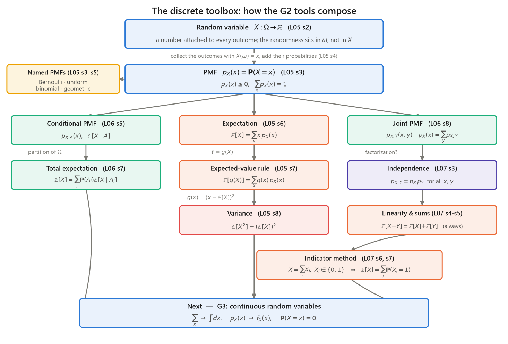
- You have $p_X$ for a die-like $X$ and want $\mathbb{E}[3X^2-2X+1]$.
- $400$ students have independent uniform birthdays; you want the expected number of days of the year on which at least one birthday falls.
- A fair coin decides whether $X$ is uniform on $\{1,\ldots,4\}$ or geometric($1/5$); you want $\mathbb{E}[X]$.
- You have $p_{X,Y}$ and want $p_Y$.
Solution
1. Reweight without rebuilding. The expected-value rule $\mathbb{E}[g(X)]=\sum_x g(x)p_X(x)$ with $g(x)=3x^2-2x+1$ (L05 slide 7). You never need the PMF of $3X^2-2X+1$. Linearity then lets you split it further as $3\mathbb{E}[X^2]-2\mathbb{E}[X]+1$ if you prefer.
2. Decompose into indicators. Let $D_d=1$ if day $d$ has at least one birthday. Then the count is $\sum_{d=1}^{365}D_d$ and $\mathbb{E}[\text{count}]=\sum_d\mathbf{P}(D_d=1)$ (L07 slides 6–7). The $D_d$ are dependent — there are only $400$ birthdays to go around — and linearity does not care.
3. Partition and add. Total expectation over the partition $\{$heads, tails$\}$: $\mathbb{E}[X]=\tfrac12\mathbb{E}[X\mid\text{heads}]+\tfrac12\mathbb{E}[X\mid\text{tails}]$ (L06 slide 7).
4. Partition and add. Marginalization $p_Y(y)=\sum_x p_{X,Y}(x,y)$ partitions the event $\{Y=y\}$ by the value of $X$ (L06 slide 8).
Solution
$X\sim$ binomial($3,\tfrac12$), so $p_X(0)=p_X(3)=\tfrac18$ and $p_X(1)=p_X(2)=\tfrac38$ (these
sum to $1$). The definition gives
$$\mathbb{E}[X]=0\cdot\tfrac18+1\cdot\tfrac38+2\cdot\tfrac38+3\cdot\tfrac18=\tfrac{0+3+6+3}{8}=\tfrac{12}{8}=\tfrac32 .$$
The expected-value rule with $g(x)=x^2$ reuses that same PMF — no new PMF is built:
$$\mathbb{E}[X^2]=0\cdot\tfrac18+1\cdot\tfrac38+4\cdot\tfrac38+9\cdot\tfrac18=\tfrac{0+3+12+9}{8}=\tfrac{24}{8}=3 .$$
Then $\operatorname{var}(X)=\mathbb{E}[X^2]-(\mathbb{E}[X])^2=3-\tfrac94=\tfrac34=0.75$, and the
table's $np(1-p)=3\cdot\tfrac12\cdot\tfrac12=\tfrac34$ agrees. (Compute key
practice.p5_1b.)
5.2 The PMF zoo
Four families cover almost every discrete model in this course. In the table, $p$ is the success probability of a single trial, $n$ is the number of trials, and $a,b$ are the smallest and largest values of the uniform range (all integers between them are included). The "mechanism" column is the sentence in the problem statement that should make you reach for that row.
| Family | PMF | $\mathbb{E}[X]$ | $\operatorname{var}(X)$ | Mechanism that produces it | Source |
|---|---|---|---|---|---|
| Bernoulli($p$) | $p_X(1)=p$, $p_X(0)=1-p$ | $p$ | $p(1-p)$ | One trial with two outcomes; an indicator of any event $A$ with $p=\mathbf{P}(A)$. | L07 s6, s7; B&T §2.2 |
| Uniform on $\{a,\ldots,b\}$ | $p_X(k)=\dfrac{1}{b-a+1}$, $k=a,\ldots,b$ | $\dfrac{a+b}{2}$ | $\dfrac{(b-a)(b-a+2)}{12}$ | "Equally likely", "fair die", "picked at random" with no value preferred over another. | L05 s6; L06 s5; B&T §2.2 |
| Binomial($n,p$) | $p_X(k)=\dbinom{n}{k}p^k(1-p)^{n-k}$, $k=0,\ldots,n$ | $np$ | $np(1-p)$ | Count the successes in a fixed number $n$ of independent identical trials. | L05 s5; L07 s6; rec05 P2; B&T §2.2 |
| Geometric($p$) | $p_X(k)=(1-p)^{k-1}p$, $k=1,2,\ldots$ | $\dfrac{1}{p}$ | $\dfrac{1-p}{p^2}$ | Wait for the first success in independent identical trials; the number of trials is unbounded. | L05 s3; L06 s6, s7; rec06 P3; B&T §2.4 |
The special value $a=0$, $b=n$ of the uniform row is the one on L05 slide 6: mean $n/2$ and
variance $n(n+2)/12$, both verified in computes/g2_s5.py for $n=1,4,9,100$ against
brute-force summation (key uniform_0_n_rule.instances: $n=1\to\tfrac12,\tfrac14$;
$n=4\to 2,2$; $n=9\to\tfrac92,\tfrac{33}{4}$; $n=100\to 50, 850$). Three sanity instances of the other rows, each computed twice —
once from the closed form, once by summing over the PMF:
| Instance | $\sum_x p_X(x)$ | $\mathbb{E}[X]$ | $\mathbb{E}[X^2]$ | $\operatorname{var}(X)$ |
|---|---|---|---|---|
| Bernoulli($0.3$) | $1$ | $0.3$ | $0.3$ | $0.21$ |
| Binomial($10,0.3$) | $1$ | $3$ | $11.1$ | $2.1$ |
| Geometric($0.2$), summed to $k=4000$ | $1.000000000000000$ | $5.000000000000$ | — | $20.000000000000$ |
- Is the quantity a number attached to each outcome? If not, it is an event and G1 already handles it. If yes, name it $X$ and say in words what $X(\omega)$ is.
- Does it come from one of the four mechanisms? one trial $\to$ Bernoulli; nothing prefers one value $\to$ uniform; count successes in $n$ fixed trials $\to$ binomial; wait for the first success $\to$ geometric. Then read the mean and variance off the table and stop.
- If no family fits, build the PMF (L05 slide 4): collect the outcomes with $X(\omega)=x$, add their probabilities, repeat for every $x$, then check $\sum_x p_X(x)=1$.
- Then answer the actual question. A mean of a function of $X$ $\to$ the expected-value rule, never a new PMF. A mean of a sum $\to$ linearity and indicators, and note that independence is not required. A spread $\to$ $\operatorname{var}(X)=\mathbb{E}[X^2]-(\mathbb{E}[X])^2$. A mean you can only compute inside each scenario $\to$ total expectation.
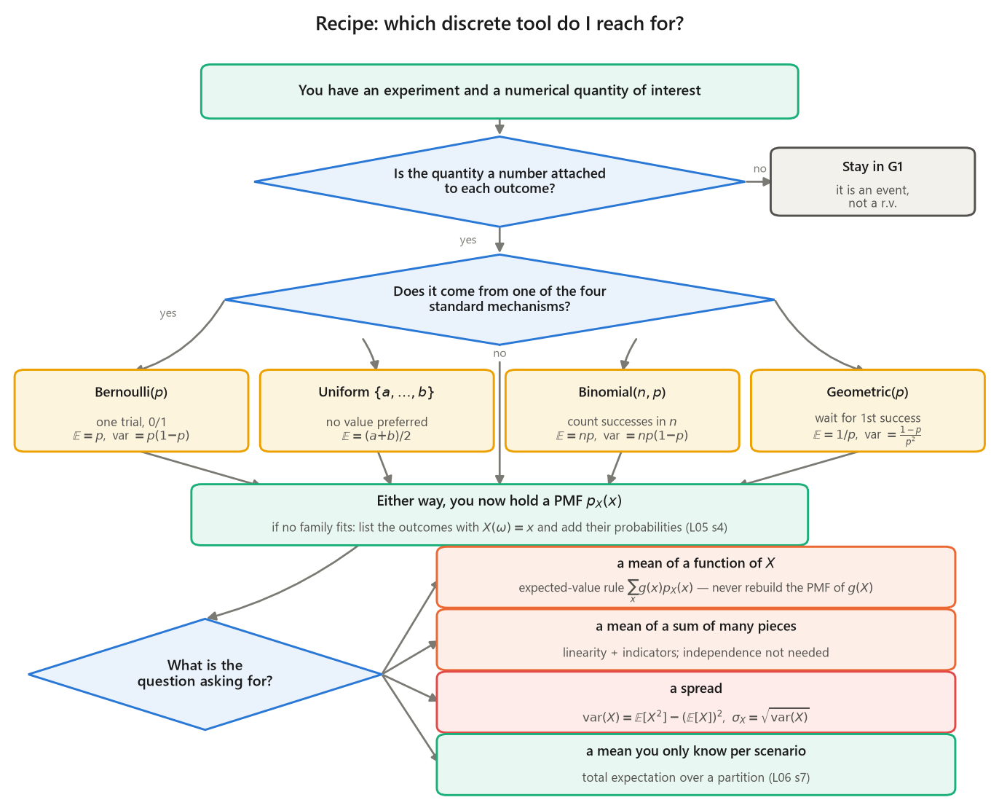
- A machine stamps out parts; each is defective with probability $0.02$, independently of the others. $X$ = number of defectives in a batch of $50$.
- You half-remember a phone number and try a guess; each attempt is correct with probability $1/4$, independently. $X$ = number of attempts up to and including the first correct one.
- A fair $12$-sided die is rolled once and $X$ is the face shown.
- One student is picked at random from a class of $30$ that contains $12$ women; $X=1$ if the student picked is a woman and $X=0$ otherwise.
Solution
1. Binomial($50,0.02$) — the mechanism is "count the successes in a fixed number of independent identical trials". $\mathbb{E}[X]=np=50(0.02)=1$ and $\operatorname{var}(X)=np(1-p)=50(0.02)(0.98)=0.98$.
2. Geometric($1/4$) — "wait for the first success", with the number of trials unbounded. $\mathbb{E}[X]=1/p=4$ and $\operatorname{var}(X)=(1-p)/p^2=(3/4)/(1/16)=12$. Note the standard deviation $\sqrt{12}\approx 3.46$ is nearly as big as the mean, as always for a geometric.
3. Uniform on $\{1,\ldots,12\}$ — "fair die", nothing prefers one value. With $a=1,b=12$, $\mathbb{E}[X]=(a+b)/2=13/2=6.5$ and $\operatorname{var}(X)=(b-a)(b-a+2)/12=(11)(13)/12=143/12\approx 11.916667$.
4. Bernoulli($0.4$) — one trial with two outcomes; $X$ is the indicator of the event
"a woman is picked", whose probability is $12/30=0.4$. So $\mathbb{E}[X]=p=0.4$ and
$\operatorname{var}(X)=p(1-p)=0.4(0.6)=0.24$. (All four in compute key
practice.p5_2a.)
Solution
Not binomial. Step 2 of the recipe fails: the five draws are trials with two outcomes, but they are not independent — drawing an ace first lowers the chance of an ace second, from $4/52$ to $3/51$. The true PMF is hypergeometric.
The mean is still easy, because linearity needs no independence. Let $X_i=1$ if the $i$th
card dealt is an ace. By symmetry each single card is equally likely to be any of the $52$, so
$\mathbf{P}(X_i=1)=4/52=1/13$ for every $i$ — including the fifth. Then
$$\mathbb{E}[X]=\sum_{i=1}^{5}\mathbf{P}(X_i=1)=5\cdot\frac{1}{13}=\frac{5}{13}\approx 0.384615,$$
exactly what binomial($5,1/13$) would have said. The variance is where the difference shows
up: the true value is $940/2873\approx 0.327184$, smaller than the binomial answer
$5\cdot\frac1{13}\cdot\frac{12}{13}\approx 0.355030$, because sampling without replacement makes the
indicators negatively dependent. This is the §5.3 fault line in miniature: means transfer, variances
of sums do not. (Compute key practice.p5_2b, checked against the exact hypergeometric
PMF.)
5.3 The expectation and variance identities
Every identity of G2 in one place. Here $X,Y$ are random variables on the same sample space, $g$ and $h$ are real-valued functions, $a,b,\alpha,\beta$ are constants (not random), $\{A_i\}$ is a partition of $\Omega$ into disjoint events with $\mathbf{P}(A_i)>0$, and $\sigma_X$ is the standard deviation. The "needs independence" column is the one to check first when an identity fails.
| Identity | Statement | Needs independence? | Source |
|---|---|---|---|
| Expectation | |||
| Definition | $\mathbb{E}[X]=\sum_x x\,p_X(x)$ (center of gravity of the PMF) | no | L05 s6; B&T §2.4 |
| Expected-value rule | $\mathbb{E}[g(X)]=\sum_x g(x)\,p_X(x)$ — no need for $p_{g(X)}$ | no | L05 s7; rec05 P1(a) |
| Two-variable version | $\mathbb{E}[g(X,Y)]=\sum_x\sum_y g(x,y)\,p_{X,Y}(x,y)$ | no | L07 s4; rec07 P1 |
| Constants | $\mathbb{E}[\alpha]=\alpha$ | no | L05 s7 |
| Scaling / shifting | $\mathbb{E}[\alpha X+\beta]=\alpha\mathbb{E}[X]+\beta$ | no | L05 s7; rec05 P1(b) |
| Centering | $\mathbb{E}\big[X-\mathbb{E}[X]\big]=0$ | no | L06 s2 |
| Linearity (sums) | $\mathbb{E}[aX+bY]=a\mathbb{E}[X]+b\mathbb{E}[Y]$; $\mathbb{E}[X_1+\cdots+X_n]=\sum_i\mathbb{E}[X_i]$ | no — the most useful fact in G2 | L07 s4; rec07 P1 |
| Products | $\mathbb{E}[XY]=\mathbb{E}[X]\,\mathbb{E}[Y]$, and $\mathbb{E}[g(X)h(Y)]=\mathbb{E}[g(X)]\,\mathbb{E}[h(Y)]$ | yes | L07 s4 |
| Total expectation | $\mathbb{E}[X]=\sum_i \mathbf{P}(A_i)\,\mathbb{E}[X\mid A_i]$, with $\mathbb{E}[X\mid A_i]=\sum_x x\,p_{X\mid A_i}(x)$ | no | L06 s5, s7; rec07 P3 |
| Indicator method | $X=\sum_i X_i$, $X_i\in\{0,1\}$ $\Rightarrow$ $\mathbb{E}[X]=\sum_i\mathbf{P}(X_i=1)$ | no | L07 s6, s7 |
| Variance | |||
| Definition | $\operatorname{var}(X)=\mathbb{E}\big[(X-\mathbb{E}[X])^2\big]=\sum_x (x-\mathbb{E}[X])^2p_X(x)\ \ge 0$ | no | L05 s8 |
| Computational form | $\operatorname{var}(X)=\mathbb{E}[X^2]-(\mathbb{E}[X])^2$ | no | L05 s8; rec05 P1(c) |
| Standard deviation | $\sigma_X=\sqrt{\operatorname{var}(X)}$ — same units as $X$ | no | L06 s2 |
| Shift invariance | $\operatorname{var}(X+a)=\operatorname{var}(X)$ | no | L07 s5 |
| Scaling | $\operatorname{var}(aX+b)=a^2\operatorname{var}(X)$, so $\sigma_{aX+b}=|a|\,\sigma_X$ | no | L05 s8; L07 s5 |
| Sums | $\operatorname{var}(X+Y)=\operatorname{var}(X)+\operatorname{var}(Y)$ | yes | L07 s5 |
| Linear combination | $X,Y$ independent $\Rightarrow$ $\operatorname{var}(aX+bY)=a^2\operatorname{var}(X)+b^2\operatorname{var}(Y)$ | yes | L07 s5 |
| PMF bookkeeping | |||
| Normalization | $\sum_x p_X(x)=1$; $\sum_x\sum_y p_{X,Y}(x,y)=1$; $\sum_x p_{X\mid Y}(x\mid y)=1$ for each fixed $y$ | no | L05 s3; L06 s8 |
| Marginalization | $p_X(x)=\sum_y p_{X,Y}(x,y)$ | no | L06 s8; L07 s2 |
| Multiplication rule | $p_{X,Y}(x,y)=p_X(x)\,p_{Y\mid X}(y\mid x)$; chain rule for three: $p_{X,Y,Z}=p_X\,p_{Y\mid X}\,p_{Z\mid X,Y}$ | no | L07 s2, s3 |
| Total probability for PMFs | $p_X(x)=\sum_i\mathbf{P}(A_i)\,p_{X\mid A_i}(x)$ | no | L06 s7 |
| Independence | $p_{X,Y}(x,y)=p_X(x)p_Y(y)$ for all $x,y$ (three r.v.'s: the triple product for all $x,y,z$) | — | L07 s3 |
| Memorylessness | Geometric: given $X>n$, the r.v. $X-n$ is again geometric($p$) | — | L06 s6 |
computes/g2_s5.py (keys hat, hat_ingredients) at $n=3,5,10,100$.
Step 1 — decompose into indicators. Writing the PMF of $X$ directly is a derangement count and is genuinely hard; the indicator method avoids it entirely. For $i=1,\ldots,n$ set $$X_i=\begin{cases}1,&\text{if person }i\text{ draws his own hat},\\ 0,&\text{otherwise},\end{cases} \qquad\text{so that}\qquad X=X_1+X_2+\cdots+X_n,$$ because adding a $1$ for each person who succeeds is exactly counting the successes.
Step 2 — the single-indicator probability. Person $i$ is equally likely to end up with any one of the $n$ hats (symmetry: the permutation is uniform, so every hat is equally likely to land on person $i$). Exactly one of those $n$ hats is his own, so $$\mathbf{P}(X_i=1)=\frac{1}{n},\qquad\text{hence}\qquad \mathbb{E}[X_i]=1\cdot\frac1n+0\cdot\Big(1-\frac1n\Big)=\frac1n,$$ using the definition of expectation on a two-value PMF. (At $n=3$ this is $1/3$; at $n=100$ it is $1/100$.)
Step 3 — the mean, by linearity alone. The $X_i$ are not independent: given that person $1$ took his own hat, person $2$ now draws from $n-1$ hats, so $\mathbf{P}(X_2=1\mid X_1=1)=1/(n-1)\neq 1/n$. Linearity does not care, since it holds for any random variables on the same sample space (L07 slide 4): $$\mathbb{E}[X]=\sum_{i=1}^{n}\mathbb{E}[X_i]=n\cdot\frac1n=1.$$ On average exactly one person gets his own hat, whatever $n$ is.
Step 4 — expand the square. Use the computational form $\operatorname{var}(X)=\mathbb{E}[X^2]-(\mathbb{E}[X])^2=\mathbb{E}[X^2]-1$ (L05 slide 8, with $\mathbb{E}[X]=1$ from step 3). Multiplying out the sum and splitting the $n^2$ products into the $n$ with $i=j$ and the rest, $$X^2=\Big(\sum_i X_i\Big)^2=\sum_{i}X_i^2+\sum_{i\neq j}X_iX_j .$$
Step 5 — the diagonal terms. Each $X_i$ takes only the values $0$ and $1$, and $0^2=0$, $1^2=1$, so $X_i^2=X_i$ identically. Hence $\mathbb{E}[X_i^2]=\mathbb{E}[X_i]=1/n$, and the $n$ diagonal terms contribute $$\sum_{i}\mathbb{E}[X_i^2]=n\cdot\frac1n=1 .$$
Step 6 — the cross terms. For $i\neq j$ the product $X_iX_j$ is again a $0$–$1$ variable: it equals $1$ exactly when persons $i$ and $j$ both get their own hats. So its expectation is that event's probability, and the multiplication rule of G1 gives $$\mathbb{E}[X_iX_j]=\mathbf{P}(X_i=1,\,X_j=1)=\mathbf{P}(X_i=1)\,\mathbf{P}(X_j=1\mid X_i=1) =\frac1n\cdot\frac{1}{n-1}=\frac{1}{n(n-1)},$$ the conditional factor being $1/(n-1)$ because once person $i$ has removed his own hat, person $j$ is equally likely to hold any of the remaining $n-1$ hats, one of which is his. Note this is larger than $\frac1n\cdot\frac1n$, the value independence would have predicted.
Step 7 — count the cross terms and add. The index pairs $(i,j)$ with $i\neq j$ are ordered: $n$ choices for $i$ and $n-1$ remaining choices for $j$, so there are $n(n-1)$ of them. Every one has the same expectation, so by linearity $$\mathbb{E}[X^2]=\underbrace{n\cdot\frac1n}_{\text{diagonal}} +\underbrace{n(n-1)\cdot\frac{1}{n(n-1)}}_{\text{cross terms}}=1+1=2 .$$
Step 8 — the variance. $$\operatorname{var}(X)=\mathbb{E}[X^2]-(\mathbb{E}[X])^2=2-1^2=1 .$$ Both the mean and the variance are $1$ for every $n\ge 2$ — the count of matches neither grows nor spreads as the crowd gets larger. Each factor of $n$ in a count is cancelled by a factor of $1/n$ in a probability, twice over in step 7.
Why this needed a whole extra slide. Step 3 was one line because linearity is free. Steps 4–7 were long because $\operatorname{var}(X)=\sum_i\operatorname{var}(X_i)$ is illegal here: the $X_i$ are dependent, and that rule would have given $n\cdot\frac1n(1-\frac1n)=1-\frac1n$, which is wrong for every finite $n$ (it says $2/3$ at $n=3$). The cross terms are exactly the correction that the illegal shortcut throws away.
The following worked values are the calibration points of G2. If you can reproduce all of them you
have the section (all recomputed in computes/g2_s5.py).
| Quantity | Value | What it teaches | Source |
|---|---|---|---|
| $p_X(2)$ for $X=\min(F,S)$, two fair tetrahedral rolls | $5/16$ | Building a PMF by cell counting; here $\mathbb{E}[X]=15/8=1.875$ and $\operatorname{var}(X)=55/64=0.859375$. | L05 s4 |
| Number of $2$-head sequences in $4$ tosses | $\binom{4}{2}=6$ | The binomial PMF is "count the sequences, multiply by the common probability $p^2(1-p)^2$". | L05 s5 |
| $\mathbb{E}[X]$, $X$ uniform on $\{0,\ldots,n\}$ | $n/2$ | Symmetry: the center of gravity of a symmetric PMF is its center. | L05 s6 |
| $\mathbb{E}[V]$, $\operatorname{var}(V)$, $\sigma_V$ for the two-point speed PMF | $100.5$; $9900.25$; $99.5$ | A PMF with two far-apart masses has a mean that is not a typical value. | L06 s3 |
| $\mathbb{E}[T]=\mathbb{E}[200/V]$ vs $200/\mathbb{E}[V]$ | $100.5$ vs $1.990050$ | $\mathbb{E}[g(V)]\neq g(\mathbb{E}[V])$ — a factor of $50$ apart. | L06 s4 |
| $\mathbb{E}[TV]$ vs $\mathbb{E}[T]\mathbb{E}[V]$ | $200$ vs $10100.25$ | Products factor only under independence; here $T$ is a function of $V$. | L06 s4 |
| $\mathbb{E}[X\mid X\ge 2]$, $X$ uniform on $\{1,2,3,4\}$ | $3$ (vs $\mathbb{E}[X]=2.5$) | Conditioning renormalizes the surviving masses to $1/3$ each. | L06 s5 |
| $\mathbb{E}[X]$ for geometric($p$), via total expectation | $1/p$ | $\mathbb{E}[X]=p\cdot 1+(1-p)(1+\mathbb{E}[X])$; checked at $p=1/5$: $5=0.2+0.8\cdot 6$. | L06 s7 |
| $\operatorname{var}(X)$ for geometric($p$) | $(1-p)/p^2$ | $p=1/2\to 2$; $p=1/5\to 20$; $p=9/10\to 10/81=0.123457$. | rec06 P3; B&T §2.6, B&T Example 2.17 |
| Hat problem: $\mathbb{E}[X]$ and $\operatorname{var}(X)$ | $1$ and $1$ | Both are free of $n$: verified at $n=3,5,10,100$ via $\mathbb{E}[X^2]=n\cdot\frac1n+n(n-1)\cdot\frac{1}{n(n-1)}=2$ (derived in Example 5.1). | L07 s7, s8 |
| Buses: $\mathbb{E}[X]$ (student-sampled) vs $\mathbb{E}[Y]$ (driver-sampled) | $5814/148=39.28$ vs $37$ | Size-biased sampling inflates the mean by $\operatorname{var}(Y)/\mathbb{E}[Y]=2.283784$. | rec05 P3 |
| St. Petersburg: $\mathbb{E}[\text{gain}]$ | $\infty$ | $\sum_{k\ge1}2^k2^{-k}=\sum_{k\ge1}1$; the partial sum to $k=100$ is exactly $\$100$ and grows without bound. | rec05 P4; B&T Problem 2.21 (p. 123) |
Solution
(a) Computable: $1$. Linearity of expectation is in the "no" column — $\mathbb{E}[X+Y]=\mathbb{E}[X]+\mathbb{E}[Y]=2+(-1)=1$.
(b) Computable: $12$. Same row, plus the constant and scaling rows: $3(2)-2(-1)+4=6+2+4=12$.
(c) Not computable. The variance-of-a-sum row is in the "yes" column. In general $\operatorname{var}(X+Y)=\operatorname{var}(X)+\operatorname{var}(Y)+2\operatorname{cov}(X,Y)$, and you were given no covariance. All you can say is that it lies somewhere in $[(\sqrt5-\sqrt3)^2,(\sqrt5+\sqrt3)^2]$; it equals $8$ only if the covariance happens to vanish.
(d) Not computable. $\mathbb{E}[XY]=\mathbb{E}[X]\mathbb{E}[Y]=-2$ requires independence, which is explicitly denied.
(e) Computable: $12$. $\operatorname{var}(aX+b)=a^2\operatorname{var}(X)=4(3)=12$; the $+1$ is invisible to the variance.
(f) Computable: $\sqrt3\approx 1.732051$. The standard deviation is a function of $\operatorname{var}(X)$ alone.
The pattern: everything involving one variable at a time, or a sum inside an
expectation, is free; everything involving a product or a variance of a sum needs the joint
law. (Compute key practice.p5_3a.)
Solution
By the memorylessness row of the table, conditioned on $\{X>3\}$ the variable $X-3$ is again
geometric($1/5$): the three failed trials are wasted and you are back where you started (L06 slide 6).
Hence $\mathbb{E}[X-3\mid X>3]=1/p=5$, and by the shifting rule for expectations
$$\mathbb{E}[X\mid X>3]=3+\mathbb{E}[X-3\mid X>3]=3+5=8 .$$
For the variance, the shift-invariance row gives
$$\operatorname{var}(X\mid X>3)=\operatorname{var}(X-3\mid X>3)=\frac{1-p}{p^2}=\frac{4/5}{1/25}=20,$$
unchanged from the unconditional $20$. Conditioning on a delay moves the mean but not the spread.
(Both checked by brute-force summation over the conditional PMF in compute key
practice.p5_3b.)
5.4 Top gotchas of G2
These six errors account for most of the lost points on discrete random variables. Each is a place where two objects that read the same in English are different in the formalism.
- "$V$ equals $1$ or $200$ mph with probability $1/2$ each and $T=200/V$. Since $\mathbb{E}[V]=100.5$, the expected travel time is $\mathbb{E}[T]=200/100.5\approx 1.990050$ hours."
- "$X$ is the face of a fair die and $Y=7-X$. Then $\operatorname{var}(X+Y)=\operatorname{var}(X)+\operatorname{var}(Y)=2\cdot\tfrac{35}{12}\approx 5.833333$."
- "For $X\sim$ binomial($10,0.3$) with $\operatorname{var}(X)=2.1$, we get $\operatorname{var}(2X-5)=2(2.1)-5=-0.8$."
Solution
1. Gotcha 1. The illegal step is pushing the expectation through the nonlinear $g(v)=200/v$. Expectation commutes with linear functions only. Correct: $\mathbb{E}[T]=\tfrac12(200/1)+\tfrac12(200/200)=100+0.5=100.5$ hours — a factor of about $50$ off the claimed answer.
2. Gotcha 3. The additive rule was applied to dependent variables; here $Y$ is a deterministic function of $X$, about as dependent as it gets. Correct: $X+Y=X+(7-X)=7$ is a constant, so $\operatorname{var}(X+Y)=0$. The claimed $5.833333$ is not merely inaccurate, it is maximally wrong. (Note $\operatorname{var}(Y)=\operatorname{var}(-X+7)=(-1)^2\operatorname{var}(X)=35/12$ is itself correct.)
3. Gotcha 3 again. Two errors: the constant $b=-5$ was carried through (variance ignores
shifts) and $a=2$ was not squared. Correct:
$\operatorname{var}(2X-5)=2^2\operatorname{var}(X)=4(2.1)=8.4$. A negative variance is impossible, so
check (ii) of the self-check would have caught it. (Compute key practice.p5_4a.)
- "On the L06 slide 8 joint table I checked one cell, $p_{X,Y}(2,3)=p_X(2)p_Y(3)$. So $X$ and $Y$ are independent."
- "Four buses carry $40,33,25,50$ students. Pick a student at random; the expected size of the bus he rode is $(40+33+25+50)/4=37$."
- "Every PMF has a mean, so the fair price of the St. Petersburg game is $\mathbb{E}[X]$, whatever that number turns out to be."
Solution
1. Gotcha 4. Independence requires the factorization at every pair $(x,y)$, not one. One counterexample cell kills it, and this table has an easy one: $p_{X,Y}(1,1)=0$ while $p_X(1)=3/20>0$ and $p_Y(1)=1/20>0$, so the product is positive and the equality fails. A single verified cell proves nothing.
2. Gotcha 5. That computation samples buses uniformly, which is the driver's question, not the student's. A random student lands on a bus with probability proportional to its size, $p_X(x)=x/148$, giving $\mathbb{E}[X]=(40^2+33^2+25^2+50^2)/148=5814/148\approx 39.283784$. The claimed $37$ is $\mathbb{E}[Y]$, and the gap $2.283784=\operatorname{var}(Y)/\mathbb{E}[Y]$ is the size bias.
3. Gotcha 6. The premise is false: $\mathbb{E}[X]=\sum_x x\,p_X(x)$ is an infinite series when the range is infinite and need not converge. Here every term is exactly $1$ dollar ($2^k\cdot 2^{-k}$), so the sum diverges and there is no finite $\mathbb{E}[X]$ to quote as a price. Finiteness of a mean is something you verify, not assume.
5.5 The bridge to G3: what breaks when the values are continuous
Everything in this section assumed $X$ takes values in a finite or countable set, so that the events $\{X=x\}$ partition $\Omega$ into pieces that can be listed and added. Suppose instead $X$ is the exact time a bus arrives, or a voltage, or a point chosen uniformly in $[0,1]$. Two things break at once.
- The PMF collapses to zero. By the continuous uniform law of G1 (L01 slide 10), $\mathbf{P}(X=x)=0$ for every single $x$ in $[0,1]$: a point has zero length. So $p_X(x)\equiv 0$, and it carries no information at all — yet $X$ is certainly somewhere. The object $p_X$ has to be replaced.
- The sum has nothing to run over. $\sum_x x\,p_X(x)$ is a sum over the values with positive mass, and there are none. Uncountably many terms cannot be added.
The repair is the same one calculus always makes: replace mass by density and sums by
integrals. Chop $[0,1]$ into $m$ equal bins of width $1/m$ and put mass $1/m$ at each bin's midpoint.
The mass per bin $\to 0$, but the mass per unit length stays at $\frac{1/m}{1/m}=1$ for every
$m$ — that ratio is the density, and it survives the limit while the mass does not. The moments of the
discretized version converge to the continuous answers (computed in computes/g2_s5.py):
| bins $m$ | mass per bin | density | $\mathbb{E}[X]$ | $\operatorname{var}(X)$ |
|---|---|---|---|---|
| $4$ | $0.25$ | $1$ | $0.5$ | $0.078125$ |
| $10$ | $0.1$ | $1$ | $0.5$ | $0.0825$ |
| $100$ | $0.01$ | $1$ | $0.5$ | $0.083325$ |
| $1000$ | $0.001$ | $1$ | $0.5$ | $0.08333325$ |
| limit | $0$ | $1$ | $1/2$ | $1/12=0.083333\ldots$ |
Solution
(i) The mass per bin is $1/m\to 0$: this is the collapse that makes the PMF useless. (ii) The density is $\frac{1/m}{1/m}=1$ for every $m$ and stays $1$ in the limit — it is the object that survives. (iii) $\mathbb{E}[X]=0.5$ exactly at every $m$, by the symmetry of the midpoints about $1/2$. (iv) $\operatorname{var}(X)\to 1/12=0.0833\ldots$. (v) $\mathbf{P}(X=0.5)$ is $1/m$ while $0.5$ is a bin midpoint and $\to 0$; in the limit every single point has probability zero.
Why from below. The discretized variance has the closed form
$$\operatorname{var}_m(X)=\frac{1}{12}\Big(1-\frac{1}{m^2}\Big)=\frac1{12}-\frac{1}{12m^2},$$
verified against brute-force summation at $m=4,10,100,1000$ (compute key
practice.p5_5a): $5/64=0.078125$, $33/400=0.0825$, $0.083325$, $0.08333325$. The
correction $-1/(12m^2)$ is negative for every finite $m$, so the approach is monotone from below and
never overshoots. Intuitively, collapsing each bin onto its midpoint removes the spread
within bins — a uniform on a bin of width $1/m$ has variance $1/(12m^2)$ — and keeps only
the spread between bins.
Solution
(a) Verbatim. Linearity is a statement about expectations, and expectations survive the translation untouched — this is the whole point of §5.5.
(b) Notational change. The rule itself survives; only the bookkeeping changes: $\mathbb{E}[g(X)]=\int_{-\infty}^{\infty}g(x)f_X(x)\,dx$, with $\sum_x\to\int dx$ and $p_X\to f_X$.
(c) Verbatim. It is derived from linearity and the definition of variance, both of which are expectation statements.
(d) Fails. The replacement object is a density, a probability per unit length, and $f_X(x)>1$ is perfectly legal — the uniform density on $[0,\tfrac12]$ equals $2$. Only $f_X\ge 0$ and $\int f_X=1$ survive.
(e) Verbatim. An indicator is a $0$–$1$ random variable no matter what $X$ is, so it stays discrete and $\mathbb{E}[X_i]=\mathbf{P}(X_i=1)$ still holds. That is exactly why the trick keeps working in G3.
(f) Holds for continuous $X$, fails for discrete $X$. This one runs the other way: $\mathbf{P}(X=c)=0$ in the continuous case makes $\le$ and $<$ interchangeable, whereas for a discrete $X$ with an atom at $c$ the two differ by $p_X(c)$.
- Three moves. Partition and add (build a PMF, marginalize, total expectation); reweight without rebuilding (expected-value rule); decompose into indicators (linearity). Fig. 5.1.
- Four families. Bernoulli($p$): $p$, $p(1-p)$. Uniform $\{a,\ldots,b\}$: $(a+b)/2$, $(b-a)(b-a+2)/12$. Binomial($n,p$): $np$, $np(1-p)$. Geometric($p$): $1/p$, $(1-p)/p^2$. Binomial and geometric are the two questions you can ask of the same Bernoulli stream. Fig. 5.2.
- The fault line. Every expectation rule except $\mathbb{E}[XY]=\mathbb{E}[X]\mathbb{E}[Y]$ holds without independence; every variance-of-a-sum rule needs it. Linearity is free — use indicators. Example 5.1 (the hat problem) is the canonical case: $\mathbb{E}[X]=1$ in one line, but $\operatorname{var}(X)=1$ needs the cross terms $\mathbb{E}[X_iX_j]=1/(n(n-1))$ and the $n(n-1)$ pair count.
- Six traps. $\mathbb{E}[g(X)]\neq g(\mathbb{E}[X])$ ($100.5$ vs $1.990050$ hours); $X$ vs $x$ vs $\mathbb{E}[X]$; $\operatorname{var}(aX+b)=a^2\operatorname{var}(X)$ and is not additive without independence ($1.2275$ vs $1.5375$); independence must hold for all $(x,y)$; size-biased sampling ($39.28$ vs $37$); infinite expectations exist (St. Petersburg).
- Next. Continuous values force $p_X\to f_X$ and $\sum_x\to\int dx$, because $\mathbf{P}(X=x)=0$. Densities may exceed $1$; the identity table survives unchanged.